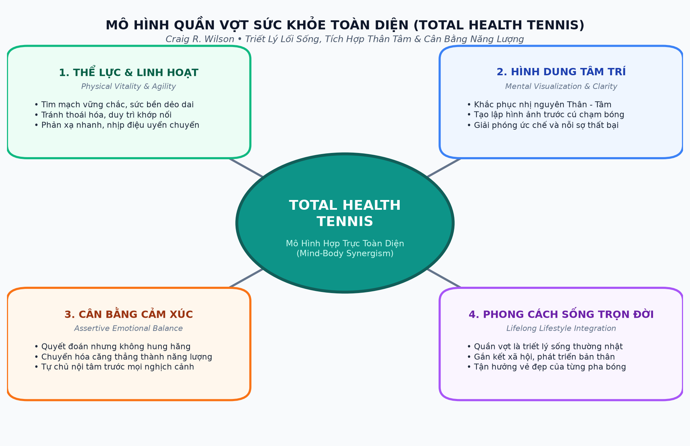
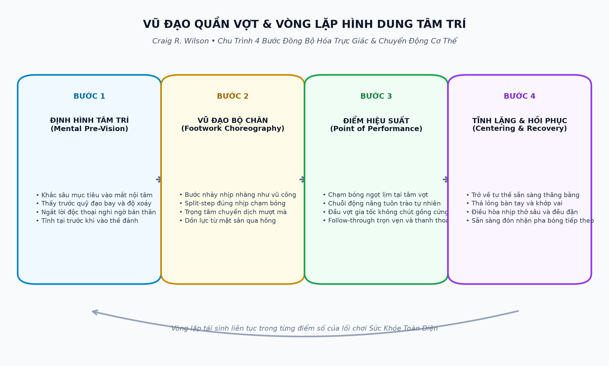
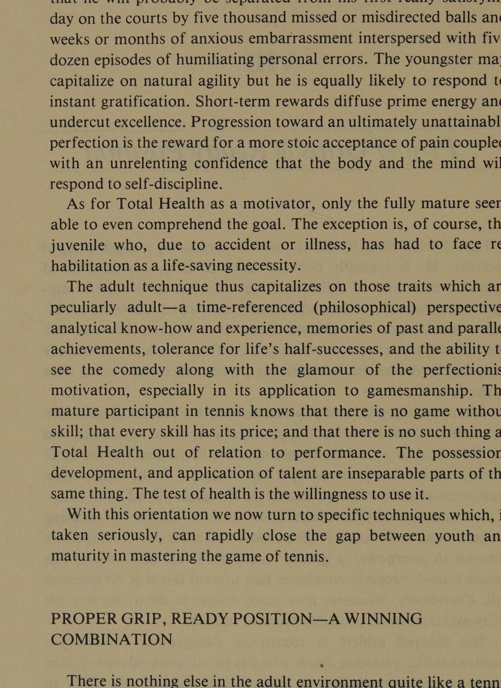
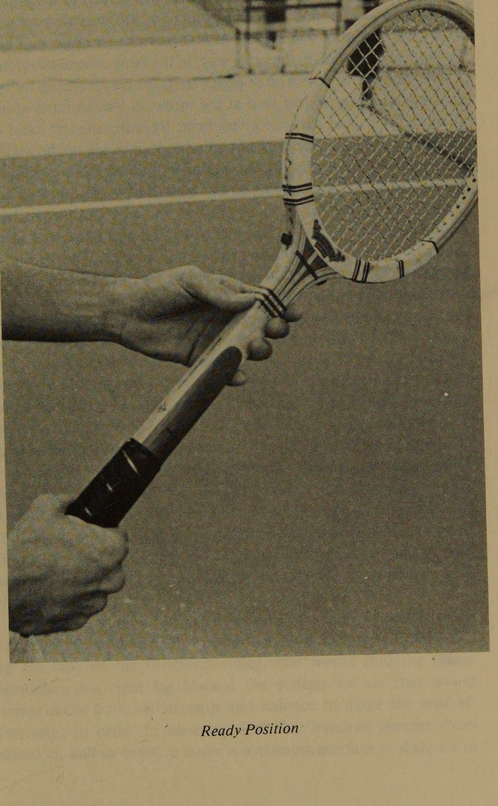
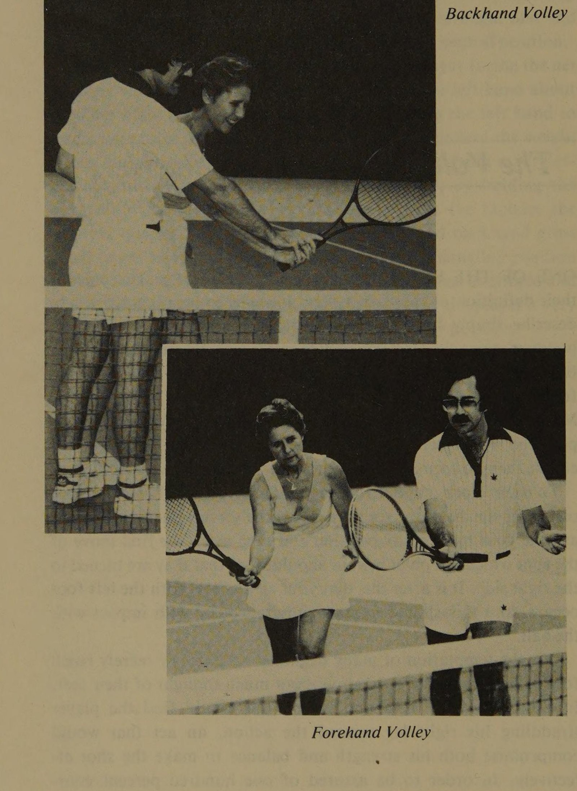
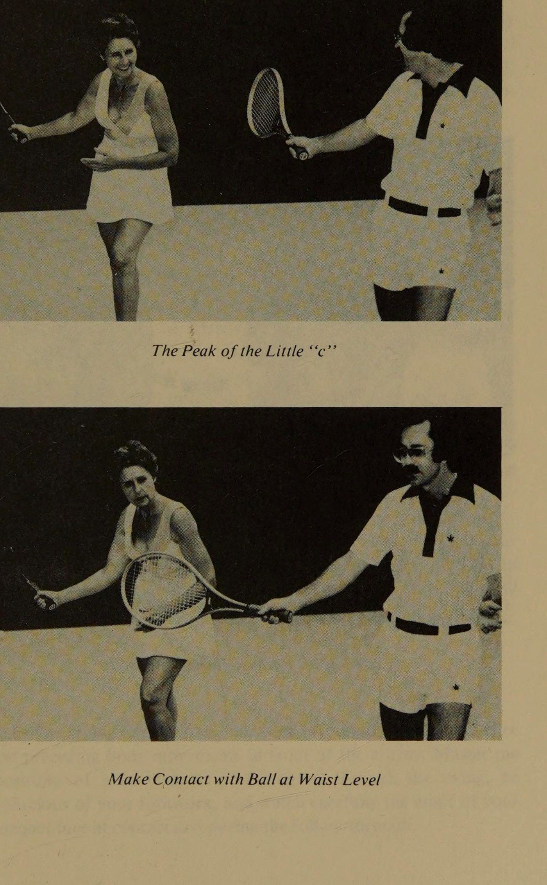
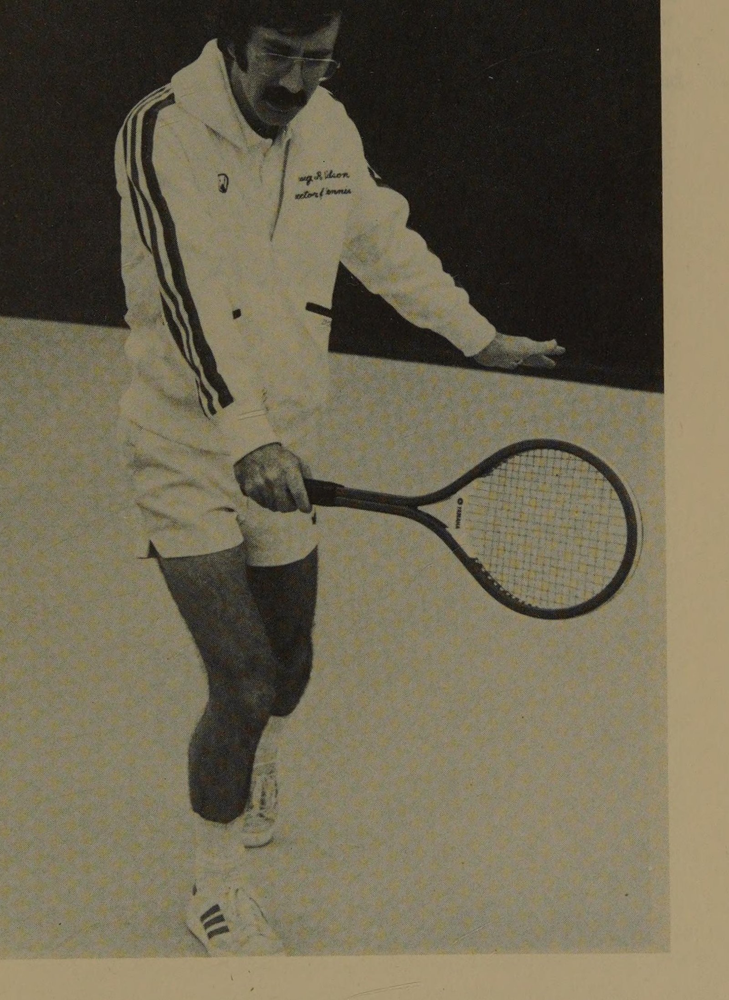
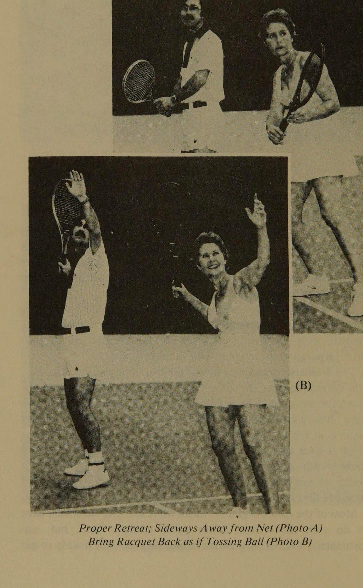
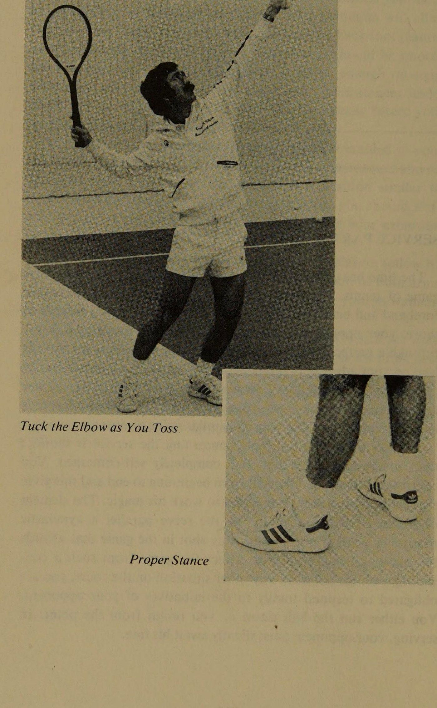
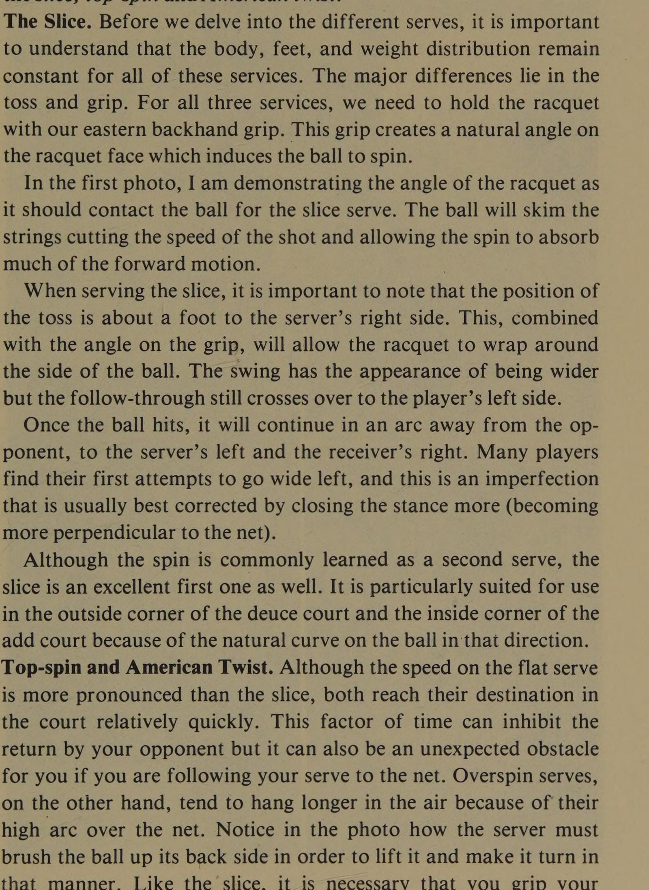

Triết Lý Lối Sống Toàn Diện & Đạt Đến Thể Trạng Tối Ưu Qua Tennis
The Philosophy of Total Life Style
Triết Lý Về Phong Cách Sống Tổng Thể
Sức khỏe toàn diện—Thông qua tennis.
NGƯỜI LO LẮNG QUÁ về sức khỏe hiếm khi giữ được lâu.
Lý do là vì lo lắng là lực lượng tiêu cực mạnh hơn mong muốn là lực lượng tích cực.
Đáng buồn thay, điều mong muốn nhất, theo một cách nào đó, thường trở nên không thể đạt được.
Ngược lại, những người giả vờ thờ ơ với sức khỏe của mình cũng thường thua cuộc nhưng vì những lý do khác nhau.
Sự bỏ rơi liều lĩnh cũng nguy hiểm như đòn đánh tâm lý.
Đâu đó giữa những người nhút nhát và ngu ngốc là những người năng động và tận tâm, chơi hết mình vì họ cảm thấy khỏe và những người mong muốn cảm thấy tốt hơn vì họ muốn trở thành tay vợt giỏi hơn.
Đối với nhóm này, sức khỏe nhất thiết phải là “toàn diện” vì nó là điều kiện tiên quyết để thành công trong mọi thử thách lớn trong cuộc đời.
Darwin đã đúng.
Điều duy nhất anh quên nói thêm là “phong cách” – mức độ sống vượt quá khả năng sinh tồn – cũng mang lại sự khỏe mạnh.
Cuốn sách này không phải là một câu chuyện cổ tích;
đó là câu chuyện đời thực về sự hợp nhất thành công đầu tiên của tennis thành tích cao và Sức khỏe tổng thể được lập trình có hệ thống ở Houston.
Chưa bao giờ có một môn thể thao không tiếp xúc nào khác lại có sức hấp dẫn toàn cầu như tennis.
Và người ta sẽ phải quay ngược lịch sử về thời Hy Lạp cổ đại để tìm thấy mức độ quan tâm tương đương đối với Sức khỏe toàn diện.
Việc sáp nhập, bắt đầu từ năm 1977, có lẽ là điều không thể tránh khỏi, nhưng hình thức của nó cần phải được sáng tạo ra.
—
HƯỚNG DẪN ĐẾN SỰ KHUYẾN CÁO TOÀN CẦU
Tennis, một đứa trẻ có đặc quyền, đã bị khuyết tật từ khi sinh ra bởi môi trường câu lạc bộ đồng quê cho rằng sức khỏe là một món quà di truyền hoặc là sự mua chuộc từ bác sĩ gia đình.
Bối cảnh tương tự đã tạo ra cả những mối đe dọa phù phiếm và đầy đe dọa đối với việc duy trì sức khỏe.
Tuy nhiên, bằng một cách kỳ diệu nào đó, nó đã nâng một trò chơi đơn thuần lên trạng thái ám ảnh.
Đối với những người bị chế giễu nhiều là "kẻ ăn bám tennis", tennis không phải là khúc dạo đầu cho cuộc sống; nó là cuộc sống. Thế hệ có phong cách sống đã mở rộng cơ sở quan tâm đến môn thể thao này đến mức các khuôn mẫu về câu lạc bộ đồng quê đã trở nên không phù hợp. Đồng thời, truyền hình đã giới thiệu với thế giới một thế hệ đã học cách chơi là công việc của họ và làm việc trong trò chơi ngay cả khi họ kiếm sống bên ngoài ngành giải trí. Đạo đức làm việc-thành công đang bị xói mòn không còn được coi là cuộc trò chuyện thú vị nữa.
Do đó, những lý do được đưa ra bởi những người đam mê ngầm muốn có sức khỏe tốt đã hướng tới sự sống còn hoặc vẻ đẹp bằng một cử chỉ tượng trưng trong quá trình xã hội hóa.
Bằng cách nào đó, các trường học cũng bỏ cuộc nếu đánh giá theo vị trí ưu tiên thấp của giáo dục thể chất dường như không phải là kết quả của việc rèn luyện thể chất cho nhiều người và bóng đá dành cho một số ít người tài năng.
Tất nhiên, thế hệ khán giả xem thể thao truyền hình đầu tiên.
Sức khỏe toàn diện thông qua những người ủng hộ tennis là những người kháng cự thành công những lựa chọn tiêu khiển vừa được liệt kê.
TẬP TRUNG PHÁT TRIỂN BẢN THÂN Khi nào sức khỏe tốt là đủ?
Phải chăng nó có nghĩa là một mùa đông không bị cảm lạnh hay có đủ sức khỏe để làm việc mà không kêu mệt mỏi, thoát khỏi bệnh tật nguy hiểm đến tính mạng, một quan điểm tích cực biểu thị sức khỏe tinh thần?
Có lẽ nó có nghĩa là tất cả những điều này và hơn thế nữa.
Tuy nhiên, sức khỏe hiệu suất cao cũng đòi hỏi phải nêu rõ một mục tiêu cụ thể.
Tôi chợt nghĩ đến một người đàn ông năm mươi tuổi có mục tiêu là duy trì khả năng nhảy xa của mình trên một chiếc Volkswagon.
Tương tự như vậy, một vận động viên nhào lộn già có tiêu chí về thể lực là trồng cây chuối bằng một tay tại phòng tập YMCA ít nhất một lần một tuần.
Đối với một người chạy bộ, nó có thể có nghĩa là chạy bộ 5 dặm mỗi ngày.
Tay vợt tennis có những mục tiêu tương tự, có thể khó khăn hoặc linh hoạt như anh ta mong muốn.
Một trận đấu đôi kéo dài một giờ mỗi tuần với những người ở độ tuổi của bạn là phù hợp với một số người, nhưng nó khó có thể thỏa mãn đối với kiểu Jimmy Connors.
May mắn thay, tennis có thể được điều chỉnh theo từng cá nhân đối với toàn bộ phạm vi tham vọng hoặc thể lực mà không mất đi khả năng xác định bằng những thuật ngữ cụ thể.
Khi chúng ta biết mục tiêu của mình là gì—chính xác—chúng ta có một tiêu chí phù hợp khả thi.
Bất cứ điều gì ít hơn là “chơi thôi”, không phải chương trình Sức khỏe toàn diện.
Sức khỏe toàn diện là một ý tưởng toàn diện.
Nó không phải là thứ chỉ phù hợp và đặc biệt đối với những người có vóc dáng cân đối hoặc sức khỏe sa sút.
Sức khỏe toàn diện là một quá trình lâu dài và vì lý do đó có thể áp dụng cho trẻ em cũng như người lớn.
Mặc dù mức độ liên quan cụ thể của một số phần trong Chương trình Sức khỏe Tổng thể là khác nhau đối với cả nam giới, phụ nữ và trẻ em, nhưng tác động của "cuộc sống như một trải nghiệm học tập" là rất quan trọng đối với tất cả những người có liên quan. Làm chủ bản thân thông qua học tập có thể và sẽ thay đổi lối sống của bất kỳ ai thực hiện nó một cách nghiêm túc. Điều này đúng cho dù chương trình được thực hiện song song với các chương trình giáo dục tiểu học trong trường học của chúng ta hay đối với những người cao tuổi thấy việc tiếp tục học tập suốt đời là điều bổ ích. Một số trải nghiệm giảng dạy bổ ích nhất của tôi là với những học sinh trên 50 tuổi đã thực sự tìm thấy thời kỳ phục hưng của
tinh thần thông qua quá trình học tennis.
Điều quan trọng cần nhớ về Sức khỏe Toàn diện là nó áp dụng cho tất cả mọi người.
Đây là một mô hình khái niệm phổ quát về sức khỏe, năng suất và sự phát triển bản thân.
TỐI THIỂU HÀNH VI TỰ HỦY Nhiều phần trong cuộc sống của chúng ta dường như thường có tác dụng ngược lại với những phần khác.
Tennis Sức khỏe Toàn diện—ý tưởng hướng tới sức khỏe toàn diện thông qua một trò chơi cụ thể—giảm thiểu hành vi tự hủy bỏ.
Một ví dụ phổ biến là một cá nhân hút thuốc vì anh ta cảm thấy nó làm dịu thần kinh của mình, hậu quả rõ ràng là cơ thể anh ta bị hủy hoại một cách có hệ thống và khả năng chơi tennis của anh ta ngày càng sa sút, lần này là do mức năng lượng suy giảm phức tạp do căng thẳng.
Tác hại của việc hút thuốc lá ai cũng biết nên sự thiếu hiểu biết không bao giờ có thể là một lý do chính đáng.
Mọi người chỉ đơn giản là đưa ra lựa chọn trong những trường hợp như thế này.
Khi một sự thỏa mãn duy nhất được phép phủ nhận những phần khác trong cuộc sống của chúng ta, kết quả có thể là một sự đánh đổi rất đáng buồn.
Đối với hầu hết mọi người, việc loại bỏ hành vi tự hủy bỏ là vấn đề thiết lập các ưu tiên và mục tiêu dài hạn hơn.
Luôn luôn dễ dàng hơn để thỏa hiệp để đạt được sự hài lòng ngay lập tức.
Ví dụ, cần có góc nhìn sâu rộng để thực sự hiểu ý tưởng về Sức khỏe toàn diện và ý nghĩa của nó đối với sự thống nhất giữa tâm trí và cơ thể của một người.
Nhận thức như vậy không chỉ nâng cao tiềm năng cá nhân mà còn có tác dụng rõ ràng ngay cả đối với tuổi thọ.
Thật không may, những điều này thường được coi là đương nhiên hoặc bị coi nhẹ như một sự nhượng bộ trước những áp lực cạnh tranh xã hội.
Điều thú vị là trong trò chơi tennis, người ta có thể quan sát thấy rất nhiều cách tiếp cận trò chơi khác nhau.
Chẳng hạn, cần phải có một định hướng mục tiêu khá rộng để học kỹ thuật chơi tennis phù hợp khi mới bắt đầu, khi áp lực chiến thắng của xã hội khiến người ta phải đánh bóng trong vạch bằng bất cứ giá nào.
Một cách tiếp cận lâu dài hơn và phát triển hơn đối với trò chơi sẽ yêu cầu chiến thắng lúc đầu chỉ là ưu tiên thứ yếu.
Tôi luôn nhấn mạnh quan điểm với học sinh của mình rằng việc thành thạo các kỹ năng phức tạp của trò chơi ban đầu đòi hỏi phải loại bỏ phần lớn các yếu tố bên ngoài liên quan đến điểm số như một định nghĩa về thành công và thất bại.
Cú giao bóng thắng có thể đến sau do việc hoàn thiện một hình thức giao bóng dễ dàng trong đó cơ thể được huấn luyện để không bao giờ cạnh tranh với chính nó.
Trò chơi sẽ luôn lớn hơn những người tham gia - người thầy vĩ đại luôn buộc chúng ta phải đối mặt với chính mình.
Để làm chủ
trò chơi là làm chủ bản thân thông qua một quá trình học tập có hệ thống.
Những người học hỏi sâu sắc nhất trên thế giới luôn là những người có khả năng xem xét những tác động lâu dài của hành động hiện tại của họ.
Thỉnh thoảng, vào mỗi cuối tuần, tay vợt sẽ luôn cảm thấy thất vọng khi cố gắng đánh bại người hàng xóm của mình mà không luyện tập.
Mặt khác, người tham gia chu đáo sẽ có đặc điểm hơn là chuẩn bị trước thực tế, bằng cách tiếp cận học tập có hệ thống hơn, và điều này, nói rộng ra, không chỉ áp dụng cho trò chơi tennis mà còn cho cả sức khỏe tốt.
Như mọi khi, phần thưởng là dành cho ý nghĩa không phổ biến.
MỘT SỰ HỢP LỰC SỐNG—ĐỜI SỐNG CÂN BẰNG và cuộc sống cân bằng là một trong đó có khả năng tự củng cố.
Đó là một sự khẳng định tích cực, một sự thay thế cho hành vi tự hủy bỏ.
Những người trọn vẹn nhất trên thế giới, chắc chắn là những người hạnh phúc nhất, không phải là những người có tầm nhìn đường hầm trong đó trọng tâm cuộc sống của họ chỉ ở một nơi.
Mỗi nhân cách cần được hòa nhập với vui chơi, làm việc, phát triển bản thân và hòa nhập xã hội theo cách tạo thành sự tổng hợp sống động cho tất cả các nhu cầu của chúng ta.
Total Health Tennis là một mô hình thu nhỏ của khái niệm này.
Trò chơi tennis là một phương tiện để chơi, vì nó thực sự là một trò chơi.
Bằng cách này, nó có thể được sử dụng một cách hiệu quả như một sự giải thoát khỏi những phần khác trong cuộc sống của chúng ta.
Tuy nhiên, trong bối cảnh đó cũng có cơ hội để phát triển bản thân.
Chúng tôi có thể tự làm việc và vẫn chơi.
Chúng ta có thể mang lại niềm vui cho người khác trong một môi trường xã hội dễ chịu và đầy kích thích.
Trò chơi cung cấp tất cả các thử thách và bản phát hành này, và Chương trình Sức khỏe Toàn diện nói riêng đóng vai trò là nơi tụ tập của những người có cùng sở thích.
Đó thực sự là một bài tập về sự đoàn kết trong quá trình phát triển bản thân.
Mặc dù phần lớn chương trình có thể được mổ xẻ và thực hiện một mình nhưng giá trị lâu dài của nó nằm trong nhóm.
Sẽ dễ dàng hơn nhiều để thừa nhận cam kết của nhóm trong đó việc ở cùng với những người khác có cùng khuynh hướng là một phần của quá trình.
Tương đối ít người có thể kỷ luật bản thân đủ để tập thể dục một cách có hệ thống và chạy một mình.
Ở các cấp độ cao hơn
về phát triển kỹ năng, trò chơi tennis không thể phát triển theo cách đó.
Không có sự thay thế cho việc huấn luyện.
Những lời phê bình mang tính xây dựng từ bên ngoài là điều tuyệt đối cần thiết.
Bạn không chỉ đơn giản tiếp thu sự phát triển kỹ năng thể chất.
Nó có được thông qua việc thử và sai, đồng thời phản hồi một cách không phòng thủ trước những lời khuyên có giá trị từ bên ngoài.
Thành công của Total Health Tennis nằm ở chỗ nó (1) tạo ra nghĩa vụ xã hội, (2) đặt sự phát triển bản thân thành một phương tiện giải trí và (3) dạy tennis một cách thành thạo.
Đó là một ý tưởng toàn diện, một mô hình thu nhỏ của cuộc sống, bản thân nó đã củng cố và bổ ích.
KẾT HỢP TỒN TẠI VÀ TRỞ THÀNH
quan điểm.
Nghĩa là, trạng thái “hiện hữu” (hiện tại) cũng là một trạng thái “trở thành”. Nó trình bày cuộc sống như một quá trình và như một sự thay đổi.
Trò chơi tennis, cũng như sức khỏe và cuộc sống nói chung, luôn chuyển động.
Có những thăng trầm, những ngày tốt và những ngày tồi tệ, và có những thời điểm tennis tụt dốc được cân bằng bởi những '*đỉnh cao'' tennis tuyệt vời và khó quên đó. Tất cả đều mang đến cho chúng ta cơ hội rèn luyện khả năng tự làm chủ bản thân theo một hình thức có thể quản lý được.
Nhiều điểm của trò chơi—tất cả các cảnh quay mới—đủ nhỏ để thấy phần đầu cũng như phần cuối.
Do đó, sự tự tin có thể được học ở quy mô nhỏ và sau đó được áp dụng vào những trò chơi lớn hơn trong cuộc sống.
Trò chơi có thể đi từ thuận lợi trở lại thất bại;
nó có thể đủ chậm để tập trung tâm trí nhưng cũng đủ phức tạp để vẫn đòi hỏi toàn bộ năng lượng của chúng ta.
Nó dạy quan điểm về kỷ luật lớn hơn nhiều của thế giới: tất cả cảm giác, tất cả cảm giác, tất cả sự tưởng tượng và mê hoặc trở thành bản chất của một trò chơi kết hợp giữa tinh thần và thể chất.
Trò chơi thưởng cho chúng ta khi cuộc sống của chúng ta được hòa nhập;
nó đối xử tệ với chúng ta khi họ không như vậy.
Shivas Irons, một anh hùng người Scotland trong chuyên luận triết học về trò chơi gôn của Michael Murphy, Golfin the Kingdom, đã nói: Trò chơi là một người thầy vĩ đại – không bao giờ đi chệch khỏi mục tiêu thiêng liêng của nó, luôn sẵn sàng dẫn dắt chúng ta tiến lên.
Trong tất cả, đó là một thế giới thu nhỏ 0, một sân khấu phù hợp cho vở kịch khám phá bản thân của chúng ta.
Và tôi nói
gửi tới tất cả các bạn, những người bạn tốt, rằng khi các bạn lớn lên trong lĩnh vực golf, các bạn sẽ thấy những điều mình học được ở đó ở mọi nơi khác.
Ân sủng đến từ kỷ luật như vậy, cảm giác có thêm trong tay, sức mạnh và sự hiểu biết thêm, tất cả những sức mạnh đặc biệt mà đôi khi bạn cảm thấy, bắt đầu đi vào cuộc sống của chúng ta.
'!
" Shivas, người được đại diện như " một linh hồn rộng lớn trên thế giới," kết luận tuyên bố của mình đêm đó như sau: Các bạn của tôi, kỷ luật tận tụy và ân sủng sẽ mang trí tuệ và sức mạnh của các bạn đến khắp mọi nơi, trong suốt cuộc đời các bạn, trong mọi công việc của các bạn nếu chúng là những việc làm tốt, trong tất cả tình yêu của các bạn nếu chúng là những tình yêu tốt. Các bạn sẽ rời khỏi các liên kết [sân tennis] với một ý nghĩa mới đối với cuộc sống, đó là điều chắc chắn nếu các bạn chơi trò chơi bằng cả trái tim mình.' Một trong những bài học quan trọng nhất mà tôi đã học được là
từ tennis cho thấy thực tế của '' hiện hữu '' thực sự là một hành động '' trở thành ''. Cuộc sống của chúng ta luôn trong một dòng chảy liên tục trong đó '' sự thật ''' được hiểu rõ nhất trong bối cảnh thay đổi.
Được giải thích như vậy, điều tốt nhất vẫn chưa phải là tham vọng phù hợp nhất đối với đối thủ cạnh tranh thực sự.
ĐIỀU CHỈNH NHIỆM VỤ TÂM-CƠ THỂ Các học giả cổ điển của Hy Lạp luôn khẳng định rằng có một mối quan hệ chặt chẽ giữa tâm trí và cơ thể.
Họ là một dân tộc tôn vinh con người.
Kiến trúc và điêu khắc của họ phản ánh những gì tốt đẹp nhất ở con người, một lý tưởng có tỷ lệ hoàn hảo.
Họ đã bắt đầu Thế vận hội Olympic, và tính logic trong học thuật của họ vẫn rất sâu sắc.
Tuy nhiên, thời gian trôi qua bằng cách nào đó đã cho phép chúng ta trôi đi khỏi nhận thức về sự thống nhất giữa tâm trí và cơ thể.
Ngày nay, mọi người thường bị rập khuôn là thuộc loại hình thể chất hoặc trí tuệ.
Hình ảnh được trình bày dưới dạng mệnh đề cái này hoặc cái kia, ngụ ý rằng sự thành công ở một thuộc tính là kết quả của sự vắng mặt của thuộc tính kia.
Trong hệ thống giáo dục của chúng ta, giáo dục thể chất hầu như chỉ được sử dụng như một khoảng thời gian nghỉ giải lao.
Ở cấp đại học, có một thành kiến rất rõ ràng chống lại “chủ nghĩa phản trí thức” trong thể thao và rèn luyện thể chất.
Triết lý của Total Health Tennis là trí thông minh không phải là thứ gì đó cao hơn sức khỏe.
Đúng hơn là sức khỏe tốt—
được thể hiện dưới dạng kỹ năng thể chất hiệu suất cao—là dấu hiệu của một người đàn ông có tư duy chọn sử dụng tất cả các nguồn lực của mình.
Người ta không sử dụng “đôi tay” của mình vì “cái đầu” của anh ta không đủ.
Trọng tâm của Tennis Sức khỏe Toàn diện là sự phát triển toàn diện con người, đầu và tay, trí óc và cơ thể, sự kết hợp của tất cả những gì chúng ta đang hoặc có khả năng trở thành.
Một trong những ví dụ điển hình nhất về sự phát triển trò chơi nội tâm thông qua các phương tiện thể chất là con mòng biển nổi tiếng nhất của Richard Bach, Jonathan Livingston Seagull, thông qua việc tìm kiếm sự hoàn hảo trong chuyến bay (một bài tập rèn luyện thể chất) vì qua đó anh đã học được điều quan trọng nhất về sự thống nhất thực sự trong bản chất của mình.
Anh ấy đã học cách loại bỏ thuyết nhị nguyên tâm trí và cơ thể.
Sau khi bắn "trực tiếp vào trung tâm của Bầy Ăn sáng, đạt tốc độ 212 dặm một giờ, mắt nhắm nghiền, trong một tiếng thét chói tai của gió và lông vũ," anh ấy nhận ra rằng mòng biển (và vì mục đích của chúng tôi, cả con người nữa) có thể thoát khỏi sự ngu dốt và cam chịu và thấy mình là những sinh vật xuất sắc, thông minh và khéo léo. Tất cả chúng ta đều có thể bắt chước nhận thức của Jonathan về đôi cánh và lông vũ của anh ấy cắt trong gió. Các bài tập yoga là một phương tiện mà một số người sử dụng
để nâng cao nhận thức về bản thân;
và mặc dù về bản chất, Total Health Tennis có phần ít mang tính thiền định hơn, nhưng chương trình tập luyện nhanh nhẹn, kết hợp với bài tập thể dục nhịp điệu chạy và phát triển kỹ năng chơi tennis cụ thể, mang đến cho người tham gia chu đáo nhận thức rất đầy đủ về bản thân bằng cách nhìn và cảm nhận “bằng con mắt của tâm trí”, một bài tập giãn cơ đơn giản có thể là một trải nghiệm thực sự giải phóng.
Ví dụ, nhận thức về các cơ liên quan có thể được mở rộng thậm chí đến hình ảnh các sợi cơ khi chúng căng ra, khởi đầu của nhận thức tổng thể.
ĐIỂM HIỆU SUẤT
Bị trục xuất khỏi xã hội hải âu như một kẻ dị giáo, Jona- than bị khiển trách bởi con hải âu lớn tuổi, người đã đưa ra những lựa chọn về lối sống thay thế mà tất cả chúng ta phải đối mặt:
.. một ngày nào đó, Jonathan Livingston Seagull, bạn sẽ học được rằng sự vô trách nhiệm sẽ không được đền đáp.
Cuộc sống là những điều chưa biết và không thể biết được, ngoại trừ việc chúng ta được đưa vào thế giới này để ăn, để sống càng lâu càng tốt.” Trong thời điểm dường như thường giáp ranh với suy thoái kinh tế, khi trường học và nhà máy đóng cửa vì thiếu nhiên liệu và ngân sách công dường như không bao giờ cân bằng, việc từ chức kiểu này không phải là hiếm.
Đó là một động lực tiêu cực, có tính tự giới hạn, và chúng ta cần nhiều câu trả lời như của Jonathan ngày ấy: Ai có trách nhiệm hơn một con mòng biển đi tìm và đi theo - một ý nghĩa, một mục đích cao cả hơn cho cuộc sống?
Trong một ngàn năm, chúng ta đã tranh giành đầu cá, nhưng giờ đây chúng ta có lý do để sống—để học hỏi, để khám phá, để được tự do.
* Trong bất kỳ trải nghiệm học tập nào, đặc biệt là những trải nghiệm liên quan đến phát triển kỹ năng thể chất, sự hoàn thiện bên trong bản thân phải là trung tâm của sự chú ý.
Đó không phải là hành động cạnh tranh với những người khác, những người có thể đã hoặc chưa bắt đầu chương trình trước bạn hoặc những người có thể trẻ hơn hoặc hiện khỏe hơn bạn.
Điều quan trọng là khái niệm học tập của người tham gia và do đó thái độ của họ đối với bản thân mình phải không mang tính phán xét.
Một trong những Cô gái Sức khỏe Toàn diện ban đầu của tôi là một phụ nữ trên năm mươi tuổi, sau hai tháng, cô chỉ có thể chạy bốn vòng quanh sân tennis.
Áp lực mà cô đặt lên bản thân ngày càng tăng khi những người khác trong lớp bắt đầu tiến bộ, và cô trở nên chán nản đến mức gần như bỏ dở chương trình.
Vào thời điểm đó, cô nhìn thẳng vào thất bại và quyết định từ bỏ cuộc thi.
Ngày hôm sau, cô ấy chạy chín vòng, rồi mười hai, rồi mười sáu và tiếp tục chạy hơn một dặm với sự tự do và giải phóng tinh thần đã truyền cảm hứng cho tất cả chúng tôi.
''Những người gác lại việc du lịch [số vòng bên ngoài] để đạt được sự hoàn hảo [quá trình tìm kiếm bên trong] sẽ đi đến bất cứ đâu, ngay lập tức.'' Gail Sheehy, trong cuốn sách từng đoạt giải thưởng của mình, Passages, nói thêm: Giờ đây, tôi đếm vận may của chính mình trong kho báu cuộc đời mở ra cho tôi bằng sự tin tưởng.
Họ sống trong tôi, vang vọng trong tôi, dạy tôi mỗi ngày rằng không có thời đại hay sự kiện nào có thể ngăn cản tinh thần con người vượt xa những ranh giới trước đây của nó.”
The Great Gull giải thích ý tưởng này về những hạn chế bên ngoài khi ông nói với Jonathan: Jonathan, bạn sẽ bắt đầu chạm tới thiên đường vào thời điểm bạn chạm vào tốc độ hoàn hảo.
Và đó không phải là bay một ngàn dặm một giờ, hay một triệu dặm, hay bay với tốc độ ánh sáng.
Bởi con số nào cũng có giới hạn, còn sự hoàn hảo thì không có giới hạn.
Tốc độ hoàn hảo, con trai tôi, đang ở đó.
® Khái niệm tự hiện thực hóa, tận dụng tối đa khả năng của bản thân, có thể được hình dung một cách hữu ích như một trung tâm giá trị cá nhân, và mặc dù nó có thể tiếp cận được nhưng nó cũng bị ẩn bởi lớp vỏ của phản ứng xã hội có điều kiện: Muốn thành công vì những lý do sai lầm, vì những lý do bên ngoài, vì những lý do và giá trị do người khác thiết lập và áp đặt bởi hệ thống xã hội chúng ta đang sống.
hạnh phúc của chính anh ta là mục đích đạo đức của cuộc đời anh ta, với thành tựu sản xuất là hoạt động cao quý nhất của anh ta, và lý trí là tuyệt đối duy nhất của anh ta.?
Tôi tin rằng điều này là đúng và tôi tin rằng tennis và sự phát triển sức khỏe góp phần hiện thực hóa triết lý này một cách rất thực tế.
KHÔNG CÓ SIÊU THỊ Y TẾ – CHƯA Vì lý do kinh tế và vì lý do chuyên môn hóa, các thể chế hiện đại kéo mọi người theo những hướng khác nhau.
Có rất nhiều phương tiện cho sức khỏe.
Ví dụ, có thể mua các thiết bị tập thể dục hoặc đi spa, nhưng không mang lại cơ hội vui chơi và giải trí.
Chắc chắn là chúng đạt được mục đích của mình, nhưng với tư cách là các thể chế, chúng vẫn còn hạn hẹp.
Sự định hướng của bác sĩ là một ví dụ khác.
Họ được đào tạo để chữa bệnh.
Mặc dù y tế dự phòng đang trở nên phổ biến hơn thông qua các phong trào như chương trình thể dục nhịp điệu của Kenneth Cooper và Phòng khám Phòng chống Bệnh tim của Reginald Cherry tại Woodland's ở Houston, những phong trào như vậy về cơ bản rất ít và xa.
ở giữa.
Tổ chức y tế nhất thiết phải tập trung sự chú ý của mình vào tính cấp thiết của việc chữa bệnh, trong khi việc ngăn ngừa bệnh tật và sức khỏe kém được xếp ở hàng sau, ngoại trừ những trường hợp rõ ràng như phát triển vắc xin và tiêm chủng.
Các nhà giáo dục thể chất trong hệ thống trường học của chúng ta nhấn mạnh việc tập thể dục nhưng hầu hết dường như chỉ quan tâm một cách thụ động đến thành tích cao.
Bằng nhiều cách, chính họ vẫn duy trì hình ảnh tầm thường của mình.
Giáo dục thể chất là một thông điệp rất quan trọng và nó phức tạp hơn nhiều so với cách nó được trình bày.
Huấn luyện và rèn luyện cơ thể của bạn không chỉ là một vài động tác nhảy thông thường.
''Bạn sẽ không tập bất kỳ bài tập nào trừ khi bạn yêu thích nó và phát hiện ra mình không phải là một con người trọn vẹn nếu không có nó.'''?
Một sự phân đôi phổ biến khác nằm ở hành động cạnh tranh và cách các huấn luyện viên vô tình áp đặt các tiêu chuẩn phán xét phóng đại việc thắng và thua như những thước đo tuyệt đối về thành công và thất bại.
Tất nhiên, cạnh tranh là một phần của lối sống của người Mỹ và cho dù trường hợp cụ thể là tennis cấp cơ sở hay bóng rổ cấp trung học, áp lực của các huấn luyện viên và phụ huynh hướng tới mục tiêu chiến thắng bằng mọi giá bằng cách nào đó đã bỏ qua mọi suy nghĩ về việc tiếp tục duy trì sức khỏe tâm thần.
Trong nhiều trường hợp, nó gây lo lắng và người ta chỉ cần nhìn xung quanh để thấy sản phẩm phụ của ảnh hưởng này.
Chúng ta cần thêm nhiều “trung tâm” giải trí và phát triển cá nhân hơn.
Chúng ta cần kết hợp nhiều hơn giữa sức khỏe và tập thể dục, và trường học của chúng ta có thể là một phương tiện hữu ích để theo dõi sự phát triển của nó.
Tôi có những ký ức buồn thảm về những lớp thể dục ở trường trung học, nơi chúng tôi đứng quanh sân chờ đến lượt đánh bóng, hoặc tập thể dục nhịp điệu nhanh trên bãi cỏ.
Lớp thể dục ở trường đại học còn tệ hơn.
Chúng tôi rời khỏi giường từ sáng sớm để không bỏ lỡ một lớp học bắt buộc, trong đó chúng tôi tập thư giãn toàn thân trong khi nằm trên sàn phòng tập thể dục lạnh lẽo.” Chúng ta cần suy nghĩ toàn diện hơn về mối quan hệ của tất cả những điều đó với sức khỏe tâm thần và cuối cùng là với năng suất của người trưởng thành.
Cần phải nhấn mạnh hơn vào quá trình thay vì mục tiêu, vì việc học ở mọi lứa tuổi cần được nhấn mạnh - khái niệm về cuộc sống như một trải nghiệm tích hợp tốt, luôn thay đổi và phát triển.
Và không bao giờ là quá muộn.
Il Động lực cá nhân KHI MỌI LỨA TUỔI GẶP NHAU TRÊN nền tảng chung của kỹ năng có được, động lực cá nhân có sự khác biệt rõ ràng.
Một môn thể thao không tiếp xúc như tennis (bằng cách tập trung, kiểu chơi cá vàng, vào các hành vi cá nhân thường được giấu kín) gây ra đầy đủ các cách giải thích mang tính phòng thủ nhằm nỗ lực trở thành một tiêu chí thuận tiện để phân loại tay vợt và động cơ chính của họ.
Đối với Gail Sheehy trong Passages, tuổi tác là yếu tố quyết định hàng đầu trong tất cả các trò chơi của cuộc đời.
Tuy nhiên, thực tế là sự phân biệt bản thân sẽ luôn xảy ra một cách tự nhiên trong môi trường tennis, bởi vì cả khả năng và địa vị xã hội dường như song song chính xác với vị trí của bạn trên đường đời.
Ngoại lệ thực sự duy nhất đối với quy tắc ngón tay cái này là trong bối cảnh cạnh tranh nghiêm trọng mà chỉ kết quả mới quyết định khả năng tiếp cận tương lai của tay vợt.
Luôn có những thần đồng nhí như Tracy Austin ngày nay, hay Chris Evert và Bjorn Borg của vài năm trước.
Khi đó, việc phân loại theo độ tuổi, mặc dù rõ ràng và thường thuận tiện, nhưng cuối cùng chỉ là phương tiện để giải quyết các cấp độ và loại hiệu suất khác nhau.
Khi một người trưởng thành trước sự mong đợi, một thành tích không bình thường đôi khi được cho là do tuổi trẻ.
Tuy nhiên, phẩm chất tương tự này có thể khiến người già không thể nắm bắt được.
Thực tế là cả hai đầu của sự liên tục đều bị phá vỡ chỉ dựa vào kỳ vọng về tuổi tác và phụ thuộc sâu sắc nhất vào những phẩm chất tinh thần ảnh hưởng đến việc một cá nhân sẵn sàng chịu đựng đau đớn hoặc nghịch cảnh như cái giá phải trả cho thành tựu.
Với tư cách là một chuyên gia giảng dạy, tôi nhận thức được năm phong cách tư duy chủ đạo trên sân.
Chúng được tham chiếu theo độ tuổi và được củng cố, nhưng còn vượt xa hơn nữa, như sẽ sớm được thấy rõ.
Các kiểu chữ là:
1. Bạn cùng chơi
2. Máy dò ranh giới
3. Kẻ tư lợi
4. Những chiến lược gia sinh tồn
5. Những người theo phong cách sống
Gần đây đã có một số cuốn sách được viết liên quan đến hành vi của con người vì nó áp dụng cho động cơ cá nhân và sự tự thực hiện.
Vùng sai lầm của bạn của Wayne Dyer'?
khám phá nhiều sai lầm khiến trò chơi tinh thần của chúng ta dễ bị lo lắng;
Gail Sheehy mô tả các giai đoạn chuyển tiếp trong cuộc sống trưởng thành trong Passages'*;
và Erica Jong khám phá sự giải phóng tình dục ở phụ nữ trong cuốn Làm thế nào để cứu lấy cuộc sống của chính bạn.'* Chúng đều là những cẩm nang tự lực dành cho những người trưởng thành đang cố gắng đương đầu thỏa đáng với sự thay đổi.
Thông thường, sự lo lắng và thất vọng được miêu tả là phát sinh khi có quá nhiều sự lâu dài được tìm kiếm hoặc mong đợi trong một môi trường thay đổi.
Đôi khi, người ta cho rằng cuộc sống về cơ bản là nằm ngoài tầm kiểm soát;
cách duy nhất để “tồn tại” là nổi trên dòng nước và không cố gắng ngăn chặn nó.
Total Health Tennis không chỉ là một chiếc bè phù hợp để sống sót qua dòng nước giận dữ.
Nếu sự tương tự về chiếc bè hoàn toàn đúng, thì hy vọng nó là một chiếc bè có động cơ mà người lái nó có khả năng kiểm soát đáng kể.
Những người học hỏi tự nhiên nhất trên thế giới luôn là trẻ em.
Tương tự, họ cũng là những người xử lý các khái niệm về sự thay đổi tốt nhất.
Các em có xu hướng thích nghi tốt nhờ chấp nhận môi trường xung quanh với lương tâm ít phán xét hơn hầu hết người lớn.
Họ thực sự như những bông hoa đang nở rộ, mỗi ngày mang đến một nhận thức mới về mùa xuân.
Đối với họ, điều đó gần như là bản năng.
Năng lượng của họ rất cao và hàng ngày họ nhìn thấy những thứ xung quanh mà trước đây họ không hề biết.
Trong mối quan hệ với những người trưởng thành, họ có xu hướng
để coi ít thứ hơn là đương nhiên.
Thái độ của họ giống như một người khám phá hơn, và chính vì lý do này mà Tennis Sức khỏe Toàn diện rất phù hợp với giới trẻ.
Về cơ bản, nó tương đương với những gì mà hầu hết trẻ em đều có xu hướng làm một cách tự nhiên.
Vì nó mang lại cho họ thêm nhận thức về cơ thể, đồng thời đưa họ vào một môi trường xã hội hữu ích, nên nhận thức độc đáo về sự thống nhất về tinh thần và thể chất.
Mặc dù trẻ em thường được cha mẹ đưa vào Chương trình Sức khỏe Toàn diện, nhưng một khi đã tham gia, sẽ không mất nhiều thời gian để thấy môi trường này tự nhiên như thế nào đối với chúng.
Hầu hết các bậc cha mẹ đều rất nỗ lực tìm kiếm môi trường xung quanh mang tính xây dựng cho con mình.
Đôi khi họ là nguyên mẫu của tầng lớp trung lưu đang sửa chữa những khuyết điểm trong tuổi thơ của chính họ.
Tuy nhiên, càng ngày họ càng đơn giản truyền lại cho thế hệ tiếp theo một trải nghiệm thỏa mãn cá nhân mà họ hy vọng có thể mang lại lợi ích cho con cái họ cũng như đối với họ.
Người lớn nhận thức được rằng “cú sốc tương lai” thực sự thường là sự căng thẳng ở mức độ thấp đe dọa sức khỏe ngày nay – kẻ thù bên trong.
Do đó, họ có động lực để lấy lại sức khỏe và tiếp tục đưa con mình vào các chương trình song song để đảm bảo rằng chúng không bao giờ bị mất sức khỏe do bất cẩn.
Trẻ em tham gia chương trình một cách tự nhiên và không có bất kỳ nhận thức bất thường nào về những thay đổi tiêu cực trong cuộc sống.
Cha mẹ của họ tham gia chương trình thường xuyên nhất để xây dựng lại, bởi vì họ đã trải qua dưới hình thức này hay hình thức khác sự tách biệt tinh thần (ý chí làm) khỏi cơ thể (sức mạnh thể chất cần thiết để đạt được mục tiêu).
Thật không may, lớn lên có thể là một quá trình mất đi sự nhạy cảm.
Nó có thể được biến thành một quá trình nâng cao nhận thức nhưng chỉ bằng sự suy nghĩ có chủ ý.
Tóm lại, chương trình Sức khỏe toàn diện dành cho trẻ em cũng mang tính phát triển và có cấu trúc giống như chương trình dành cho người lớn.
Động lực của bản thân những người tham gia là điều khá tự nhiên đối với trẻ em nhưng quyết định ban đầu thường là do cha mẹ đưa ra.
Tất cả các bậc cha mẹ dù có đủ can đảm để khắc phục tình trạng của mình hay không thì luôn mong muốn những điều tốt đẹp nhất cho con mình.
Động cơ chính xác đối với trẻ không mang tính triết lý sâu sắc;
đúng hơn, nó bắt nguồn từ hình thức tập thể dục và hoạt động thể chất lành mạnh rõ ràng nhất.
Chương trình khiến cơ thể họ chuyển động và nó kích thích

Hình 1: Mô hình hợp trực Thân - Tâm trong Quần Vợt Sức Khỏe Toàn Diện (Living Synergism)(Figure 1: Living Synergism: The Mind-Body Wholeness Model)
quá trình tư duy của họ.
Nó giúp họ biết đến công cụ của họ và họ có thể theo dõi sự phát triển của nó.
Họ háo hức ghi lại sự tiến bộ của mình trên biểu đồ và họ vui mừng một cách công khai khi học được một kỹ năng mới.
Thật hài lòng khi nhận ra rằng trẻ em thực sự có thể tiếp thu ý tưởng rằng cuộc sống là một trải nghiệm học tập không bao giờ kết thúc và luôn đầy thử thách.
Tennis Sức khỏe Toàn diện hướng trẻ em đi đúng hướng.
Nó dạy họ kỷ luật bản thân và từ đó tự tin bước vào tuổi trưởng thành.
VẤN ĐỀ VỀ GIỚI HẠN
Đã có rất nhiều nghiên cứu và sách được viết trong nhiều năm về sự phát triển của trẻ em, nhưng tương đối ít so với sự phát triển của người lớn.
Mãi cho đến cuốn sách Passages của Gail Sheehy, ý tưởng về sự tiến hóa liên tục của nhân cách người trưởng thành mới thực sự phổ biến.
Gần như thể việc trở thành một “người lớn” là mục tiêu cuối cùng của cuộc đời, và sự trưởng thành và thay đổi đó đã chấm dứt vào thời điểm đó - đâu đó dưới độ tuổi 25.
Hầu hết chúng tôi đều biết rõ hơn, nhưng vì lý do nào đó, chúng tôi chưa bao giờ ghép các câu đố lại với nhau một cách chặt chẽ như Gail Sheehy.
Về nhiều mặt, trẻ em nhìn về phía trước theo bản năng nhiều hơn người lớn.
Càng lớn tuổi, chúng ta dường như càng có nhiều khả năng hoài niệm, nhìn lại quá khứ và sống lại quá khứ thông qua ký ức, trái ngược với việc tạo ra những trải nghiệm mới khi chúng ta trải qua cuộc sống.
Cô ấy nói: Giống như thời thơ ấu [và với mục đích của chúng tôi, cả trong tennis nữa], mỗi bước không chỉ đưa ra những nhiệm vụ phát triển mới mà còn đòi hỏi phải từ bỏ các kỹ thuật đã hoạt động trước đó.
Với mỗi đoạn văn, một số phép thuật phải được loại bỏ, một số ảo tưởng ấp ủ về sự an toàn và cảm giác thoải mái quen thuộc về bản thân phải được loại bỏ, để cho phép chúng ta mở rộng hơn nữa sự khác biệt của riêng mình.
.
.
chúng ta phải sẵn sàng đổi ghế nếu muốn phát triển.
.
.
Trong quá trình chuyển từ giai đoạn này sang giai đoạn khác, chúng ta sẽ ở giữa hai chiếc ghế.
Không còn nghi ngờ gì nữa, nhưng đang phát triển.
Nếu tôi bị thuyết phục bởi một ý tưởng trong quá trình thu thập tất cả những câu chuyện cuộc đời trong cuốn sách, thì đó là: Thời kỳ khủng hoảng, gián đoạn hoặc thay đổi mang tính xây dựng, không chỉ có thể dự đoán được mà còn đáng mong đợi.
Chúng có nghĩa là tăng trưởng.'°
Những suy nghĩ đó không chỉ sâu sắc mà còn phù hợp nhất với sự phát triển liên quan đến rèn luyện thể chất và phát triển kỹ năng, mà còn phù hợp với thực tế là những người đến với chúng tôi thường làm điều đó vào những thời điểm trong đời, khi họ đang ở giai đoạn “giữa những chiếc ghế”. Họ làm điều đó như một phần của quá trình phát triển.
như một phương tiện để thiết lập một trạng thái cân bằng mới.
Nó là một phương tiện, không phải để tái khẳng định một điều gì đó đã hoạt động (một trạng thái), mà đúng hơn là để thử nghiệm thận trọng một trạng thái dừng mới - loại ổn định được thể hiện bằng một chiếc xe đạp đang chuyển động.
Trong khuôn khổ Chương trình Sức khỏe Toàn diện, độ tuổi từ 20 đến 30 là số người tham gia ít nhất ở mọi lứa tuổi.
Đã có sự tham gia đáng kể của cả trẻ em và người lớn từ ba mươi tuổi trở lên.
Gail Sheehy gọi thời kỳ này là “tuổi hai mươi cố gắng” và dường như nhãn hiệu đó có giá trị đáng kể.
Thanh niên trong độ tuổi này rất bận rộn, họ phải lựa chọn từ vô số lựa chọn thay thế cả về lối sống và
cam kết.
Uống rượu, chơi tình dục, các môn thể thao cạnh tranh, cưỡi ngựa, đi chơi trên đường phố, gia nhập quân đội, gia nhập Quân đoàn Hòa bình, tham gia các hội nữ sinh và hội nam sinh, hút ma túy, uống thuốc phiện, đeo ba lô qua Rajasthan, tìm kiếm tôn giáo, bạo loạn, chạy trốn, tìm kiếm ý thức hạnh phúc—mỗi trải nghiệm này đều thỏa mãn phần nào nhu cầu kiểm tra năng lực và tìm kiếm sự thật của chính mình.'® Đó là cách của những thanh niên từ hai mươi đến ba mươi tuổi khi họ lần đầu tiên dang rộng đôi cánh và phản ứng với những điều đó.
đủ loại kích thích.
Đây không phải là thời đại của kỷ luật hay sự cam kết có chủ ý.
Tất nhiên, một số cam kết được đưa ra do áp lực hoặc sự cần thiết của xã hội - lựa chọn nghề nghiệp, hôn nhân, v.v. Không phải tất cả đều bị phá vỡ, nhưng cũng không phải tất cả đều được giữ nguyên.
Đó là một thế giới vứt đi.
Nhìn chung, những người ở độ tuổi này quá bận rộn trong việc tìm hiểu các thông số của cuộc sống nên không thể cam kết nghiêm túc với Tennis Sức khỏe Toàn diện.
Hơn nữa, chúng còn đủ trẻ để cơ thể chúng thậm chí không có dấu hiệu sớm bị bỏ rơi.
Theo quy luật, họ chưa thừa cân vì họ vẫn có đủ phẩm chất năng động để bù đắp
mười nghìn chiếc bánh mì kẹp thịt và một khối khoai tây chiên.
Tuy nhiên, họ nhận thấy rằng cuộc sống của họ có xu hướng trở nên dễ đoán hơn và ít vận động hơn khi họ bước sang tuổi ba mươi.
Đó là lúc họ bắt đầu trải qua những thay đổi về thể chất cũng như tâm lý trong định hướng của mình.
Cả hai quá trình chuyển đổi này đều là động lực hướng tới hình thức phát triển bản thân và duy trì sức khỏe trong Tennis Sức khỏe Toàn diện và đây là nơi chúng tôi chọn chúng.
Tôi thường coi khoảng thời gian từ 20 đến 30 tuổi là giai đoạn “xác định ranh giới” của cuộc đời.
May mắn thay, thập kỷ điên cuồng đó trôi qua nhanh chóng, để lại thời gian hồi phục thích đáng cho những người trầm tư.
NHỮNG NGƯỜI TÌM KIẾM Những năm tháng ngắn ngủi từ ba mươi đến ba mươi lăm chỉ là lời mở đầu cho một không gian sâu sắc hơn từ ba mươi lăm đến bốn mươi lăm.
Ở tuổi ba mươi, nhiều người cảm thấy họ đã trưởng thành hơn những lựa chọn vội vàng thường được đưa ra ở tuổi đôi mươi.
Chúng có thể là những lựa chọn hoàn toàn phù hợp với giai đoạn đó, nhưng giờ đây chúng dường như không còn phù hợp nữa.
Chính vì lý do này mà chúng ta thấy xuất hiện những lựa chọn mới và những cam kết mới.
Gail Sheehy đã viết: Một phản ứng thông thường là sự xé nát cuộc đời mà chúng ta đã dành gần hết tuổi đôi mươi để ghép lại với nhau.
Nó có thể có nghĩa là phải đi theo con đường phụ để hướng tới một tầm nhìn mới hoặc biến giấc mơ “tranh cử tổng thống” thành một mục tiêu thực tế hơn.
Người độc thân cảm thấy bị thôi thúc phải tìm bạn đời.
Người phụ nữ trước đây hài lòng với việc ở nhà với con cái đã muốn dấn thân vào thế giới.
Cặp vợ chồng không có con xem xét lại việc sinh con.
Và hầu như tất cả những người đã lập gia đình, đặc biệt là những người đã lập gia đình bảy năm, đều cảm thấy bất mãn.”
Chương trình Sức khỏe Toàn diện dường như có sức hấp dẫn đặc biệt đối với lứa tuổi nhỏ 5 tuổi này.
Sự bồn chồn gắn liền với sự thôi thúc bên trong để tìm ra một định hướng mới cho bản thân chỉ tự nhiên dẫn một người đến những bài tập cường độ cao như Sức khỏe toàn diện.
Quá trình Sức khỏe toàn diện tăng cường tập trung vào phát triển và thay đổi vì người tham gia có thể chứng kiến sự tiến bộ của chính mình hàng ngày.
Chương trình và trò chơi tennis là những thay đổi thu nhỏ, và
chúng có kích thước và hình thức có thể quản lý được.
Việc tham gia Total Health Tennis là việc làm cá nhân và sự phát triển hoàn toàn mang tính cá nhân.
Đây là một trong những lý do chính khiến chương trình thu hút người lớn từ ba mươi đến bảy mươi.
Vì nhiều lý do khác nhau, không có gì lạ khi người lớn ở độ tuổi này muốn có bản sắc riêng và chỉ theo dõi sự tiến bộ và trưởng thành của chính họ.
Đó là sự bù đắp ở phía bên kia của tình trạng bất ổn trong công việc, những sở thích và nhu cầu khác nhau trong gia đình, và với vợ/chồng của một người, và đó là bằng chứng rõ ràng nhất rằng một người có thể cải thiện, có thể trở nên tốt hơn và vẫn có thể học hỏi.
Đó là một sự tái khẳng định.
NHÀ CHIẾN LƯỢC SỐNG SỐNG
Gail Sheehy chỉ ra rằng vào khoảng giữa tuổi ba mươi, chúng ta đến ngã ba đường nơi chúng ta nhận ra rằng mình đã đi được nửa chặng đường của cuộc đời.
Mặc dù trong hầu hết các trường hợp, chúng ta đang đạt đến đỉnh cao của mình, nhưng chúng ta thường có xu hướng bận tâm đến thực tế là bây giờ chúng ta có thể nhìn thấy sự kết thúc của tất cả.
Trong nhiều trường hợp, một cá nhân sẽ nhìn về phía trước vài năm hoặc sẽ hoài niệm nhìn về quá khứ.
Điều quan trọng là những nỗ lực mang tính xây dựng nhất trong cuộc đời mỗi người luôn hướng tới tính trực tiếp của hiện tại, rằng thực tế của “hiện hữu” thực chất là “trở thành”, và người ta nhận ra rằng mọi tiến bộ đều là tương đối và luôn vượt qua tuổi tác.
Sheehy đã viết trong cuốn sách của mình, Những đoạn văn: Sự mất mát của tuổi trẻ, sự suy yếu của sức mạnh thể chất mà chúng ta luôn coi là điều hiển nhiên, mục đích phai nhạt của những vai trò rập khuôn mà chúng ta đã xác định cho đến nay, tình thế tiến thoái lưỡng nan về mặt tinh thần khi không có câu trả lời tuyệt đối - bất kỳ hoặc tất cả những cú sốc này đều có thể khiến đoạn văn này mang tính chất khủng hoảng.
'* Những người nhận thức được cuộc khủng hoảng tính xác thực này là những người thường thực hiện một chương trình phát triển bản thân mạnh mẽ nhất, chẳng hạn như với trẻ em trong độ tuổi sẵn sàng bắt đầu chương trình cơ sở.
Đây là những người trực tiếp tham gia hoặc
những người tranh thủ cho con cái họ trải nghiệm mà cuộc khủng hoảng và bản năng bảo vệ của chính họ yêu cầu họ phải chuẩn bị.
Điều quan trọng cần lưu ý là chính nhận thức của cha mẹ sẽ bảo vệ và đưa trẻ vào một môi trường tích cực như Sức khỏe toàn diện.
Có nhiều trường hợp cha mẹ và con cái cùng tham gia chương trình dù không học cùng lớp.
Các chương trình dành cho trẻ em của Total Health luôn được tách riêng theo độ tuổi và khả năng, một số trẻ bắt đầu ngay từ khi mới sáu tuổi.
Tuy nhiên, vấn đề là có nhiều trường hợp việc tìm kiếm khả năng tự chủ cá nhân và sức khỏe suốt đời trở thành nỗ lực của cả gia đình và nó thường được đẩy nhanh bởi cuộc khủng hoảng thập kỷ thời hạn mà các bậc cha mẹ phải trải qua.
Sheehy tiếp tục viết: Đó là một bước đi đáng sợ trên cây cầu đi bộ nguy hiểm dẫn đến nửa sau của cuộc đời.
Chúng ta không thể mang theo mọi thứ bên mình trong cuộc hành trình vượt qua sự không chắc chắn này.
Trên đường đi, chúng ta phát hiện ra rằng chúng ta chỉ có một mình.
Chúng ta không còn phải xin phép nữa vì chúng ta là người mang lại sự an toàn cho chính mình.
Chúng ta phải học cách cho phép mình.
Chúng ta tình cờ phát hiện ra những khía cạnh nữ tính hoặc nam tính trong bản chất của chúng ta mà cho đến thời điểm này thường vẫn bị che đậy.
Có sự đau buồn phải được thực hiện bởi vì cái tôi cũ đang chết đi.
Bằng cách tiếp nhận những phần bị đè nén và thậm chí không mong muốn của mình, chúng ta chuẩn bị từ tận đáy lòng cho sự tái hòa nhập của một bản sắc chỉ là của chúng ta và của riêng chúng ta — chứ không phải một số hình thức nhân tạo nào đó được ghép lại với nhau để làm hài lòng nền văn hóa hoặc bạn tình của chúng ta.
Đó là một lối đi tối tăm lúc đầu.
Nhưng bằng cách tháo rời chính mình, chúng ta có thể nhìn thấy ánh sáng và tập hợp các bộ phận của mình lại để đổi mới.'?
—
DANH SÁCH CUỘC SỐNG
Tùy thuộc vào cách chúng ta đối phó với cuộc khủng hoảng về tính xác thực của chính mình trong thập kỷ trước, từ độ tuổi 35 đến 45, những năm cuối đời có thể là những năm đáng giá nhất hoặc là những năm chúng ta cam chịu nhất.
Điều quan trọng là một người phải tạo ra những lựa chọn mới cho bản thân mình với tư cách là một cá nhân trong suốt thập kỷ đó.
Nếu một người không làm như vậy và nếu anh ta không được chuẩn bị, thì sự cứng nhắc của anh ta có thể sẽ chuyển thành sự cam chịu.
Không có gì lạ khi những người thuộc loại này cảm thấy “cô đơn” khi bị trẻ em bỏ nhà ra đi hoặc do cơ hội việc làm.
bị bỏ lỡ vì sự hiện diện của năng lượng ngày càng tăng của tuổi trẻ.
Một người ở độ tuổi này rất dễ cảm thấy mình đang trượt dốc.
Total Health Tennis có nhiều người tham gia ở độ tuổi này sử dụng nó như một cách hiệu quả để chống lại không chỉ sự cam chịu của chính họ mà còn cả sự cam chịu của những người khác đối với họ.
Khi một người đối mặt với mốc năm mươi năm, cần có một sự ấm áp và êm dịu mới dành cho những người đã chuẩn bị cho mình một lối sống mới và riêng tư hơn - và không có gì cá nhân, riêng tư hoặc bổ ích hơn một bài tập phát triển bản thân mãnh liệt.
Sheehy tiếp tục viết: Bạn bè trở nên quan trọng hơn bao giờ hết, nhưng quyền riêng tư cũng vậy.
Vì nó thường được tuyên bố bởi những người đã qua tuổi trung niên nên phương châm của giai đoạn này có thể là ''Không còn chuyện nhảm nhí nữa.''"° Liên quan đến tầm quan trọng của bạn bè, Tennis Sức khỏe Toàn diện, và thực tế rằng đó là một trải nghiệm nhóm, gần như nghịch lý là lại mang đến sự hòa nhập xã hội với những người khác trong khi thực hiện điều đó với những người quan tâm đến sự riêng tư và các khía cạnh cá nhân của việc tự hiện thực hóa bản thân.
Quả thực đây là một môi trường độc đáo.
Đối với những người có khuynh hướng này, Chương trình Tennis Sức khỏe Toàn diện thực sự là một trải nghiệm vô nghĩa.
ĐIỀU GÌ HƠN HƠN CÂU LẠC BỘ QUỐC GIA
Lịch sử cho rằng trò chơi tennis trên sân cỏ là một môn thể thao thượng lưu trước đây được chơi trong trang phục áo len dệt kim và quần dài trên những bãi cỏ xanh tươi và tại các câu lạc bộ chỉ dành cho những người giàu có nhất.
Lịch sử này đương nhiên chỉ có một sức hấp dẫn lãng mạn nhất định, nhưng năm tháng đã thay đổi trò chơi đó và đưa nó đến với mọi người.
Tuy nhiên, điều đó không có nghĩa là không còn những câu lạc bộ đồng quê tốt và không còn những người sử dụng trò chơi quan trọng nhất cho doanh nghiệp xã hội và địa vị mà nó mang lại.
Có nhiều câu lạc bộ mà trọng tâm trong ngày của đàn ông hoặc phụ nữ hiện đại là bữa trưa, Bloody Mary, sau trận đấu tennis, và bản thân trò chơi chỉ là thứ yếu.
Nhu cầu xã hội ở nhiều câu lạc bộ đã khiến việc kinh doanh quần áo tennis trở thành ngành kiếm được hàng triệu đô la.
công bằng chẳng hạn.
Điều quan trọng là phải nhìn theo cách “đúng đắn” trên sân, và mặc dù không nên coi thường điều này, vì nó là một phần của kỷ luật và sự tự chăm sóc có liên quan đến nhau, đôi khi rất dễ đánh mất điểm thực sự của thành tích và đó chính là nội dung của Tennis Sức khỏe Toàn diện.
Đối với bối cảnh xã hội, sức khỏe tốt và phát triển kỹ năng thường chỉ là sản phẩm phụ ngẫu nhiên.
Đối với người tham gia Sức khỏe toàn diện, vẻ ngoài khỏe mạnh và chăm sóc bản thân chỉ là thứ yếu (nhưng vẫn quan trọng) đối với ý tưởng phát triển tổng thể.
Về bản chất, xã hội hóa vì lợi ích riêng của nó.
Nó không tìm cách từ bỏ vẻ đẹp và lịch sử của trò chơi, nhưng nó vượt qua sự kỳ thị và áp lực của bối cảnh xã hội thuần túy, và nó hướng tới sự phát triển cá nhân nhất của cá nhân, bởi chính cá nhân đó.
THỜI KỲ QUYẾT ĐỊNH— TRONG NÀO SỰ HẤP DẪN
LÀ MỘT LỖI PHỔ BIẾN NHƯ SỰ THỤ ĐỘNG
Công bằng mà nói thì chúng ta đang sống trong một thời đại của sự quyết đoán, thậm chí là tính cạnh tranh gay gắt, như đã được chứng kiến bởi những người như Jimmy Connors trong môn tennis.
Không có gì lạ khi chứng kiến triết lý “chiến thắng bằng mọi giá”, với đạo đức cũ về “cách bạn chơi trò chơi” đang lặng lẽ bị bỏ lại phía sau.
Việc đàn ông và phụ nữ phải quyết đoán để tồn tại ngày nay không gì khác hơn là một thực tế của cuộc sống.
Tuy nhiên, có một ranh giới mỏng manh giữa việc quyết đoán mang tính xây dựng và việc mất kiểm soát, và có nhiều trường hợp phản ứng quá mức và gây hấn quá mức cũng có nhiều sai sót như sự thụ động.
Điều này đặc biệt đúng đối với phụ nữ ngày nay trong nỗ lực nhận thức chính mình và sự nghiệp giải phóng phụ nữ.
Trong bối cảnh này, và điều này đúng cho cả nam và nữ, trò chơi tennis và chương trình Sức khỏe toàn diện mang đến cơ hội luyện tập nhằm tìm kiếm sự cân bằng trong ý tưởng này.
Ví dụ, hung hăng quá mức và phản ứng quá mức trong trò chơi tennis không phải là thứ tennis thông minh.
Không có lý do gì để giành điểm một cách khoa trương hơn mức cần thiết, vì sự lòe loẹt tự nó đã là một
trách nhiệm có thể đe dọa đến cơ hội thắng hoặc thua một điểm.
Tay vợt khôn ngoan trong trò chơi tinh thần sẽ luôn chơi hết mình để giành được điểm nhưng sẽ chỉ giành được điểm khi dòng chuyển động đòi hỏi.
Nếu đối thủ bị ngã sấp mặt, không có lý do gì để lái xe một trăm dặm một giờ cách đường biên một inch.
Sự thụ động cực độ cũng không hiệu quả trên sân tennis cũng như phản ứng thái quá.
Nỗi sợ thua, nỗi sợ thất bại, nỗi lo nghẹt thở - tất cả đều có thể khiến tay vợt “đẩy” bóng qua lưới.
Có một giới hạn đối với sự thành công của bất kỳ tay vợt nào khi nỗi sợ mắc lỗi ngăn cản và/hoặc cản trở nỗ lực đặt bóng mang tính xây dựng của anh ta.
Thực tế của cuộc sống trong trải nghiệm tennis là những tay vợt hạng nặng thường đánh bại những tay đẩy và những tay đẩy thường đánh bại những tay vợt hạng nặng — nhưng cả hai đều không bao giờ đánh bại được tay vợt có tỷ lệ phần trăm khôn ngoan, người có tài năng của cả hai nhưng lại thực hiện chúng đúng lúc.
Trong các phần tập luyện và chạy bộ của Chương trình Sức khỏe Tổng thể, những hành vi cực đoan này phổ biến nhất.
Đã nhiều lần tôi chứng kiến cái tôi nam nhi thất bại khi cố gắng chạy quá nhanh quá sớm hoặc tập quá nhiều bài tập với tạ quá nặng.
Tương tự như vậy, tôi thường thấy cái tôi tự giới hạn của bản thân - cái tôi của phụ nữ sẽ ngắn ngủi.
Tennis Sức khỏe Toàn diện là một phương tiện trong đó một người phải khái niệm hóa thực tế tiềm năng của chính họ.
Đó là một bài tập tìm kiếm thực tế và đối mặt với sự thật khách quan và có hệ thống về bản thân chúng ta.
Sức khỏe và hiệu suất không đến chỉ sau một đêm.
Thông qua các phương pháp có hệ thống, hiệu quả rèn luyện của sự lặp lại và kiên trì sẽ mang lại những kết quả làm thay đổi cuộc đời của bất kỳ ai nhìn thấu được nó.
Ý tưởng này giống như một cú swing tốt, nhưng mỗi cú swing tốt đều cần có sự thực hiện tiếp theo để giữ bóng trong cuộc.
PHỤC VỤ TUYỆT VỜI
Đối với nhiều người lớn, việc học thực sự là một vấn đề vì họ không thể chịu đựng được suy nghĩ “không biết”.
Tuy nhiên, trong bối cảnh Sức khỏe toàn diện, khắc phục điểm yếu, hành động “trở thành” được đặt trong bối cảnh trong đó các điểm mạnh khác có thể được nhấn mạnh ở mức độ cao nhất.
đồng thời những thiếu sót được sửa chữa.
Điều này làm cho môi trường học tập rất an toàn và luôn được củng cố.
Trong bối cảnh này, chúng ta một lần nữa bị đẩy vào thế giới thu nhỏ của cuộc sống, nơi kinh nghiệm của sân đấu là một người thầy tuyệt vời.
Có hai ngưỡng chính mà người tham gia Sức khỏe tổng thể phải đối mặt.
Chúng là những sự thật của cuộc sống mà tất cả chúng ta đều gặp phải nếu chúng ta chủ động trong cuộc sống của mình.
Những ngưỡng không thể tránh khỏi là (1) nỗi đau và (2) sự thất vọng.
Cả hai đều phải được xử lý và chúng phải được chinh phục.
Chẳng hạn, không dễ để bắt đầu phát triển một kỹ năng phức tạp như chơi tennis nếu bạn chưa từng chơi trong hai mươi năm, hoặc có lẽ chưa từng chơi trước đó.
Rốt cuộc, '*quả bóng máu'' đó đang di chuyển và nó đang bị đánh bay khỏi bạn.
Lưới đó cao 3 feet ở giữa nhưng ở bên cạnh là 3 feet 6 inch.
Những đường kẻ đó—kích thước của sân, 78 feet x 36 feet, chúng là một chướng ngại vật to lớn—nhưng mặt khác, chúng lại là một thách thức.
Trong bối cảnh của bất kỳ thử thách đáng giá nào, mỗi cá nhân đều phải học cách đối mặt với nỗi thất vọng khi là người mới bắt đầu.
Thực tế của cuộc sống là người mới bắt đầu phải bắt đầu.
Và trong tennis, sự duyên dáng của trò chơi, đặc biệt khi được đánh giá qua màn trình diễn trên truyền hình, có vẻ dễ dàng hơn nhiều so với thực tế.
Vì vậy, tay vợt mới bắt đầu bị thu hút bởi việc tìm thấy sẽ không thể tránh khỏi nỗi đau và thực tế của một quá trình sẽ không thể thay thế sự lúng túng của anh ta chỉ sau một đêm bằng sự duyên dáng của chuyên gia biểu diễn.
Đối với một người đã phớt lờ bất kỳ biện pháp duy trì sức khỏe có hệ thống nào của mình trong nhiều năm, hoặc một người có thể bị thừa cân, hoặc đối với một người chỉ đơn giản là rời xa hoạt động thể chất do công nghệ của thời đại chúng ta, thì quá trình “lấy lại vóc dáng” là một quá trình đau đớn.
Không có xung quanh nó.
Có vẻ như mọi thớ thịt và mọi cơ bắp trong cơ thể bạn đều đau nhức.
Cần phải có can đảm để kiên trì và quay trở lại vì một ý tưởng, ngay cả khi ý tưởng hấp dẫn đó là sức khỏe của chính bạn.
Vì thế, một chút đau đớn có thể đột nhiên trở nên đáng giá.
Có những người hút thuốc ho quanh sân tennis của tôi khi họ chạy vòng đầu tiên, tuy nhiên họ cũng chính là những người xinh đẹp mà mười sáu tuần sau đang chạy hai dặm một ngày với đôi mắt trong sáng và nhiều ps hơn)
năng lượng hơn mức họ đã có trong nhiều năm.
Đó là những người đã phải đối mặt với ngưỡng cửa của nỗi đau và sự thất vọng, và họ đối mặt với chúng không chỉ khi họ “đã lấy lại vóc dáng” mà còn trong quá trình phát triển kỹ năng điều khiển đường bay của quả bóng tennis khó nắm bắt đó.
Từ khóa để đối mặt với những trở ngại khó khăn này là lòng can đảm.
Cần có sự can đảm để tự mình nỗ lực và cần phải đối mặt với một chút thực tế để biết rằng sẽ không có ai làm điều đó cho bạn.
Tiêu đề cuốn sách gần đây nhất của Erica Jong khiến nó trở nên quan trọng nếu không vì lý do nào khác—Làm thế nào để cứu lấy mạng sống của chính bạn.
Chẳng phải điều thú vị là chúng ta đã từng đủ tự phụ để nghĩ rằng bất cứ ai nên hoặc sẽ làm nhiệm vụ đó cho chúng ta sao?
Một viên kẹo dẻo có thể lăn qua và nói: “Làm ơn cứu tôi với”. Một người dũng cảm sẽ bận rộn giải quyết vấn đề đến mức anh ta thậm chí sẽ không nghĩ đến lựa chọn thất bại thảm hại đó.
THỰC HÀNH TRONG CUỘC SỐNG ĐIỀU CHỈNH
Chúng ta đang sống trong một thời đại cạnh tranh, một thời đại phát triển dựa trên kết quả và hoàn thành công việc.
Những người có khả năng hoàn thành công việc tốt nhất cũng là những người biết và quan tâm đến bản thân họ.
Họ là những người điều chỉnh cuộc sống của mình một cách có hệ thống, và đó là lý do tại sao sức khỏe và ngoại hình tốt đều là một phần của cùng một trò chơi hiệu quả.
Vào những năm 1960, việc nuôi râu đã là mốt, như một phần của “đồng phục” của giới hippy.
Hippies được cho là thông minh, có trí tuệ và có khả năng tiếp cận một số sự thật đặc biệt mà bằng cách nào đó được che giấu khỏi phần còn lại của thế giới.
Mốt nhất thời đã trở thành “phản ứng ngược lại”. Bởi vì họ quan tâm nên họ tỏ ra không quan tâm chút nào.
Phong trào hiện đã kết thúc, thông điệp của nó đã được gửi đi.
Tương tự như vậy, chủ nghĩa duy vật công khai và quần áo lòe loẹt ở Phố Wall đã làm mất đi bất kỳ thông điệp xã hội ngụ ý nào.
Giờ đây, đa số xã hội đều đồng ý về giá trị của một cuộc sống lành mạnh và điều độ, không có nhiều cực đoan.
Những người làm việc hiệu quả nhất thường là những người coi trọng bản thân mình.
Họ có thể mặc một chiếc áo sơ mi vải nỉ và một chiếc quần Levis như một phần của việc tận hưởng một vùng hoang dã ở Colorado “trên cao”, nhưng câu chuyện ẩn giấu có thể là ở chỗ họ
cũng đã duy trì sức khỏe cơ thể của mình một cách rất có hệ thống trong suốt nhiều năm.
Bạn có thể nhận ra màu sắc trên khuôn mặt của một người và liệu đôi mắt của họ có tỏa sáng khi họ cười hay không.
Không khó để phát hiện ra người đang làm chủ bản thân.
Những người đang tìm kiếm cơ hội ngày nay nên ghi nhớ thực tế hiển nhiên này của cuộc sống, vì những người ở vị trí tuyển dụng hoặc khen thưởng chắc chắn sẽ không bỏ qua nó.
Một cá nhân thường không được giao trách nhiệm đối với người khác khi rõ ràng là người đó chưa nhận được trách nhiệm thích đáng đối với bản thân mình.
Một cá nhân đã nhận trách nhiệm về bản thân sẽ ý thức được cân nặng, chế độ ăn uống của mình và sẽ áp dụng phương pháp duy trì phòng ngừa để duy trì sức khỏe liên tục của mình.
Những người như vậy đúng là những nhà lãnh đạo của thời đại quyết đoán và cạnh tranh này, và họ sẽ dễ dàng được nhận ra.
Họ là những người phục hưng của chúng tôi.
ee iveoueeell onli % iede ee - STi Twine abe line wi Ato vor tie enh!
i ca : Reins me nih poles Sooo chi mana Wy tức là Waele atl TER Ats sk Paty Shae bess Hat, ge Se: lee a we hs ES ron et Bhd ai oc fade eine Sima epic sete ai a —apeiclil-d nccetsestel 9 HEU RSL itl if Be and ay Weer itera staf pate |
“phat pase et ia % —_s ; aie ;' a ut Sein ° AD | eee ea ahha tices kph tt
qe lt be es ae esl a a eer ieaa ee ae ae 7 ‘2 sieht ih 7 shea ;
tức là ee ‘ RY ah salu charge ne ne et ’ nf ha Ah ri Fs ity fe Ae sais} ‘ \ .
A a * H
PHẦN 2
Ứng Dụng Trực Quan Hóa Đỉnh Cao & Nghệ Thuật Vũ Đạo Quần Vợt
Visualization Application & Tennis Choreography
Ứng dụng trực quan hóa
a "hes a ’ ae ‘ sity ’ ' : 2 eee Shot 4th nt a ‘ Ls a a te ;
$ T zy (neh Coe anon Tee tees MP oor fsa ot Ve en — Ls ie im é ; i i i ' an Hom in ? ae : as Set a o a “yke i ro te galt, De iy ; F
iil Hình dung và Kỹ thuật tennis
HÌNH ẢNH LÀ MỘT
bản xem trước cá nhân tốt nhất và có thể.
Chủ đề của nó nhất thiết phải trừu tượng nhưng khi áp dụng nó lại trở thành hiện thực khách quan.
Có nhiều hình thức hình dung và chúng đã có mặt từ triết lý Hermetic của Ai Cập ba nghìn năm trước Chúa Kitô.
Một số có bản chất thiền định sâu sắc và thường gắn liền với tư tưởng tôn giáo phương Đông, trong khi một số khác có ứng dụng thực tế hơn vào cuộc sống hàng ngày.
Tuy nhiên, trong mọi trường hợp, chủ đề vẫn còn trừu tượng và đặc biệt mơ hồ đối với người phương Tây.
Lý do là tác động của khoa học và công nghệ đối với văn hóa của chúng ta, đặc biệt là cam kết của nó đối với các phương pháp giải quyết vấn đề đòi hỏi bằng chứng hợp lý và cụ thể.
Các phương pháp khoa học tạo ấn tượng là trái ngược với bất kỳ lĩnh vực nghiên cứu nào được cất giữ an toàn trong nơi tôn nghiêm của tâm trí con người như sự hình dung;
Tuy nhiên, người ta đang tìm ra những cách để tận dụng cả hai phong cách tư duy mạnh mẽ này.
Ý tưởng cho rằng một hình ảnh tinh thần cụ thể có thể mang lại phản ứng trong thế giới thực không phải là mới.
Điều duy nhất thực sự mới là quan điểm thuận lợi mà từ đó chúng ta tiếp cận một lĩnh vực nghiên cứu đã thu hút con người qua nhiều thời đại.
Các triết gia và linh mục trong lịch sử đã sử dụng hình dung như một công cụ để phát triển và tái sinh.
'' Bắt đầu với Hermes [Hermes Trismegistres của Ai Cập], một
triết học tâm linh ra đời dựa trên tính ưu việt của tâm trí, trái ngược với tính ưu việt của vật chất.''?'
Thậm chí từ rất lâu rồi, con người đã nhận thức được tác động của những hình ảnh lưu giữ trong tâm trí đối với vũ trụ vật chất của họ.
Chúng ta nhìn mọi thứ không phải như chúng vốn có mà là như chính chúng ta;
sau đó, chúng ta bẻ cong thực tế để phù hợp với nhận thức của chúng ta về nó.
HỢP NHẤT VỚI VŨ TRỤ CỦA CHÚNG TA
Thật khó để phủ nhận độ tin cậy của các phần trong cuốn sách Cú sốc tương lai của Alvin Toffler bởi vì tất cả chúng ta đều đang sống với thực tế về tốc độ công nghệ mà chính chúng ta đã đặt ra.
Về cơ bản, giờ đây có vẻ như công nghệ đang kiểm soát chúng ta, việc thoát khỏi chúng ta khó hơn bao giờ hết và việc đặt sự truyền sự sống ở trạng thái trung tính là điều vô cùng khó khăn - ngay cả khi chỉ trong một vài khoảnh khắc.
Chính vì lý do này mà nhiều người ngày nay đang tìm cách thiết lập lại sự thống nhất khỏi công nghệ xung quanh họ.
Họ muốn có một định hướng mới với “Mẹ” ban đầu. Ví dụ, ngày càng có nhiều người tìm kiếm vùng hoang dã ở Colorado, cho dù đó là để di chuyển trên lớp bột mềm trên ván trượt, khám phá vùng hoang dã bằng cách đeo ba lô hay cảm nhận dòng nước lạnh buốt trên núi bằng ca nô.
Con người hiện đại dường như đang cố gắng một cách trớ trêu để thiết lập lại cùng một kiểu thống nhất giữa vũ trụ vật chất và tinh thần mà "'sự man rợ cao quý'' trong văn hóa dân gian Mỹ đã tổ chức nhiều năm trước. Mặc những người sống trên nóc nhà thế giới; chúng ta là con trai của Cha Mặt Trời, và với tôn giáo của mình, chúng ta hàng ngày giúp cha mình đi ngang qua bầu trời. Chúng ta làm điều này không chỉ cho bản thân mình, mà cho cả thế giới. Nếu chúng ta ngừng thực hành tôn giáo của mình, trong mười năm nữa mặt trời sẽ không mọc nữa. Khi đó sẽ là đêm tối.
mãi mãi.”?
Câu trả lời của Carl Jung là đặt ra tình thế tiến thoái lưỡng nan cho một trí thức kém hài lòng hơn, người biết rằng: ''Kiến thức không làm giàu cho chúng ta, nó ngày càng loại bỏ chúng ta khỏi thế giới thần thoại nơi chúng ta đã từng ở nhà ngay từ khi sinh ra.''??
MỐI QUAN HỆ NGƯỢC CỦA TẦM NHÌN VỚI
Chúng ta không thể thoát khỏi việc sử dụng từ ngữ để suy nghĩ xem liệu chúng ta có đang chửi bới bản thân trên sân tennis, đang tranh luận về thành công hay thất bại của mình trong một cuộc họp ủy ban hay đang ngưỡng mộ những âm hưởng tình dục của một người bạn đời hấp dẫn trong khi lẽ ra chúng ta phải làm việc.
Chúng ta chúc mừng và tự mắng mình trong im lặng thông qua phương tiện ngôn ngữ.
Nó là một phần của chúng tôi;
nó mở rộng chúng tôi.
Tuy nhiên, về mặt lịch sử, việc sử dụng và phát triển khả năng hình dung có thể được ghi nhận là đã xảy ra trong mối quan hệ nghịch đảo với sự phát triển của ngôn ngữ, đặc biệt là hình thức viết của nó.
Ban đầu, như trong trường hợp chữ tượng hình, ngôn ngữ hoàn toàn dựa trên hình ảnh.
Khi các từ xuất hiện trừu tượng hơn các biểu tượng đơn giản, người ta vẫn cố gắng gợi lên những phản ứng tưởng tượng.
Thật không may, sự phát triển liên tục của chữ viết đã làm tăng đáng kể khoảng cách giữa những gì mắt người nhìn thấy và ý nghĩa của biểu tượng.
Cuối cùng, các diễn giả đã học được cách cố tình thiết lập khoảng cách giữa họ và trải nghiệm của chính họ.
Nhận thức của người khác cũng được thể hiện ra bên ngoài.
Vốn dĩ không có gì sai với điều này;
tuy nhiên, không thể phủ nhận tác động tiêu cực của nó đối với khả năng của con người trong việc liên hệ chặt chẽ với bản chất của thế giới của mình.
Việc sử dụng ngôn ngữ để phân loại một cách có hệ thống các trải nghiệm trong cuộc sống không nhất thiết phải phủ nhận những trải nghiệm chia sẻ cảm giác, nhưng nó có xu hướng làm giảm độ tin cậy của chúng.
Điều mà con người có học thức hiện nay phải đối mặt là sự cần thiết phải vượt qua khuynh hướng có điều kiện nhằm bao bọc cuộc sống bằng những nhãn hiệu và sự trừu tượng và phương tiện có vẻ phù hợp nhất cho mục đích này là “hình dung”. Việc tìm kiếm sự thống nhất với trải nghiệm này có thể diễn ra thông qua thiền định, tập luyện Yoga hoặc bất kỳ trải nghiệm nào mà người ta chọn để tập trung khả năng nhìn xa trông rộng của tâm trí mình.
Tất nhiên, lĩnh vực mục tiêu cụ thể của chúng tôi là sức khỏe của chính chúng tôi và sự phát triển kỹ năng cần thiết để thành thạo trò chơi tennis.
HÌNH ẢNH MÔI TRƯỜNG TENNIS
Nếu một người muốn chơi một trận tennis thực sự chu đáo và đầy cảm xúc, anh ta phải thiết lập nhận thức cá nhân về môi trường mà anh ta muốn kiểm soát.
Tất nhiên, anh ta phải nhận thức được cơ thể của mình theo cách rất riêng, nhưng anh ta cũng phải có kiến thức sâu sắc về các công cụ anh ta sử dụng cũng như sân đấu mà anh ta chơi.
Những hướng dẫn sau đây chỉ là suy nghĩ cá nhân của tác giả này về các loại mối quan hệ có thể được thiết lập trên sân thông qua phương tiện hình dung.
Cây vợt.
Nhiều người có mối quan hệ rất tách biệt với cây vợt tennis của họ.
Không hiếm khi thấy chúng bị ném vào cốp xe, bỏ lại trong gara ẩm ướt, thậm chí bị ném úp mặt xuống vì tức giận khi đang chơi game.
Đối với những người có suy nghĩ này, cây vợt của họ không hơn gì một công cụ có thể thay thế được.
Không có mối quan hệ cá nhân giữa họ và cây vợt của họ.
Tôi nỗ lực đặc biệt để thực sự hiểu rõ cây vợt tennis của mình vì tôi coi nó như một phần mở rộng của bản thân mình.
Khi chơi trò chơi, điều quan trọng là phải cảm nhận được cảm giác bóng trên dây.
Điều này phải tiến hành thông qua cú đánh vào vợt, đến tay cầm và cuối cùng là vào tay bạn.
Tôi thấy mình rất thường xuyên cầm vợt ở nhà trong khi nói chuyện hoàn toàn không liên quan.
Tôi có thể cầm vợt một cách vô thức, và tôi cảm thấy như thể tôi thực sự hiểu cây vợt như một phần của chính mình, như một phần mở rộng thực sự của cánh tay tôi.
Một chú thích khác liên quan đến cây vợt của tôi liên quan đến thực tế là tôi thích xâu chuỗi cây vợt của mình.
Đương nhiên, hầu hết mọi người trên thế giới đều không có khả năng cũng như thiết bị để làm điều này và tôi đề cập đến nó chỉ vì đó là một phương tiện khác để cá nhân tôi cảm thấy đồng nhất với cây vợt của mình.
Có điều gì đó thú vị về cảm giác ruột không bị căng và biết rằng tấm vải không bị xẹp của nó được đặt ở đó dưới sự chỉ đạo của chính tôi.
Có một số nghệ thuật đáng kể trong việc xâu chuỗi một cây vợt tennis, và nó mang lại cho tôi một niềm vui đặc biệt khi tôi chuẩn bị một cây vợt để sử dụng cho riêng mình.
Quả bóng.
Một người không cần phải đi loanh quanh trong trạng thái bàng hoàng
hãy tận hưởng một số hiểu biết cá nhân góp phần mang lại cảm giác đồng nhất với trò chơi.
Đối với quả bóng, như đã lưu ý trước đây về cây vợt, việc làm quen chi tiết sẽ rất hữu ích.
Ví dụ, một quả bóng tennis có các đường nối, và đối với tay vợt tinh ý, chính những đường nối này sẽ thu hút sự chú ý của anh ta khi quả bóng đến gần.
Lời khuyên tuyệt vời của Tim Gallwey trong cuốn sách của ông, Trò chơi nội tâm của môn tennis, là hãy “quan sát các đường nối của quả bóng”. Tôi chắc chắn cảm thấy rằng đây là một ý tưởng hay và tôi khuyên mọi học viên chu đáo nên nhận thức rõ hình dáng và cảm giác của các đường nối.
Tất nhiên, cường độ tập trung là điều đang bị đe dọa.
Hơn nữa, quả bóng tennis có kết cấu nhất định sẽ thay đổi khi sử dụng và bạn nên ý thức được chính xác lượng lông tơ còn lại hoặc không còn trên quả bóng mà bạn sắp sử dụng.
Tốc độ và độ nảy của nó thay đổi tương ứng.
Nếu bạn đang sử dụng những quả bóng mới, tôi khuyên bạn nên dừng lại để thưởng thức việc mở lon mới, nghe thấy áp lực của lon khi nó được giải phóng và phát hiện ra mùi độc đáo mang lại ký ức tuổi thơ về một trò chơi không bao giờ tươi hơn hoặc mới hơn trong những dịp hiếm hoi khi có thể mua được những quả bóng mới.
Sân đấu.
Sân đấu, được mô tả bằng các đường 78 x 36 feet, có một đặc điểm ảo tưởng đã thách thức và thách thức ngay cả những gì tốt nhất.
Những phép đo đó luôn ở đó và chúng vẫn giữ nguyên cho đến khi trò chơi được chơi.
Một chuyến dạo chơi lúc chạng vạng trên sân tennis mà không có ai xung quanh có thể là một trải nghiệm đầy hoài niệm đối với tay vợt nhạy cảm, người luôn đồng cảm với môi trường xung quanh.
Có điều gì đó đặc biệt lôi cuốn ở những chiều không gian đó (bất chấp tính trung lập khách quan rõ ràng của chúng) và điều quan trọng là phải cảm thấy gần gũi với chúng.
Bạn nên thiết lập một mối tình với thử thách mà họ đại diện.
Thử thách đó là thước đo tầm với của con người, không khác gì quãng đường bốn phút kỳ diệu dành cho người chạy bộ.
Điều quan trọng là phải cảm thấy “hòa hợp” với môi trường của sân và hoàn toàn quen thuộc với tất cả các bộ phận của sân, bao gồm cả chiều cao của lưới và kết cấu bề mặt của nó.
Đó là một trải nghiệm thú vị khi ngắm nhìn, lặng lẽ và đơn độc như khi đi dạo lúc chạng vạng vừa nêu, độ cao hùng vĩ của tấm lưới nhìn từ góc nhìn của cuối ngày, bình minh sớm khi mặt trời mọc, với làn gió nhẹ thổi qua.
không khí.
Việc đoán trước những thử thách trong ngày có thể khiến góc nhìn này trở thành một trải nghiệm chưa từng có đối với những người theo chủ nghĩa thuần túy đầy cảm hứng của trò chơi.
Những dòng đó và tất cả các thách thức tổng hợp của sân đấu sẽ vẫn là một tiêu chuẩn lạnh lùng và kiên cường.
Đó là biến số của con người thay đổi.
Bản thân con người cung cấp tất cả những thăng trầm của vở kịch tennis, giới hạn cá nhân của anh ta cuối cùng trở thành giới hạn của trò chơi.
HÌNH ẢNH KỸ THUẬT TENNIS CỤ THỂ
Vị trí sẵn sàng.
Vị trí sẵn sàng đúng như tên gọi của nó.
Đó là tư thế của cơ thể ở trạng thái sẵn sàng chuyển động tối đa.
Chuyển động là bản chất của tennis vì thực tế rõ ràng nhất là ai đó đang đánh bóng ra xa bạn vì sự suy yếu của bạn.
Để giải quyết vấn đề này người ta phải nắm vững khái niệm và thực tế của sự thích ứng thông qua chuyển động.
Điểm tennis là một hành động chuẩn bị thường xuyên và trọng tâm của việc này là vị trí mà người ta cầm vợt giữa mỗi lần đánh.
Vị trí này thường được gọi là "tư thế sẵn sàng".' Vị trí sẵn sàng có được bằng cách quay mặt về phía lưới và chuẩn bị tinh thần cho hành động có thể xảy ra ở hai bên cơ thể. Vợt phải được đặt ở cổ họng bằng tay trái (giả sử một người thuận tay phải) và cần giữ nhẹ ở đó. Những người nắm vợt hoặc nắm lấy cổ họng luôn điên cuồng hơn trong trải nghiệm chơi tennis so với những người cầm vợt nhẹ nhàng. Điều này cũng đúng với tay phải.
Người ta không bao giờ nên để áp lực thực hiện ảnh hưởng đến độ cứng của cơ thể.
Không cần thiết phải cầm vợt thật chặt trừ khi bóng tiếp xúc với vợt.
Điều quan trọng cần nhớ là trò chơi là một trải nghiệm về tính trôi chảy và điều này không bao giờ có thể đạt được nếu cơ bắp ở cánh tay phải hoặc tay trái cứng.
gió—một cách tự nhiên.
Trải nghiệm tennis đầy nghệ thuật không bao giờ có thể là một màn trình diễn dễ vỡ, phân đoạn.
Bởi vì việc sẵn sàng đòi hỏi sự sẵn sàng không chỉ để vuốt ve mà còn để di chuyển, nên có những kỹ thuật hình dung cụ thể cũng hữu ích cho chân và bàn chân của một người.
Ví dụ, điều quan trọng là không được cắm rễ xuống sân với trọng lượng cơ thể dồn lên gót chân.
Thân của bạn phải hơi cong về phía trước ở thắt lưng và trọng lượng phân bổ vào mặt trong của bàn chân khi đầu gối cong.
Tôi thấy đặc biệt có lợi khi lắc lư nhẹ từ bên này sang bên kia trong khi chờ đợi điểm bắt đầu ban đầu để giữ cho trọng lượng cơ thể không bị cô lập.
Sự lắc lư của chuyển động nhẹ nhàng và sự chạm nhẹ vào cổ vợt bằng tay trái giúp tôi chuẩn bị cho chuyển động mượt mà sắp tới.
Tôi hòa nhập với chuyển động của quả bóng khi nó đến gần, và tôi không đợi cho đến khi nó nảy lên rồi mới điên cuồng đuổi theo nó.
Luôn có một dòng chảy hiện diện trong mỗi cuộc giao lưu tennis và tôi luôn cố gắng trở thành một phần của phong trào đẹp đẽ nhất đó.
Đó là một hành động kiểm soát và phần lớn sự thành công của một người trong việc hòa hợp với nó nằm ở việc hình dung đầy đủ khái niệm thực sự về “sẵn sàng”. The Grip.
Cách một người cầm vợt tennis là vô cùng quan trọng.
Tuy nhiên, đó là một trải nghiệm phải được “cảm nhận” bởi vì điểm tennis đòi hỏi phải đánh một số cú đánh liên tiếp.
Tất nhiên, điều này trái ngược với trải nghiệm được phân đoạn nhiều hơn như chơi gôn, nơi một người có thể cân nhắc lâu hơn cho mỗi cú đánh cụ thể.
Một khi bóng đã vào cuộc, không bao giờ có thời gian để nhìn xuống và kiểm tra cách cầm bóng của mình.
Mặt khác, tay vợt gôn có thể bận tâm đến mức bị ám ảnh về cách cầm gậy của mình.
Tay vợt tennis phải cảm nhận được cách cầm vợt của mình, và anh ta có thể làm điều này một cách sống động đến mức nào sẽ phụ thuộc rất nhiều vào khả năng hình dung hình dạng của cách cầm vợt trong tay anh ta.
Cách cầm vợt phù hợp là vô cùng quan trọng để đánh bóng hiệu quả vì chúng trực tiếp xác định góc của mặt vợt khi tiếp xúc với bóng.
Hơn nữa, khi được thực hiện đúng cách, chúng có tác dụng điều chỉnh cổ tay ở vị trí hỗ trợ phía sau vợt.
Độ cứng của cổ tay này cho phép tay vợt trải nghiệm cảm giác thống nhất giữa vợt và cơ thể.
Cách cầm vợt thuận tay kiểu đông thường đạt được nhất bằng cách bắt tay với vợt.
Quy trình chung này sẽ căn chỉnh chữ ''V''
trong bàn tay của bạn, giữa ngón cái và ngón trỏ, phía trên cạnh xiên của vợt ở phía bên phải (đối với tay vợt thuận tay phải).
Bạn có thể có nhận thức rất cụ thể không chỉ về chữ ''V'' trong tay bạn khi nó nằm trên góc xiên đó, mà còn về các nếp gấp trên tay bạn và cách chúng khớp với vị trí trên tay cầm của bạn. Ngoài ra, điều quan trọng là ngón tay đầu tiên hơi tách ra khỏi các ngón tay khác của bàn tay để giúp bạn cầm vợt rộng hơn và do đó kiểm soát vợt và quá trình vuốt ve tốt hơn.
Hiệu ứng “tát” cổ tay vào bóng.
Cách cầm vợt trái tay phía đông đối với tay vợt thuận tay phải chỉ là một phần tư vòng quay về phía mép trái của vợt.
Lần rẽ này không phải là một trở ngại tốn nhiều thời gian như nhiều người mới tập nghĩ, bởi vì đó là một quá trình luôn được thực hiện cùng lúc với việc tay vợt làm một việc khác.
Chỉ mất một phần giây và quy trình chính xác yêu cầu sự thay đổi nhỏ về độ bám này được thực hiện bằng cách xoay cổ vợt bằng tay trái.
chưa nắm vững vị trí sẵn sàng thường sẽ cố gắng lật vợt hết vòng khi thay đổi cách cầm, và chính vì lý do này mà nó sẽ đi quá xa và hoàn toàn không có cách cầm thích hợp.
Hành động thay đổi cách cầm vợt luôn được thực hiện hiệu quả nhất bằng cách xoay vợt nhẹ nhàng bằng các ngón tay của bàn tay trái và thực hiện chỉ một phần tư lượt—đủ để giữ góc của mặt vợt vuông góc với mặt đất khi tiếp bóng và đủ để đặt cổ tay chắc chắn sau cú đánh.
vô-lê (volley) trong tennis là tên của cú đánh được tiếp xúc trong không khí trước khi bóng nảy lên, và đây là cú đánh tennis đầu tiên tôi dạy học sinh của mình.
Đây là nơi bắt đầu hình dung.
Đây là một môi trường được kiểm soát chặt chẽ, không chỉ để học sinh bắt đầu trải nghiệm sự phối hợp chuyển động của tay và chân mà còn là nơi tuyệt vời để các em bắt đầu nhận thức về đường bay của quả bóng khi nó đến gần.
Quả bóng là một ngọn giáo, giống như một vệt hơi, bay qua không gian và nó chiếm một mặt phẳng cụ thể.
(tức là chiều cao và cung) khi nó đến gần.
vận tốc của nó khi nó xuyên qua không gian về phía cây vợt của bạn.
Tất nhiên, công việc của tay vợt luôn là hướng tâm vợt của mình vào cùng mặt phẳng này.
Đây là lý do tại sao việc nhận dạng chính xác mặt phẳng lại cực kỳ quan trọng.
Khi chuyền bóng, việc đến gần lưới luôn có lợi cho người đó.
Vị trí tốt nhất là khoảng 1/3 quãng đường từ lưới đến vạch giao bóng.
Xa hơn thời điểm này, người ta sẽ phải đối mặt với trách nhiệm phải “bóng vô lê”, và đây là một đề xuất rất khó đối với ngay cả những tay vợt giỏi nhất.
Mục tiêu của chúng ta luôn là di chuyển quả bóng theo cách “vô lê xuống”. Có một số sự thật trong cuộc sống cần phải giải quyết khi chạm trán một quả bóng ở khoảng cách ngắn.
Ở rất gần lưới nên người ta chỉ có khoảng một nửa thời gian để phản ứng.
Vì lý do này mà cú vung bóng thực sự của một người phải tương đối ngắn và chuyển động nhanh của cơ thể để tiếp cận bóng phải hiệu quả nhất có thể.
Cú xoay người ngắn này được nhiều người gọi là chặn bóng hoặc đấm bóng.
Về bản chất, nó có nghĩa là không có động tác backswing và không có cú đánh tiếp theo.
Về phần động tác bằng chân, việc di chuyển hiệu quả đòi hỏi phải luôn bước qua.
Thực tế duy nhất này sẽ cho phép tay vợt bao phủ gần như gấp đôi diện tích mặt đất và đặc biệt quan trọng trong một cú đánh mà tay vợt buộc phải bao phủ cùng một chiều rộng của sân nhưng trong khoảng một nửa thời gian.
Cú vô lê thuận tay.
Cú vô lê thuận tay thường là cú đánh tennis đầu tiên được học bởi những học viên mới bắt đầu.
Nó đòi hỏi ngay từ đầu họ phải phối hợp tay và chân.
Tôi nhẹ nhàng đưa bóng theo một vòng cung có thể đoán trước được để có thể xác định rõ ràng và khuyến khích họ trả bóng lại cho tôi một cách nhẹ nhàng và nhẹ nhàng không nhanh hơn khi tôi đánh nó về phía họ.
Tôi khuyến khích các em quan sát các đường nối của quả bóng khi nó đến gần và kích hoạt tất cả các giác quan để các em “cảm nhận” được toàn bộ cảm giác của quả bóng trên dây.
Chạm bóng nhẹ nhàng, cảm nhận và hướng dẫn cơ thể vào tư thế nằm ngang là động lực của trải nghiệm học tập đầu tiên này.
Qua con mắt của tâm trí, tay vợt phải sẵn sàng với hình ảnh được định hình trước về hành động sắp diễn ra, trọng lượng của anh ta nhẹ nhàng chuyển từ bên này sang bên kia trong tư thế sẵn sàng, trong khi bóng đến gần.
Tầm nhìn của anh ta phải tập trung vào đường bay của quả bóng về phía anh ta, và phải cảm nhận được sự thống nhất giữa chân trái và cánh tay phải chặn bóng: Anh ta phải biết chuyển động của mình như một trải nghiệm tổng hợp hoàn toàn, một trải nghiệm trả bóng nhẹ nhàng, đồng thời lướt đi trong chuyển động không gián đoạn để sẵn sàng cho cú đánh tiếp theo.
Cú vô lê trái tay.
Các kỹ thuật cụ thể cho cú vô lê thuận tay và trái tay về cơ bản là giống nhau ở cả hai bên ngoại trừ động tác bằng chân thay đổi ngược lại và tay vợt hướng vợt trở lại vị trí bằng tay trái đặt trên cổ vợt.
Việc thực hiện cú vô lê trái tay yêu cầu chân phải bắt chéo khi bóng đến gần và tay trái dẫn vợt về phía sau, sau đó nhẹ nhàng buông ra khi vợt lao về phía trước về phía gặp với đường bay của bóng.
Trong cả cú vô lê thuận tay và trái tay, mặt vợt về cơ bản phải hướng về phía lưới khi hoàn thành cú đánh, và đây là hình ảnh mà tôi cố gắng truyền đạt sớm cho học sinh của mình.
Các bài tập vô-lê (volley) song song truyền đạt thông điệp này rất nhanh đến ngay cả những học viên mới bắt đầu, vì nó khiến họ nhận ra chính xác mức độ di chuyển và chuẩn bị cần thiết để duy trì tính liên tục của một điểm tennis.
Các bài tập song song này bắt đầu với tư thế sẵn sàng, lắc lư qua lại và chờ đợi;
sau đó, khi bóng đến gần, cho chân trái tạt ngang, vợt về phía sau rồi chặn bóng;
quay trở lại trung tâm, duy trì nhịp điệu liên tục đó, thay đổi cách cầm vợt, hướng vợt về phía sau, bước bằng chân phải, chặn bóng;
quay trở lại trung tâm và theo dòng chảy, thay đổi cách cầm, xoay, bước, tiếp xúc với bóng, quay trở lại giữa, v.v.
Đây là một trải nghiệm không ngừng chuyển động, luôn chuyển động trong loại hình nghệ thuật tennis và điều này có thể bắt đầu ngay từ buổi học đầu tiên của tay vợt.
Đó là một trải nghiệm về sự duyên dáng của chuyển động liên tục và là bài học về tầm quan trọng của việc duy trì tính liên tục giữa hình ảnh tinh thần và hành động.
Vô-lê (Volley) cao và vô-lê (volley) thấp.
Trò chơi mời gọi vô số phản ứng của tay vợt và chính vì lý do này mà tay vợt phải có khả năng xử lý mọi độ cao và cấp độ của quả bóng khi nó đến gần.
Trải nghiệm tennis, theo định nghĩa, luôn thay đổi và
luôn chuyển động.
Việc rèn luyện tinh thần về hình dung tách rời như bài đọc này sẽ giúp học sinh chuẩn bị tốt cho sự không chắc chắn luôn hiện hữu trong trò chơi.
Nó sẽ giúp loại bỏ những điều bất ngờ và sẽ kích hoạt tiềm thức của bạn để phản ứng theo bản năng hơn và chuẩn bị tốt hơn.
Những quả bóng cao đối với tay vợt trên lưới là một giấc mơ trở thành hiện thực bởi vì chúng mang lại một góc đáng kể cho phần sân đối phương.
Tuy nhiên, chúng thường bị bỏ sót bởi những tay vợt thiếu kinh nghiệm, những người vì mong muốn “giết” bóng, đã chơi quá sức bằng cách thực hiện cú vung quá lớn và thay đổi kỹ thuật tạo ra cú đánh âm thanh.
Người ta phải luôn nhớ tầm quan trọng của việc duy trì tính liên tục của việc thực hiện cú đánh có cân nhắc.
Trong bối cảnh của cú vô lê, điều này có nghĩa là giữ cho cú đánh ngắn, đặt bóng và định vị cơ thể đúng cách bằng cách bước ngang và giữ vai quay sang một bên.
Tôi thấy rằng việc kiểm soát bóng cao tập trung chủ yếu vào khả năng nghiêng người về phía trước của cơ thể, trong trường hợp cú vô lê thuận tay của tôi thực sự ấn vào chân trái và / tựa vào vai trái khi tôi tiếp xúc với bóng.
Trong trường hợp thực hiện cú vô lê trái tay, tôi tập trung dựa vào vai phải, giữ thẳng cánh tay phải để không đẩy bóng với sự linh hoạt không cần thiết ở khuỷu tay và giữ vững cổ tay để không để nó lướt qua bóng và ném vào lưới.
Tất cả những lời nhắc nhở này tương đương với việc nói rằng hãy giữ nguyên kỹ thuật chuyền bóng cơ bản của bạn, với cường độ tập trung trong tâm trí của bạn chủ yếu nhắm vào động lực nghiêng người nhiều hơn.
Không tát, đánh hoặc dùng lực vào bóng.
Hãy bình tĩnh, kiểm soát và trôi chảy để có cơ hội kết thúc vấn đề hiện tại.
Những cú vô lê thấp là một cú đánh tennis rất phức tạp.
Họ yêu cầu tay vợt phải cúi xuống theo bóng, và điều này không chỉ có nghĩa là đầu gối của họ phải cong mà mặt của họ cũng phải cúi xuống gần khi bóng chạm vào.
Không thể thực hiện thành công những cú vô lê thấp từ một góc nhìn tách biệt ở trên cao so với điểm tiếp xúc.
Ví dụ, bạn không thể không uốn cong đầu gối và chỉ cần thả đầu vợt xuống và hất bóng lên.
Để thực hiện cú vô lê thấp, tay vợt phải có ý thức về cây vợt của mình.
Điều đáng chú ý ở đây là cú đánh này yêu cầu cú đánh ít hơn bất kỳ cú đánh nào khác trong tennis.
Đó là 4]
chỉ đơn giản là vấn đề hạ cơ thể xuống với quả bóng, cảm nhận sự gần gũi của sự liên kết và kiểm soát, đồng thời mở mặt vợt sao cho tốc độ đã bắt đầu.
quả bóng đang đến gần sẽ có tác dụng với bạn.
Nó cho phép quả bóng bật ra khỏi cây vợt của bạn theo đúng nghĩa đen.
Vấn đề không phải là đánh trả quả bóng.
Đó sẽ là một phản ứng thái quá và không nằm trong phạm vi “chạm” và “cảm thấy” cần thiết để thực hiện cú đánh này.
Theo cách rất giống với cú vô lê cao, cú vô lê thấp đòi hỏi sự đơn giản hóa cơ bản mọi phần của quá trình vuốt ve.
Tuy nhiên, cú xoay thậm chí còn ngắn hơn so với cú vô lê thông thường hoặc cú vô lê cao và việc quan sát bóng một cách chăm chú là điều tuyệt đối bắt buộc.
Không có gì lạ khi những cú đánh như thế này bị phân tâm bởi băng lưới hoặc bận tâm đến vị trí bạn định đánh bóng.
Vì tính chính xác vốn có của nó nên việc tay vợt phải theo bóng đến tận dây vợt của mình là điều hết sức cần thiết.
Không bao giờ có bất kỳ sự thay thế nào cho việc quan sát quả bóng và sự tập trung tuyệt đối khi nó đến gần là điều khá cần thiết trong cú đánh tinh tế nhất này.
Những cú đột phá.
Thuật ngữ tiếp đất trong tennis được sử dụng để chỉ tất cả các quả bóng gặp phải sau khi chúng nảy lên một lần.
Bởi vì điều này, những cú đánh này thường được đánh ra xa lưới hơn đáng kể so với cú vô lê vừa mô tả, và chính vì lý do này mà chúng đòi hỏi nhiều năng lượng về phía trước hơn để đưa bóng xa hơn.
Năng lượng này chỉ được thể hiện một cách tự nhiên thông qua việc sử dụng cú xoay lớn hơn.
Nói cách khác, khi đánh bóng từ đường cuối sân, cú vung ngược của một người phải lớn hơn và cú vung của người đó phải được phép tiếp tục sau khi tiếp xúc trong một phần của cú vung được gọi là theo sau.
Về mặt hành động hình dung, tay vợt nên bắt nhịp càng tốt với đường bay của quả bóng khi nó đến gần.
Việc nâng cao nhận thức về vòng cung của nó trên lưới và vận tốc của nó là hoàn toàn cần thiết.
Cú vung vợt nên bắt đầu trở lại sớm khi bóng rời vợt đối phương, do đó cho phép quá trình tính toán của tâm trí đã bắt đầu ngay từ khi tay vợt thực hiện bước đầu tiên để dự đoán bóng.
Cú đánh thuận tay.
Mọi khía cạnh của cú đánh tiếp đất đều giống như trong cú vô lê ngoại trừ kích thước của cú xoay.
Nghĩa là, tất cả các yếu tố về vị trí của cơ thể liên quan đến tác động của bóng
luôn không đổi.
Trong bối cảnh của cú công bóng thuận tay, điều này có nghĩa là hình ảnh ban đầu khi một người tiếp cận bóng là đi sang một bên.
Trục đầu tiên ở thắt lưng sẽ chuyển cơ thể vào vị trí, trong khi tay trái phải bắt đầu nhẹ nhàng dẫn vợt vào động tác vung vợt về phía sau.
Điều này sẽ xảy ra cùng lúc với lúc chân trái bắt đầu bước qua, cánh tay và vợt phải tiếp tục chuyển động trong suốt cú vung mà không do dự.
Có thể hình dung cú xoay song song với hình dạng của một chữ cái nhỏ '*c'' vì chuyển động nhịp nhàng đòi hỏi đầu vợt không dừng lại hoặc vướng vào trong cú đánh về phía sau.
Đầu vợt phải được hướng về phía sau ở vị trí cao hơn ngang thắt lưng và cao ngang vai, sau đó nên uốn cong dần dần cho đến khi trục vợt song song với mặt đất.
Ở vị trí này, nó sẽ tiến về phía trước để va chạm với bóng.
Điều này lý tưởng nhất nên xảy ra với cây vợt song song với mặt đất và ở độ cao ngang eo.
Từ thời điểm này, động lượng được tạo ra bởi chuyển động liên tục của cú xoay sẽ kéo cánh tay về phía trước sau quả bóng.
Phần này của cú swing được gọi là follow-through, đúng như tên gọi của nó có vẻ ngụ ý, follow-through, theo sau quả bóng.
Khi hoàn thành cú đánh này, tay vợt nên nắm lấy cổ vợt và nhẹ nhàng dẫn nó trở lại vị trí sẵn sàng cho lần chạm bóng tiếp theo.
Điều quan trọng nhất là hình dung tính liên tục của chuyển động là điều kiện tiên quyết để thể hiện quan điểm nghệ thuật.
Nghĩa là, khi điểm đã bắt đầu, chuyển động cụ thể của cơ thể tay vợt không được phép phân đoạn hoặc gián đoạn.
Đó không phải là tình trạng dừng lại và bắt đầu;
đúng hơn, nó là một trải nghiệm thẩm mỹ luôn chuyển động và trôi chảy về ân sủng.
Hình ảnh trong đầu của bạn phải bao gồm định nghĩa về vẻ đẹp và bạn phải bảo vệ bản thân khỏi việc nghĩ về nó "chỉ là một trò chơi". Tay vợt có suy nghĩ sẽ xem mình như một người sáng tạo và người lập kế hoạch bậc thầy, người thông qua việc xem xét nội tâm sẽ học cách sống thực tế của sự thống nhất về tinh thần và thể chất bên trong chính mình.
bên cơ thể của họ và một bên khác ở phía bên kia.
Với suy nghĩ này, tôi hướng dẫn cú đánh trái tay chỉ đơn thuần là sự đảo ngược của cú đánh thuận tay.
Bằng cách này, vợt phải được dẫn nhẹ nhàng về phía sau bằng tay trái đặt ở cổ, tạo cho tay vợt một phương tiện để đỡ trọng lượng của vợt và cho phép anh ta giữ đầu vợt cao.
Điều này sao chép chữ cái nhỏ “c” trong cú đánh thuận tay về phía sau của chúng ta và nó đảm bảo tính liên tục của chuyển động không bị gián đoạn.
Chuyển động này yêu cầu đầu vợt lùi về phía sau cao ngang vai và cong lại trong khi thực hiện động tác vung vợt ra sau ở độ cao ngang thắt lưng, khi vợt song song với mặt đất.
Nó phải quét về phía trước để va chạm với động lượng của cú vung ở phía trên cùng của vợt.
Động lượng này sẽ giúp kéo cánh tay về phía trước một cách tự nhiên theo chuyển động của cú swing.
Điều quan trọng cần lưu ý là việc theo dõi là một quá trình diễn ra tự nhiên, không bị thao túng một cách cứng nhắc như nhiều người mới chơi.
Cánh tay của bạn không được bị khóa và không được dừng lại ở trạng thái chuyển động đông cứng khi hoàn thành cú xoay.
Nó sẽ di chuyển về phía trước dọc theo đường đi của quả bóng và sau đó cuộn lại trở lại, vì tay vợt phải sẵn sàng cho cú đánh tiếp theo của mình.
Cú công bóng trái tay là một trong những cú đánh tự nhiên nhất trong trò chơi tennis vì cánh tay của người đánh bóng nằm ở phía trước cơ thể.
Điều này mang lại cho anh ta một cú xoay người gần như con lắc vào quả bóng.
Nếu hành động con lắc này xảy ra với cây vợt song song với mặt đất khi tiếp xúc, người ta sẽ trải nghiệm cảm giác phấn khích nhất về sức mạnh khi không cuộn dây.
Động tác vung vợt sau ở cả bên thuận tay và bên trái tay, đặc biệt là ở bên trái tay, cho phép vai cong vào trong vừa đủ để tạo ra một cuộn dây cơ thể ở phần trên của cơ thể.
Việc giải phóng cuộn dây này không cần phải khó khăn hay kịch tính, nhưng thực tế là nó tồn tại cho phép vợt tiếp cận quả bóng một cách rất tự nhiên và trôi chảy.
Khả năng tăng tốc vốn có của chuyển động này sẽ làm cho việc theo dõi diễn ra một cách tự nhiên chứ không phải bị thao túng.
Những người thực hiện cú đánh trái tay không chính xác có thể có quá nhiều chuyển động bắt nguồn từ khuỷu tay của họ.
Khuỷu tay không được dẫn dắt cú đánh, thay vào đó, cánh tay phải được giữ sát cơ thể để ngăn chặn kiểu hành động đẩy này.
Cú xoay phải luôn bắt nguồn từ vai vì chính vị trí này tạo nên sự liên tục cơ bản giữa vợt và cánh tay.
Điều này đòi hỏi người ta không chỉ đánh bóng bằng cánh tay và vợt đồng nhất mà còn phải cầm vợt đúng cách.
Nếu vợt được giữ quá xa xung quanh, chẳng hạn như ở cú đánh trái tay, nó sẽ tạo ra một góc giữa vợt và cánh tay mà không thể khắc phục được khi nó tiến về phía trước, và chính vì lý do này mà nó sẽ hạn chế việc theo bóng.
Đây là những gì tôi gọi là đẩy bóng.
Tất cả những người mới bắt đầu có xu hướng đẩy bóng hơn là đánh nó bằng trái tay.
Hơn bất cứ điều gì, phản ứng này là một sự sợ hãi.
Các kiểu đẩy bóng bàn có xu hướng làm cho tay vợt cảm thấy an tâm hơn trong việc giữ bóng trong vạch.
Không cần phải nói, các kỹ thuật hình dung phù hợp phải luôn vượt qua các phán đoán về giá trị liên quan đến việc quả bóng thực sự đi đến đâu trong quá trình học tập.
Sự hình dung vào thời điểm này phải luôn tập trung vào hành động thực hiện kỹ thuật đánh thích hợp và nhận thức về cơ thể của chính bạn.
Và điều này không bao giờ có thể trộn lẫn với bề ngoài của thành công và thất bại đối với các vạch trên sân.
Việc bóng vào hay ra và bất kỳ hành động cụ thể nào có thể hoặc không ảnh hưởng đến điểm số trận đấu, hiện tại hay tương lai, hoàn toàn không liên quan.
Tất nhiên, sức mạnh tổng hợp hoàn hảo của chuyển động sẽ nâng cao điểm tổng hợp và cuối cùng biện minh cho cách tiếp cận kỹ thuật cầu toàn.
Số lần chạm đất cao và thấp.
Xử lý những quả bóng cao từ đường cuối sân là một trải nghiệm hoàn toàn khác so với việc chạm trán chúng trên lưới.
Bạn không những không có được bất kỳ góc đáng kể nào xuống sân để thực hiện mà khoảng cách từ vị trí đánh của bạn đến lưới cũng lớn hơn đáng kể.
Trong hầu hết các trường hợp, những quả bóng cao trong các cú đánh cơ bản cũng là những quả bóng có tốc độ tối thiểu.
Điều này sẽ báo ngay cho người đánh rằng anh ta phải cẩn thận.
Một trong những lỗi phổ biến nhất mà người mới chơi mắc phải là đánh quá nhiều bóng chậm và cố gắng tấn công chúng theo cách tương tự như cách được mô tả trên lưới.
Hình dung đúng đắn sẽ hướng dẫn cơ thể nhận thức được trách nhiệm này.
Ngay cả những tay vợt giỏi nhất thế giới cũng nhận ra khó khăn khi áp dụng tốc độ quá mức cho những quả bóng này.
Về phần hình dung cụ thể, tôi thấy hữu ích khi tưởng tượng việc trả bóng theo cách tương tự như cách nó tiếp cận.
Trong bối cảnh đó, ngoại lệ duy nhất là khi tay vợt đối phương thực hiện cú sút của anh ta vào lưới.
Chiến lược đơn giản này cho phép tay vợt dễ dàng đưa thế chủ động bóng cao trở lại lòng đối thủ.
Trả lại một nửa lốp với một quả khác cùng loại không phải là điều khó khăn.
Khó khăn luôn nằm ở sự thiếu kiên nhẫn hoặc thiếu kiến thức khi xử lý những quả bóng kiểu này.
Ví dụ, không có gì lạ khi thấy ngay cả tay vợt giàu kinh nghiệm nhất cũng lùi lại để những quả bóng này hạ xuống mức độ vuốt ve thoải mái hơn.
Nếu gặp những quả bóng loại này trong các trận đánh đôi mà hầu như luôn có mặt người đánh lưới hoặc trong các trận đánh đơn khi đối thủ chọn thực hiện cú đánh này vào lưới, thì chúng ta phải cẩn thận hơn nhiều với những lựa chọn của mình.
Hình dung phải bao gồm việc giữ những cú trả bóng này ở mức thấp và tránh xa đối thủ theo cách khiến anh ta thực hiện cú vô lê, một chiến lược sẽ mở ra trận đấu ở lượt đánh tiếp theo.
Đây không phải là "'những cú đánh bây giờ'' và thường khiến tay vợt thiếu kinh nghiệm cảm thấy như thể tất cả những cú đánh chuyền đều phải là những cú đánh khó. Điều này không đúng. Quá trình hình dung khi đánh những quả bóng này phải bao gồm cảm giác tinh tế về quả bóng trên dây và vị trí nhẹ nhàng ở hai bên sân. Điều này không chỉ đòi hỏi hình ảnh sống động về quả bóng được mang trên dây mà còn về đường đi của quả bóng thay đổi và việc chuyền thành công đối phương sau khi tiếp xúc với vợt. Hãy nhớ rằng hình dung trong bất kỳ hành động nào cũng có thể là tích cực hoặc tiêu cực.
Hình dung tiêu cực cũng mang tính hủy diệt như hình ảnh tích cực.
Trong những cú đánh có tính đe dọa cao như bóng cao, những cú đánh mà tay vợt có quá nhiều thời gian để suy nghĩ, thực tế dường như hiển nhiên này trở nên quan trọng.
Hãy nhớ rằng sự sợ hãi tạo ra sự lo lắng và sự thiếu tự tin hầu như luôn luôn đáp ứng lời tiên đoán của chính nó.
hạ thấp trọng tâm của mình so với sân.
Người ta mong muốn có được cảm giác, dù có vẻ khó xảy ra, khi trở thành một phần của sân.
Nhiều tay vợt có xu hướng lao tới, nhảy hoặc vươn tới theo cách có vẻ như vậy.
mâu thuẫn với điều này.
Theo kinh nghiệm của tôi, những bậc thầy đánh bóng giỏi nhất thường duy trì sự đồng nhất cao độ với sân mà họ thi đấu.
Ví dụ, Jimmy Connors có thể tạo sức mạnh cho những quả bóng cao bằng cách nhảy và ném trọng lượng của mình vào chúng, nhưng rất ít người từng ở mức thấp như anh ấy.
Ken Rosewall là một ví dụ tuyệt vời khác về một tay vợt đã duy trì được sự thống nhất rõ ràng với sân thông qua kỹ thuật của mình.
Trong quá trình giảng dạy, tôi nhận thấy sẽ rất hữu ích khi yêu cầu học sinh hạ thấp đầu gối của họ xuống hết mặt sân khi tôi cho họ thực hành những cú đánh nhẹ nhàng từ rổ.
Nó mang lại cho tay vợt cảm giác thấp hơn bao giờ hết và nó bổ sung thêm một góc nhìn mới về nhận thức về đường bay của bóng qua lưới.
Nghiên cứu đường bay của quả bóng từ một vị trí thuận lợi ở vị trí thấp là cực kỳ hữu ích vì nó giúp người ta nhận thức được lưới và vai trò thực sự của nó như một rào cản đối với đường bay của quả bóng.
Điều này có nghĩa đối với tay vợt chu đáo rằng anh ta phải, theo một cách nào đó, nhấc quả bóng lên để đưa nó qua lưới.
Thực tế dường như hiển nhiên này là một trong những tiên đề bị bỏ qua nhiều nhất trong tennis, chủ yếu là vì chúng ta có thể nhìn thấy sân đối phương qua lưới.
Bằng cách đặt một chân xuống sân và do đó hạ thấp tầm nhìn của chúng ta, bằng cách nào đó chúng ta có thể có được tầm nhìn thực tế hơn về chính xác những gì cần thiết để xử lý bóng thấp một cách hiệu quả.
Ví dụ, những quả bóng thấp, ngắn phải luôn được xử lý một cách tinh tế và không bao giờ được đánh mạnh và phẳng cùng một lúc.
Quỹ đạo của một quả bóng phẳng bị đánh mạnh sẽ luôn đi lên—qua lưới, đúng vậy, nhưng ở đâu đó bên ngoài đường biên ngang.
Cách duy nhất để đánh mạnh một quả bóng ngắn là áp dụng xoáy từ trên làm tác nhân kiểm soát và đây là một kỹ thuật rất tiên tiến.
Nó đòi hỏi một cú đánh rất tinh tế nhưng tốc độ cao vào mặt sau của quả bóng thay vì tiếp xúc trực tiếp với nó từ phía sau.
Khi đó, bản chất của những cú chạm đất thấp nằm ở khả năng của tay vợt giữ vững và nhận ra ngay cả ở mức độ ý thức nhất rằng lưới thực sự đang cản đường anh ta.
Thực tế, rào cản này là một chướng ngại vật và là chướng ngại vật mà quả bóng phải được nâng lên.
Lực nâng này phải được xử lý một cách chính xác và chính xác mức độ cần thiết hoàn toàn phụ thuộc vào độ sâu của quả bóng khi nó gặp trên sân.
Những quả bóng ngắn, thấp phải được xử lý nhẹ nhàng hơn so với những quả bóng trước đó.
Cảm giác chuyển động bao trùm nhưng nó phải tập trung vào đôi chân của một người.
Tay vợt phải có kiến thức nhất định rằng đôi chân của mình là một phương tiện và chúng sẽ dẫn anh ta đến dòng chảy của điểm.
Cú đập trên cao.
Cú đập trên cao chắc chắn là một trong những cú đánh quyết định nhất trong tennis, nhưng quan trọng hơn đối với tôi, đó là bước đệm để học trò của tôi học cách giao bóng.
Chưa bao giờ việc hình dung đường bay của quả bóng lại quan trọng hơn cú đập trên cao.
Vòng cung của quả bóng luôn khác nhau và có lúc nó dường như đang rơi thẳng xuống.
Điều này đặc biệt khó khăn vì không có phần bên ngoài của sân (khu vực mục tiêu của bạn) ở phía sau tầm nhìn của bạn.
Khi một người tiếp cận với một quả bóng bay qua đầu, không có hệ quy chiếu nào khác để đánh giá quả bóng ngoại trừ bầu trời.
Rõ ràng đây không phải là tài liệu tham khảo trần thế, và chính vì lý do đó mà người ta thường khó đánh giá độ rơi chính xác của quả bóng.
Có một phần trần thế, một phần của sân đấu, hệ quy chiếu là rất quan trọng.
Hình ảnh quan trọng nhất mà tay vợt nên kết hợp khi thực hiện một cú đập trên cao xoay quanh chuyển động của bàn chân anh ta và thực tế là chúng và chỉ chúng mới là phương tiện có thể đưa anh ta đến vị trí thích hợp bên dưới quả bóng.
Chuyển động này phải được thực hiện bằng các bước bên rất nhịp nhàng để căn chỉnh cơ thể ngay bên dưới quả bóng ở tư thế nghiêng.
Cần phải có một nhịp điệu rất đặc biệt và thống nhất ở cánh tay khi cánh tay phải lùi về sau theo một chuyển động ngắn gọn phía sau đầu, trong khi tay trái đưa lên theo chuyển động song song với chuyển động tung bóng khi giao bóng.
Động tác này của tay trái không phải là không quan trọng vì nó là tác nhân chính tạo nên sự cân bằng trong cú đánh rất khó này.
Hơn nữa, việc nâng tay trái có thể đóng vai trò như một loại thiết bị ngắm, nhờ đó tay vợt có thể sử dụng nó như một mẫu phụ trong hình ảnh trực quan của mình để hướng dẫn bản thân bên dưới quả bóng.
Khi đã ở dưới bóng và dồn trọng lượng lên bàn chân sau, cảm giác nổi bật của cú đánh này sẽ là cảm giác đưa người vào bóng.
Tất nhiên, điều này đòi hỏi người ta phải đánh giá đúng quả bóng đang rơi.
Nếu điều này được thực hiện, cơ thể duỗi thẳng hoàn toàn, đến mức chạm tới ngón chân, sẽ là đặc điểm của cú đánh này.
Cựu này
lực căng sẽ chuyển toàn bộ trọng lượng của cơ thể tay vợt vào cú đánh và nó sẽ giúp anh ta có góc tối đa hướng xuống sân đối phương.
Hình ảnh mà người ta nên kết hợp khi đánh cú đập trên cao phải là một trong những chuyển động liên tục và trôi chảy.
Nó phải bắt đầu bằng việc xác định cung của quả bóng và đường bay mà bạn muốn điều khiển nó, đồng thời phải đi kèm với việc rút dần dần bên dưới quả bóng.
Lúc này, chân phải phải được đặt xuống và bắt đầu kéo dài.
Điều này xảy ra sau khi tay vợt đã đặt mình bên dưới cú đánh, với tay trái đóng vai trò là cơ chế hướng dẫn vị trí cơ thể.
Cú đập trên cao là một trong những cú đánh quyết định nhất trong tennis và nó là lời mở đầu lý tưởng cho chuyển động giao bóng hoàn toàn khép kín.
Vị trí của cú đập trên cao nhất quán với vị trí của bất kỳ quả bóng tennis nào vì nó liên quan trực tiếp đến độ mở hoặc độ đóng của thế đứng của tay vợt.
Ví dụ, nếu người đánh muốn đánh bóng dọc theo đường biên, anh ta nên đóng thế đứng của mình nhiều hơn nếu anh ta chọn đánh chéo sân.
Những tiên đề về vị trí này đúng đối với cú đập từ trên cao cũng như đối với bất kỳ cú đánh nào khác.
Vị trí chéo sân sẽ khiến vai hướng về phía lưới nhiều hơn hoặc ''thoáng'' hơn. Mức độ mở hoặc đóng thế đứng của tay vợt là yếu tố ảnh hưởng đến góc mà vợt tiếp xúc với bóng.
Một tay vợt thiếu kinh nghiệm hơn sẽ mắc lỗi khi đặt vợt trên cao nếu nỗ lực kiểm soát bóng của họ xoay quanh việc thao tác vợt bằng cổ tay.
Mục tiêu của tay vợt chu đáo không bao giờ là thay đổi cú đánh của mình để chọn vị trí.
Các vị trí yêu cầu bản thân cú xoay phải nhất quán, nhưng điểm tiếp xúc, và do đó, điểm của vị trí, phải được điều động theo cách mang tính xây dựng và chu đáo.
Hình dung những điều cơ bản
Tóm lại, hình dung dường như liên quan đến một khía cạnh kém phát triển của trí thông minh con người.
Tuy nhiên, nó không hoàn toàn bí ẩn bởi vì những thuộc tính như vậy dường như phản ánh sự trau dồi và rèn luyện có chủ đích.
Nhiều khía cạnh của hành vi là “tự động”, gần giống như trái tim
đánh và nuốt, cho đến khi có chủ ý nâng lên mức độ ý thức.
Một ví dụ hời hợt là ký ức về việc bạn buộc dây giày nào đầu tiên vào sáng nay - có lẽ đó cũng là dây giày bạn buộc đầu tiên vào mỗi buổi sáng cho đến chừng nào bạn còn nhớ được.
Một ví dụ phức tạp là việc sử dụng kỹ thuật phản hồi sinh học (thông qua làm ấm tay) để giảm huyết áp và khả năng xảy ra cơn đau nửa đầu.
Chương này đã nhấn mạnh các chiến lược nâng cao nhận thức để hoàn thiện các kỹ thuật chơi tennis cụ thể.
Quan trọng hơn, nó đã tạo cơ sở cho một loạt các kỹ thuật liên quan mà khi thành thạo sẽ vượt lên trên mức tổng các phần của chúng.
Kết quả một lần nữa là hành vi gần như tự động mà tâm trí không thấy cần thiết phải sử dụng danh sách kiểm tra cho mỗi phản hồi của sân đấu.
Nhưng lần này, hành vi tổng hợp được cải tiến vượt xa sự ngẫu nhiên, tạo ra một tay vợt phản ứng giống như một động cơ được điều chỉnh tốt trước bất kỳ yêu cầu nào được đặt ra cho anh ta.
Hình dung kết quả cuối cùng tích hợp là chiến lược dẫn đến sự hoàn hảo.
IV Biên đạo tennis CÓ MỘT SỐ THỂ THAO khác ngoài tennis ngay lập tức gợi lên phản ứng nghệ thuật cũng như thể thao từ người tham gia.
Họ có điểm chung là hành vi kỷ luật của một cá nhân.
Ví dụ, một vận động viên thể dục có mối liên hệ sâu sắc nhất với cơ thể của chính anh ta và với một bộ máy cụ thể.
Tương tự, các bài tập mang tính cá nhân cũng được thấy trong các màn võ thuật của cố võ sư Kung Fu, Lý Tiểu Long.
Trong phong trào thể dục, cũng như các bài tập tự vệ Kung Fu, người tham gia tham gia vào việc làm chủ cá nhân một bài tập rất nội tâm, luôn trôi chảy và hài hòa nhất định với nhịp điệu do chính anh ta đặt ra.
Trong khi bài tập Kung Fu là một sự chuẩn bị mang tính nghi thức cho khả năng gặp gỡ với một cá nhân khác, thì điểm nhấn của.
môn thể thao này nằm ở việc làm chủ các chuyển động và phản ứng cụ thể của cơ thể.
Đó là một trải nghiệm nghệ thuật và tổng hợp được phát triển ở Viễn Đông, nơi mọi người đặc biệt coi trọng những ý nghĩa nội tâm có thể được thể hiện như một cuộc sống tổng thể có kỷ luật.
Quen thuộc hơn với những người ở Hoa Kỳ chúng ta là những chuyển động duyên dáng của những vận động viên trượt băng như Peggy Fleming, người có chuyển động lướt đi tượng trưng cho một bài tập thơ mộng trong chuyển động liên tục.
Ngay cả người quan sát bình thường chương trình không bị gián đoạn của vận động viên trượt băng cũng thấy rõ sự trôi chảy của màn trình diễn như vậy, rất phù hợp với nhạc đệm;
tương tự như vậy, các bài tập sàn trong thể dục dụng cụ.
Các nghệ sĩ kỳ cựu Olga Korbut và Nellie Kim, cùng tuổi trẻ của
ngôi sao Nadia Comaneci là những tấm gương sáng trong Thế vận hội Olympic vừa qua.
Ở một lĩnh vực khác, tác phẩm kinh điển trên màn ảnh, West Side Story, không chỉ là một vở nhạc kịch thành công mà nó còn là một ứng dụng nghệ thuật của múa hiện đại vào chủ đề New York đương đại.
Gần đây hơn, bộ phim thành công phòng vé của Hollywood, Rocky, có những cảnh chiến đấu được dàn dựng đến cảnh cuối cùng.
Mỗi cú đâm, mỗi cú móc trái, mỗi động tác né tránh, nhử mồi đều đã được lên kế hoạch trước.
Khi được phỏng vấn trên truyền hình, tác giả kiêm diễn viên Sylvester Stallone đã có thể tái hiện chính xác các chuyển động được miêu tả trong đoạn phim về trận chiến cuối cùng.
Do đó, sự hoàn hảo của chuyển động cơ thể đã trở thành một phương tiện truyền thông chính.
Nếu cuộc chiến diễn ra thực sự, người chiến thắng có thể sẽ có được nhờ sự chú ý tỉ mỉ đến từng chi tiết.
Các môn thể thao cá nhân mang tính cạnh tranh dường như phản ứng đặc biệt tốt với điều kiện tiên quyết của người cầu toàn.
PHƯƠNG PHÁP HIỆN ĐẠI CỦA TENNIS
Tất cả các môn thể thao này đều được mô tả vì chúng minh họa khả năng vận động thành thạo và chuyển động liên tục ở mức rất cao.
Đây cũng không phải là một chủ đề không nhất quán trong trò chơi tennis, vì các đoạn phim phát lại chuyển động chậm của các trận tranh chức vô địch luôn mô tả các tay vợt xuất sắc trong chuyển động liên tục từ đầu đến cuối trận.
Nó không phải là kiểu hiệu suất “chạy chỗ này, chạy chỗ kia” theo từng đoạn.
Nghệ thuật tennis luôn chuyển động và luôn duyên dáng và liên tục.
Đối với việc học trò chơi của cá nhân, điều phức tạp rõ ràng nhất khi làm quen với loại nhịp điệu này là quả bóng.
Việc nó đang di chuyển và bị đánh ra xa khỏi tay vợt sẽ gây ra sự suy giảm đáng kể đối với cách diễn đạt mang tính nghệ thuật và tích hợp tốt.
Hầu hết các màn trình diễn khác vừa được mô tả không có bất kỳ trở ngại trực tiếp nào từ bên ngoài đối với sự thành công của chúng.
Tuy nhiên, tennis, giống như quyền anh, là một môn thi đấu và có một đối thủ ở bên kia lưới cố tình làm phức tạp nhiệm vụ của bạn.
Mặc dù bây giờ nó có vẻ mang tính cách mạng, nhưng có vẻ như a2
việc thành thạo các chuyển động cơ thể cổ điển của tennis có thể xảy ra trước khi làm chủ được bóng.
Tôi đã đạt được rất nhiều thành công cá nhân với tất cả học sinh của mình khi tôi nhấn mạnh việc nắm vững nhịp điệu cá nhân và cảm giác chuyển động trước khi họ cố gắng đánh bóng qua lại hoặc chơi trò chơi.
Có vẻ như một khi một người bị ô nhiễm bởi hành vi cạnh tranh, sẽ rất khó để xóa bỏ áp lực vô thức tự tạo ra để làm chủ điểm số hơn là làm chủ bản thân.
Nhiều tay vợt của tôi nhận thấy ý tưởng về vũ đạo tennis rất hữu ích, vì nó giúp họ có thể thuần thục các động tác tennis cụ thể.
Sau khi những chuyển động cơ thể phức tạp này trở nên dễ nhận biết và có thể lặp lại, hầu hết tất cả tay vợt đều thấy việc chuyển trải nghiệm sang hành động đánh bóng trở nên dễ dàng hơn nhiều.
Những tay vợt này trở thành nghệ sĩ của trò chơi và luôn có cách nhìn nhận trải nghiệm của họ khác với những tay vợt bắt đầu chu trình học tập từ đầu bên kia của chuỗi kỹ năng.
Một người có thể chọn cách đột phá để giành chiến thắng bằng cách đưa bóng qua lưới theo bất kỳ cách nào anh ta có thể nghĩ ra, hoặc anh ta có thể chọn một bài tập kiểm soát bản thân hay hơn và khép kín hơn.
Chú thích thú vị của đơn thuốc này là các vận động viên tennis không chỉ đạt được kết quả xứng đáng hơn từ nỗ lực cá nhân của họ, mà họ còn tiêu hao ít năng lượng hơn trong các hình học cơ thể vụng về.
Sức bền tăng lên và khả năng kiểm soát hiệu suất không đảm bảo chiến thắng, nhưng đó thường là kết quả.
HÀNH VI VIÊN ĐƯỜNG TUYỆT VỜI CỦA TENNIS Khía cạnh khác thường nhất của vũ đạo tennis khi quan sát lần đầu là việc không có vợt hay bóng.
Việc thực hiện vũ đạo tennis có liên quan chặt chẽ đến các chuyển động cụ thể của các bộ phận khác nhau của cơ thể trong các chuyển động xoay mô phỏng và ở bàn chân để củng cố động tác chân chính xác và nhịp nhàng.
Trải nghiệm này trở nên giống như một vở ballet tennis và sẽ rất hữu ích nếu biểu diễn trước gương, để củng cố kỹ thuật phù hợp này thông qua việc sử dụng hình ảnh và hình dung như đã thảo luận trong các chương trước.
Chuyển động của bàn chân bên.
Chuyển động hiệu quả trong một điểm tennis đòi hỏi tay vợt phải luôn thiết lập một vị trí nhất quán cho quả bóng.
Điều này đòi hỏi phải luôn đạt được sự căn chỉnh định trước của bàn chân.
(Chi tiết cụ thể của các kỹ thuật này sẽ được thảo luận trong các chương tiếp theo.) Tay vợt sử dụng vị trí đặt chân để thiết lập tính nhất quán trong việc vuốt bóng.
Năng lực tập trung vào khả năng di chuyển theo từng bước nhỏ, nhịp nhàng, không khác gì “khiêu vũ” và “tráo trộn” được kiểm soát cẩn thận của Muhammad Ali?
Người mới chơi sẽ có xu hướng tiếp cận bóng với mức độ liều lĩnh hơn và di chuyển theo những bước rất lớn—chuyển động phức tạp hơn nhiều và kém hiệu quả hơn về mặt tốc độ cũng như vị trí cơ thể để trả bóng.
Vì lý do này mà một trong những động tác được dàn dựng đầu tiên cho bài tập tennis của chúng ta là chuyển động sang ngang theo từng bước nhỏ dẫn tay vợt vào tư thế đánh sang một bên.
Trình tự bắt đầu bằng cách xoay vai sang phải (nếu bạn là tay vợt thuận tay phải đang cố gắng thực hiện cú công bóng thuận tay) và sau đó chạy nhịp nhàng theo từng bước nhỏ sang bên, kết thúc bằng cách đặt chân trước (trong trường hợp này là chân trái) và sau đó mô phỏng chuyển động vung vợt bằng cánh tay phải.
Trình tự này phải bắt đầu từ tư thế sẵn sàng cổ điển, sau đó dẫn nhẹ nhàng sang bên phải với cả hai cánh tay đồng loạt hoạt động nhằm nỗ lực mang lại cho tay vợt cảm giác thăng bằng rõ rệt trong suốt bài tập.
Nhiều tay vợt tennis quên sử dụng tay trái và vì lý do này, họ mất thăng bằng hơn những người coi các chi trên cơ thể mình như một bộ phận của một tổng thể có thể và cần được cân bằng hoàn hảo để thực hiện cú đánh hợp lý.
Việc mô phỏng cú vung vợt phải đưa tay phải về phía sau trong chuyển động liên tục mà không bị vướng vào cú đánh về sau và không có chuyển động không cần thiết của cổ tay, một lỗi phổ biến có thể xảy ra nếu tay vợt bắt đầu các bài tập chạy khô này bằng cách cầm vợt.
Ý tưởng là để cảm nhận chuyển động của cánh tay và do đó, cây vợt như một phần mở rộng của cánh tay một khi nó được đưa vào trải nghiệm học tập.
Sau đó, chuyển động mượt mà của cánh tay phải sẽ dẫn đến phần mở rộng về phía trước cơ thể, lúc đó tay vợt nên mô phỏng và hình dung chính xác cách thực hiện và kết thúc cú vung chính xác.
Lúc đó tay vợt
phải đưa hai cánh tay của mình trở lại vị trí mô phỏng sẵn sàng và không dừng lại, di chuyển một cách duyên dáng trở lại giữa sân.
Một sân đấu tưởng tượng.
Những bài tập này không cần phải thực hiện trên sân tennis nhưng hình dung của người tham gia phải bao gồm các đường của sân và thực tế là anh ta phải quay trở lại trung tâm để bảo vệ nó đúng cách.
Những bước xáo trộn vừa được mô tả này rất giống với những bước được các tay vợt bóng rổ sử dụng khi họ phòng thủ trước một đội đang phạm lỗi.
Đó là những bước đi rất nhịp nhàng và cho phép tay vợt di chuyển ngang trở lại giữa sân mà không cần xoay người sang một bên trong tư thế chạy thông thường.
Điều này rất có giá trị đối với tay vợt tennis vì nó cho phép anh ta quan sát toàn bộ quá trình chơi bóng khi nó diễn ra trên sân trước mặt anh ta.
Nếu đấu thủ quay sang một bên để trở về giữa sân, anh ta sẽ nhìn qua vai để xem đối thủ chơi bóng và điều này sẽ không có lợi cho việc thiết lập tư thế cơ thể khỏe mạnh.
Trình tự tương tự này có thể được thực hiện ở phía trái tay.
Nó nên bắt đầu giống như cú thuận tay (forehand), chuyển từ vị trí sẵn sàng cơ bản theo từng bước nhỏ đến vị trí sẵn sàng tiếp xúc bóng bằng hình ảnh.
Điều quan trọng là bàn chân phải phải được đặt ngang ngay trước khi tưởng tượng sự tiếp xúc với bóng, và điều quan trọng là tay vợt phải hiểu rằng tay trái phải hành động để đỡ cổ vợt khi nó được đưa vào.
Một lần nữa, điều khá quan trọng là phải thấm nhuần khái niệm về sự cân bằng vào tay vợt, vì khi tay phải của anh ta bắt đầu chuyển động tiếp xúc thì tay trái phải cân bằng chuyển động về phía trước bằng cách kéo dài về phía sau.
Một lần nữa, điều này tượng trưng cho sự mở rộng cánh tay giống như con bướm.
Cảm giác đó là sự tự do và ân sủng.
Hai tay vợt ngay lập tức nghĩ đến động tác trái tay này là Ken Rosewall và Evonne Goolagong, cả hai đều là những bậc thầy bẩm sinh về các khái niệm về sự cân bằng này.
Trình tự đầu tiên.
Do đó, trình tự tennis được dàn dựng đầu tiên phải kết hợp các chuyển động thuận tay và trái tay từ bên này sang bên kia vì tay vợt phải nhận ra tầm quan trọng của chuyển động liên tục từ một cú đánh tưởng tượng đến cú đánh ngược lại.
cái khác.
Ý tưởng quay trở lại giữa nhịp nhàng và thực hiện một cú đánh khác có tầm quan trọng đặc biệt.
Ví dụ, tay vợt gôn chịu trách nhiệm thực hiện một cú đánh mỗi lần.
Mặt khác, tay vợt tennis phải đối phó với việc đánh một loạt cú đánh liên tiếp, và đây là lý do tại sao khái niệm chuẩn bị lại rất cần thiết cho trải nghiệm học tập này.
Trình tự nên như sau: 1) 2) 3) 4) 5) 6) 7) 8) 9) 10) 11) 12) 13) 14) 15) 16) 17) 18) 19) 20) Vị trí sẵn sàng Xoay vai Bắt đầu bước từng bước nhỏ về phía bên Cánh tay vẫn ở vị trí song song ở phía trước cơ thể (không treo ngẫu nhiên) Thực hiện năm bước nhịp nhàng sang phải rồi sau đó
đặt chân trái Đưa cánh tay về phía sau trong một động tác backswing mô phỏng Đặt tay trái ở vị trí tưởng tượng là tiếp xúc với bóng Để tay phải tiếp tục chuyển động giật nhỏ về phía trước Đưa tay phải về phía điểm tiếp xúc trên chân trước Thực hiện theo và trong cùng một chuyển động bắt đầu xáo trộn các bước lùi về giữa Ba hoặc bốn bước xáo trộn nhịp nhàng về giữa và vào vị trí sẵn sàng dẫn tay vợt Xoay trục sang phía đối diện về phía trái tay Thực hiện năm bước nhỏ sang trái Trồng chân phải Theo hướng dẫn của tay vợt
vợt lùi về phía trái tay, với tay trái đặt trên họng vợt tưởng tượng Nhấn chân phải để chuyển trọng lượng về phía trước Mở rộng cánh tay trong chuyển động giữ thăng bằng Dẫn mặt sau của bàn tay phải vào một tiếp xúc tưởng tượng với quả bóng , Và sau đó xa hơn là hoàn thành cú vung Dẫn lại dẫn đến chuyển động nhịp nhàng của các bước xáo trộn trở lại trung tâm
Cân bằng và Nhịp điệu.
Trình tự này phải được thực hiện lặp đi lặp lại và nhịp nhàng, trong đó không được chú ý đến sự gián đoạn.
Nó phải trơn tru và dễ dàng, đồng thời tập trung sự chú ý của người ta phải vào sự cân bằng ở phần trên của cơ thể và chuyển động nhịp nhàng ở bàn chân.
Loại bài tập tương tự này có thể được mô phỏng bằng các chuyển động hướng tới các cú vô lê thuận tay và trái tay trên lưới.
Sự khác biệt duy nhất trong các trình tự này nằm ở chỗ, cú đánh được gọi là cú vô lê yêu cầu vung vợt ít hơn đáng kể, và các trình tự tưởng tượng này do đó chỉ nên bao gồm một cú đấm ngắn thay vì một cú vung vợt ra sau và bay theo hướng dài hơn.
Tất cả các yếu tố chuyển động ở bàn chân, sự cân bằng và vị trí vẫn giữ nguyên.
Tay vợt nên thực hành chuyển động từ bên này sang bên kia theo cách này cho cả cú chạm đất và cú vô lê.
Hình dung đầy đủ phải luôn đi trước bất kỳ nỗ lực nào để bắt đầu các chuỗi này với vợt và bóng.
Làm quen hoàn toàn với cảm giác chuyển động tích hợp trong cơ thể của người tham gia là điều kiện tiên quyết cho bất kỳ trải nghiệm chơi thực tế nào.
Chuỗi hành động quyết đoán.
Khác với các bài tập đối kháng cho động tác chạm đất hoặc vô-lê (volley), các bài tập chạy khô kiểu này rất hữu ích cho chuỗi khó đi từ đường cuối sân vào lưới, một người thực hiện cú giao bóng đầu tiên mạnh mẽ và người còn lại thực hiện cú đánh tiếp cận sau một đường bóng ngắn bị đối thủ đánh trúng.
Trong trình tự giao bóng và vô lê trong đó tay vợt thực hiện cú giao bóng trực tiếp vào lưới, điều quan trọng là phải thực hiện nỗ lực có ý thức để kết hợp chuyển động đáng kể về phía trước trong cú vung bóng thực sự của anh ta.
Điều này sẽ khiến tay vợt tiếp tục thực hiện cú giao bóng bằng cách bắt chéo chân sau qua đường cuối sân trong khi hoàn thành quả giao bóng của mình và bước cuối cùng của cú đánh này cũng đóng vai trò là bước đầu tiên để anh ta tiến tới lưới.
Nhịp điệu của trình tự nên bắt đầu trong tư thế chuẩn bị thiền định giống như một tư thế kết hợp khi giao bóng.
Tay vợt nên hình dung sân giao bóng ngang qua lưới và sau đó nên đồng loạt mở rộng hai tay như thể lấy vợt về và tung bóng bằng tay trái.
Cánh tay phải, theo chuyển động uyển chuyển, vươn ra sau đầu, sau đó qua đầu và cuối cùng ngang qua cơ thể với chuyển động bước của chân phải.
được mô tả.
Điều này sẽ khiến một tay vợt lao vào lưới, tùy thuộc vào kích cỡ của tay vợt, anh ta phải thực hiện bốn đến năm bước để tiếp cận đường giao bóng.
— Trải nghiệm thành công trên sân đòi hỏi tay vợt phải đạt được ít nhất là đến vạch giao bóng và đây phải là mục tiêu chính trong trình tự được dàn dựng.
Khi tay vợt đã đến vạch giao bóng, anh ta nên trồng cả hai chân, sau đó uốn cong đầu gối vào tư thế sẵn sàng căng thẳng với cả hai cánh tay song song với nhau.
Từ đây, tay vợt phải bước một bước sang một trong hai hướng cho cú vô lê đầu tiên.
Điều quan trọng là tay vợt phải hiểu rằng cú vô lê đầu tiên này trong chuỗi rất có thể sẽ thấp vì rất hiếm khi một tay vợt có thể chạm tới lưới.
Thực tế khắc nghiệt của cuộc sống này nên được đưa vào trình tự đã được dàn dựng, miễn là tay vợt phải nỗ lực có ý thức để thực sự uốn cong đầu gối và đưa toàn bộ cơ thể của mình xuống gần mặt đất để thực hiện cú đánh mô phỏng.
Từ cú đánh đó về phía trước, tay vợt phải di chuyển vài bước về phía trước và vào vị trí cho cú vô lê tiếp theo.
Điều đáng lưu ý ở đây là đây là những chuỗi cú đánh chứ không phải những chuỗi mà tay vợt giành được điểm chỉ bằng một đòn duy nhất.
Điểm tennis có thể giành được một cách mang tính xây dựng nhất bằng cách suy nghĩ về một loạt các sáng kiến và phản ứng được dự đoán trước.
Do đó, trình tự giao bóng và vô lê phải bắt đầu ở phía sau đường cuối sân, đồng thời mở rộng hai cánh tay một cách uyển chuyển và duyên dáng, sau đó di chuyển bốn đến năm bước về phía trước, đứng ở tư thế sẵn sàng và sau đó, theo kiểu xen kẽ, bước một bước sang một bước để thực hiện một cú vô lê thấp có thể nhìn thấy được, sau đó tiến thêm vài bước nữa vào một vị trí hung hãn hơn, trong đó tay vợt nên hình dung một cú vô lê dứt khoát hơn xuống sân, vì lúc đó anh ta đang ở một vị trí gần lưới hơn nhiều.
Sau khi thành thạo chuỗi ba cú giao bóng và vô lê này, việc thêm cú đánh thứ tư vào chuỗi cú đánh thứ tư bằng cách thực hiện một cú smash (overhead) qua đầu ở cuối thường rất hữu ích.
Trong tình huống trận đấu, khi những cú vô lê không mang tính quyết định hoặc đối thủ có trình độ vượt trội, tay vợt thường sẽ gặp phải tình huống lốp bóng của đối phương.
Vì lý do này mà việc thực hành chuyển động duyên dáng cả về phía trước và phía sau từ lưới là rất hữu ích.
Khi hoàn thành cú vô lê được hình dung thứ hai, điều quan trọng là tay vợt phải chuyển sang một bên
định vị và rút lui theo một cú lốp bóng tưởng tượng thông qua việc sử dụng các bước bên cho phép cơ thể của anh ta được xoay ở một vị trí rất giống với tư thế được sử dụng khi giao bóng.
Chìa khóa để thực hiện những cú smash (overhead) từ trên cao tốt là luôn ở ngay bên dưới quả bóng, và chính vì lý do này mà việc di chuyển hiệu quả với các bước ngang là rất quan trọng.
Tay vợt nên đặt mình ở vị trí gần vạch giao bóng và sau đó giơ cả hai cánh tay lên nhau trong nỗ lực mô phỏng như giao bóng với cánh tay phải sau đầu và cánh tay trái hướng lên theo chuyển động giống như tung bóng.
Tại thời điểm này, tay vợt phải đưa tay qua đầu khi tiếp xúc tưởng tượng với quả bóng để có kết luận thỏa đáng.
Không được do dự giữa chuỗi này với chuỗi khác và sau chuỗi bốn lượt bắn này, tay vợt phải ngay lập tức rút lui về đường cuối sân (baseline) và bắt đầu một chuỗi khác theo cùng một cách.
Trình tự tiếp cận lưới tương tự này có thể đạt được khi tay vợt tận dụng đường bóng ngắn của đối thủ.
Trình tự được dàn dựng này nên bắt đầu bằng các cú chạm đất thuận tay và trái tay từ bên này sang bên kia, sau đó xen kẽ với chuyển động chéo sang hai bên để tận dụng lợi thế của một quả bóng ngắn được hình dung sẽ dẫn tay vợt đến vị trí chuyền bóng trên lưới.
Nhịp điệu của trình tự này phải liên tục và trôi chảy như tất cả những nhịp điệu khác vừa mô tả.
Nó nên bắt đầu bằng một cú chạm đất thuận tay, sau đó là một cú lộn ngược về giữa, tiếp theo là một cú chạm đất trái tay, kết thúc bằng một cú lộn ngược về giữa.
|
Sau đó là sự nhận biết tưởng tượng về một đường bóng ngắn và một đường chạy chéo về phía lưới, tiếp xúc với bóng trên đường chạy và đặt mình ở vị trí thấp sẵn sàng tấn công gần đường giao bóng.
Chính từ vị trí này, tay vợt sẽ bước qua bằng cú vô lê thuận tay hoặc trái tay tùy thuộc vào phía mà anh ta tưởng tượng sẽ thực hiện cú đánh tiếp cận của mình.
Tay vợt nên tập thói quen phòng thủ về phía nơi cú đánh tiếp cận bị trúng đích vì mục tiêu chính của anh ta là bảo vệ cú sút dọc tuyến của đối thủ.
Đây là một kỹ thuật khá tiên tiến và không nhất thiết phải áp dụng cho những người mới bắt đầu chơi nhưng sẽ không mất nhiều thời gian để bất kỳ tay vợt nào tìm hiểu về hình dạng của điểm tennis.
các
nên là cú chạm đất thuận tay, chuyển động về giữa, cú chạm đất trái tay, chuyển động về giữa, cú đánh tiếp cận thuận tay, cú vô lê trái tay, cú vô lê thuận tay, cú đập qua đầu, sau đó lao về giữa và bắt đầu lại toàn bộ chuỗi, ngoại trừ việc tiếp cận lưới lần này từ một cú đánh tiếp cận trái tay mô phỏng, v.v. Những chuyển động nhịp nhàng và liên tục này là sự huấn luyện tuyệt vời cho những tay vợt mới bắt đầu hoặc tay vợt nâng cao.
Chúng cho phép tay vợt tách mình ra khỏi hành động đánh bóng và tập trung sự chú ý vào bên trong hơn và hướng tới trải nghiệm nghệ thuật thực sự trên sân.
Rất dễ bị phân tâm bởi hành động cạnh tranh khi chơi trò chơi.
Tác giả này khuyến nghị rằng mỗi tay vợt nên khám phá nhận thức đặc biệt về vẻ đẹp có thể tìm thấy trong chuyển động cơ thể cân bằng và được kiểm soát của chính mình.
Vũ đạo tennis có ba hình thức phổ biến: (1) luyện tập tại nhà cho người đánh đơn;
(2) tập thể dục nhóm định kỳ tại câu lạc bộ tennis;
và (3) một trận đấu đôi mô phỏng liên quan đến các vị trí của tay vợt bổ sung, thay vì giống hệt nhau.
Có thể những sự khởi đầu sớm như vậy cuối cùng sẽ được chính thức hóa thành những bài thuyết trình nghệ thuật được phổ nhạc và được huấn luyện bởi các biên đạo múa chuyên nghiệp.
Tác giả đã giới thiệu họ qua truyền hình rồi.
Tuy nhiên, hiện tại, có thể đưa ra một tuyên bố thực tế hơn về một bước tiến lớn trong chiến lược hướng dẫn, điều quan trọng là phải kỷ luật toàn bộ cơ thể trước tiên, chỉ thêm vợt, bóng và đối thủ sau khi các nguyên tắc cơ bản về thăng bằng, nhịp điệu và tiến trình trình tự đã được lập trình vào hệ thống thần kinh của tay vợt.
Sự ức chế của tay vợt đã giảm đáng kể đã rõ ràng.
Ảnh hưởng đến điểm số của giải đấu vẫn chưa chắc chắn nhưng đầy hứa hẹn.
V Trực quan hóa mục tiêu Ở DẠNG TINH KHIẾT NHẤT CỦA NÓ Việc đặt quả bóng tennis là một bài tập mục tiêu.
Khó khăn khiến trò chơi tennis khác biệt với các bài tập mục tiêu khác là mục tiêu luôn di chuyển.
Mục tiêu trong tennis di chuyển liên quan trực tiếp đến vị trí mà tay vợt đối phương không ở và điều này gây ra một áp lực nhất định cho tay vợt không chỉ để đánh trúng mục tiêu mà còn phải tìm ra chính xác vị trí của nó.
Tất cả điều này phức tạp bởi thực tế là phương tiện để đánh mục tiêu, quả bóng, cũng đang chuyển động và tất cả chỉ diễn ra trong vòng vài giây.
HÌNH ẢNH VỊ TRÍ BÓNG
Có một số lựa chọn thay thế vị trí trong trò chơi tennis và chúng được gọi là chéo sân, dọc giữa và dọc.
Các thuật ngữ này áp dụng cho cả cú vô lê và cú chạm đất và không giống như tên gọi của chúng, chúng không phải lúc nào cũng có mối quan hệ trực tiếp với việc băng qua sân hoặc đi xuống bất kỳ đường cụ thể nào trên sân.
Nhiều lần họ sẽ làm vậy, nhưng không phải lúc nào cũng vậy.
Ví dụ, những quả bóng chéo sân thường xuyên đi qua đường chéo của sân.
Tuy nhiên, việc họ có làm được hay không hoàn toàn phụ thuộc vào vị trí mà tay vợt thực hiện cú đánh đang đứng.
Tuy nhiên, một người biết rằng một quả bóng chéo sân sẽ luôn đi từ phía này của tay vợt để đánh nó sang phía bên kia.
Nếu quả bóng bị đánh trúng, người đánh bóng sẽ
luôn hiện diện và đây là vị trí tuyệt đối duy nhất.
Vị trí chéo sân yêu cầu rất đơn giản là bóng phải được tiếp xúc xa hơn ở phía trước cơ thể của người đánh hơn bất kỳ cú đánh nào khác.
Anh phải đánh nó sớm hơn.
Tương tự như cách một vận động viên bóng chày có thể kéo bóng đến đế thứ ba, vận động viên tennis chỉ đạo cú đánh chéo sân phải đánh quả bóng của mình ở phía trước anh ta.
Đây chính xác là điều mà hình dung của tay vợt nên tập trung vào, bởi vì người ta nên hình dung chính xác vị trí trong mối quan hệ với cơ thể của họ mà quả bóng sẽ được tiếp xúc.
Tầm quan trọng bổ sung của cảnh quay này còn là thực tế về việc theo dõi.
Đúng như tên gọi, phần cuối cùng của cú swing phải theo đường bay của quả bóng.
Việc mở rộng cánh tay này, dọc theo mặt phẳng của quả bóng, có tác dụng giữ bóng trên vợt lâu hơn và đây là một yếu tố kiểm soát vô giá mà không tay vợt chu đáo nào có thể hy sinh.
Do đó, cho dù chúng ta nói về những cú thuận tay (forehand) hay trái tay hay những cú vô lê thuận tay hay những cú vô lê trái tay, thì thực tế việc đặt bóng chéo sân luôn giống nhau: Đánh bóng sớm hơn và theo hướng bạn muốn bóng đi.
(Nhưng đừng quên rằng không có sự theo dõi trong quá trình thực hiện cú vô lê.) Phương án thay thế vị trí ở giữa sân không được sử dụng rộng rãi như chéo sân hoặc dọc biên, vì khả năng vốn có của nó trong việc khiến đối phương chạy kém hơn.
Tuy nhiên, nó là một công cụ hữu ích chống lại bất kỳ tay vợt nào phản đối việc đánh những quả bóng đông người và những người miễn cưỡng và/hoặc lười di chuyển chân trên những quả bóng gần cơ thể mình.
Nó buộc đấu thủ đối phương phải đánh từ giữa sân và do đó tạo ra góc của riêng mình nếu anh ta muốn bắt đầu một cuộc tấn công mang tính xây dựng chống lại bạn.
Nhiều tay vợt nữ nhận thấy rằng tấn công vào lưới bằng cách theo sau các cú đánh vào giữa sân là một chiến lược hiệu quả để chống lại Chris Evert, đơn giản vì cô ấy đánh chéo sân hoặc dọc biên quá tốt khi được góc đánh từ hai bên sân.
Cú sút ở giữa phải được tiếp xúc chính xác ở một bên.
Hình dung hiệu quả nên bao gồm hình ảnh trong đầu về cây vợt song song với mặt đất, ngay trên chân trước của cú đánh.
Vị trí ở cuối đường trong tennis cho đến nay là chính xác nhất, bởi vì hầu hết thời gian nó xảy ra ở phần cao nhất của trận đấu.
lưới, hai bên.
Có ít sai sót hơn đáng kể so với bóng chéo sân, đồng thời nó tinh tế hơn và yêu cầu tính toán thời gian tốt hơn vì nó được tiếp xúc hơi phía sau tay vợt.
Nếu người đánh đang đứng ở giữa sân và muốn đánh dọc theo đường biên, điểm tiếp xúc của anh ta phải xa hơn khoảng sáu inch so với cú đánh ở giữa, và vai của anh ta phải xoay nhiều hơn để góc mặt vợt của anh ta hướng về phía đường biên.
Theo tỷ lệ tương tự như vậy, việc kết thúc cú xoay phải theo cùng một điểm đó.
Nhiều tay vợt có xu hướng phản ứng thái quá và hoảng sợ khi bóng hơi ở phía sau họ một chút và do đó chơi quá mức ở các đường đánh.
Tôi tin rằng điều quan trọng cần nhớ là khả năng kiểm soát cú đánh này mới là điều quan trọng nhất chứ không phải sức mạnh.
Cần phải có sự tập trung đáng kể và do đó hình dung chính xác và sống động để kiểm soát bóng từ vị trí tương đối yếu ở phía sau bạn khi bạn đánh.
Các cảnh quay cuối cùng được kiểm soát và khả năng kiểm soát chất lượng cao đến từ việc nhìn sâu sắc bằng con mắt của tâm trí.
Cú giao bóng trong tennis chắc chắn là cú đánh quan trọng nhất trong trò chơi.
Nó xứng đáng với danh hiệu tuyệt đối như vậy vì mỗi tay vợt có nghĩa vụ giao bóng một nửa số trận đã chơi.
Bằng cách này, một cú giao bóng mạnh sẽ mang lại lợi thế cho tay vợt trong một nửa thời gian, trong khi một cú giao bóng yếu sẽ phải chịu trách nhiệm phòng thủ trong một khoảng thời gian tương tự.
Cú giao bóng không chỉ là cú đánh quan trọng nhất trong tennis mà còn phải được coi là cú giao bóng tinh xảo nhất và đẹp nhất.
Không giống như bất kỳ cú đánh nào khác trong trò chơi, cú giao bóng hoàn toàn khép kín và chính thực tế này đã giúp nó trở thành nghệ thuật hình dung mang tính xây dựng.
Nó cho phép tay vợt chính xác hơn không chỉ trong việc xác định mục tiêu mà còn trong việc kiểm soát cơ chế mà anh ta phải sử dụng để đánh nó.
Tất cả các thao tác bắn súng khác trong trò chơi đều xoay quanh chuyển động, không chỉ của đối phương mà còn của mọi người.
quả bóng mà tay vợt phải đánh.
Trong hành động giao bóng, tay vợt có thể tách biệt những sự phức tạp khó khăn này vào vị trí và đặt tất cả chúng dưới sự kiểm soát trực tiếp của mình.
‘ Khi sẵn sàng giao bóng, tay vợt nên đứng ở tư thế nghiêng về phía đường biên với bàn chân trái tạo một góc khoảng 45 độ so với đường biên và bàn chân phải song song với đường biên.
Điều quan trọng là vị trí này phải được sử dụng mọi lúc vì việc cô lập khoảng cách từ tay vợt đến sân và do đó, góc mà bóng phải di chuyển để qua lưới là mục tiêu chính.
Mỗi lần bắt đầu từ một vị trí khác nhau hoặc di chuyển ra từ dưới bóng khi quá trình đã bắt đầu, cả hai đều là những yếu tố ảnh hưởng rõ ràng đến việc giao bóng hiệu quả.
Hình dung cụ thể về việc giao bóng thường bắt đầu bằng việc tung cú giao bóng.
Cánh tay của tay vợt phải được thả lỏng thoải mái ở hai bên, tay trái đặt ở cổ vợt trước khi bắt đầu chuyển động.
Từ điểm bắt đầu này, tay trái phải duỗi hết cỡ trước khi thả bóng.
Việc thả bóng từ từ và duyên dáng này hoàn toàn trái ngược với hành động lật bóng mà người mới chơi có thể có xu hướng sử dụng khi tung bóng.
Tay vợt phải hiểu rằng việc tung quả giao bóng là biến số duy nhất trong chuyển động.
Đó là phần duy nhất của chuyển động có thể gây ra sự thay đổi trong một cú vung vợt thực tế, và chính vì lý do này mà việc thành thạo kỹ năng tung bóng là điều kiện tiên quyết cho bất kỳ cú giao bóng nhất quán nào.
Không bao giờ có thể có độ chính xác lặp lại trong việc giao bóng nếu không có sự nhất quán trong việc tung bóng, và điều này khó hơn tưởng tượng vì hầu hết mọi người sử dụng tay kém thuận thế hơn của họ với hiệu quả kém hơn đáng kể.
Hình dung cụ thể về cú ném tốt nên được đặt ở vị trí cao nhất mà người ta có thể kéo dài vợt của mình.
Trách nhiệm của một cú ném quá cao là nó buộc tay vợt phải đánh một quả bóng đang rơi, tương đương gần như đánh một cú đập từ trên cao từ khoảng cách xa nhất của sân.
Hình ảnh mà người giao bóng (server) nên có trong đầu anh ta phải là quả bóng chỉ ngồi đó trong khoảnh khắc ngắn ngủi trước khi va chạm và trước khi trọng lực có thể kéo nó xuống.
Có một khoảng dừng theo đúng nghĩa đen ở thời điểm cao nhất của lần tung và tại thời điểm nhỏ này, người giao bóng (server) nên tập trung vào hình ảnh của anh ta.
Cú giao bóng đánh dấu sự khởi đầu của một cú giao bóng duyên dáng nhất
của tất cả các chuyển động trong tennis.
Giống như cách mà những con chim duyên dáng nhất có thể bay, người giao bóng (server) cũng phải bắt đầu từ từ dang rộng vòng tay của mình.
Đó là một hành động thống nhất và hài hòa.
Khi cánh tay trái bắt đầu nâng lên và thả quả bóng ra, cánh tay phải sẽ nhẹ nhàng thả sang một bên, tương tự như cách con lắc trong đồng hồ có thể rơi xuống.
Vợt phải tiếp tục cho đến khi nó song song với mặt đất và hướng về phía màn hình phía sau tay vợt.
Vào thời điểm này, cánh tay vợt phải uốn cong ở khuỷu tay, do đó cho phép đầu vợt vòng ra sau đầu tay vợt và đi xuống phía sau lưng.
Điều quan trọng cần lưu ý là chính phần này của cú xoay mà từ đó các máy chủ giỏi nhất luôn có được sức mạnh của mình.
Một hình dung tiêu cực điển hình gây ức chế cho nhiều tay vợt mới bắt đầu khi họ học cách giao bóng là lời khuyên của nhiều huấn luyện viên hãy "gãi lưng". Hình thức hình ảnh sống động này có tác động tiêu cực khiến những tay vợt này dừng chuyển động của họ trong khu vực rất quan trọng này của cú vung, và điều này thật tệ. Đúng là cánh tay và vợt đi qua một giai đoạn có thể được mô tả như thế này, nhưng điểm nhấn được tạo ra bởi hình ảnh vết xước ở lưng là đến mức gây ra kết quả "dừng lại" tiêu cực. Điều tuyệt đối bắt buộc là có hiệu quả.
giao bóng giữ cho chuyển động của vợt chuyển động.
Hình ảnh mà tôi khuyến khích học sinh của mình sử dụng xoay quanh sự giống nhau giữa giao bóng và ném bóng giữ cho khuỷu tay hướng về phía màn hình ở vị trí quan trọng đó và điều đó cho phép vai tham gia đúng cách vào cú đánh.
nhanh đến mức tâm trí có ý thức thậm chí không nên cố gắng cô lập nó.
Ở giai đoạn đó của cú vung, khả năng quan sát của một người nên tập trung vào việc vươn tay càng cao càng tốt để tiếp xúc với bóng.
Tương tự như cú đập từ trên cao, việc mở rộng toàn bộ cơ thể này cho phép tay vợt có được góc tối đa hướng xuống sân giao bóng, hình dung của tay vợt nên tập trung vào khái niệm thư giãn, để vợt và trọng lượng của cơ thể chỉ cần tuân theo chuyển động của cú vung đã được tạo ra.
hơn điều đó chỉ có thể dẫn đến sự thao túng trắng trợn và điều đó cản trở tính tự phát và trôi chảy.
Nếu điều này được thực hiện, lực kéo về phía trước của cánh tay phải sẽ cho phép vợt vượt qua bên trái của cơ thể và chân phải tiến vào khu vực thi đấu.
Điều này chuyển trọng lượng của cơ thể theo hướng tay vợt đánh bóng và vì lý do này có tác dụng tạo công cho tay vợt.
Một trong những khía cạnh khó nắm bắt và khó khăn nhất của trung tâm giao bóng là tay vợt phải tạo ra tốc độ từ một quả bóng hoàn toàn đứng yên.
Trong mọi cú đánh khác trong tennis, anh ấy có thể thực hiện theo tốc độ đã có trên bóng và do đó sử dụng nó cho mục đích riêng của mình trong việc hướng bóng trở lại.
Tuy nhiên, khi giao bóng, tay vợt về cơ bản phải xử lý một quả bóng đứng yên.
Bất kể tốc độ nào được áp dụng cho quả bóng đều phải được thực hiện thông qua kỹ thuật xoay người hiệu quả, kết hợp với nỗ lực phối hợp chặt chẽ trong việc chuyển trọng lượng cơ thể vào cú đánh.
Sự chuyển trọng lượng cơ thể này được gọi là cuộn dây và hoạt động giống như cách một lò xo có thể cuộn xuống khi nó bị đẩy và sau đó mở rộng ra bên ngoài khi nó được thả ra.
Về bản chất đây là điều mà máy chủ nâng cao nên thử và thực hiện.
Trong bối cảnh này, kỹ thuật được chỉ định này quy định rằng người giao bóng (server) bắt đầu với trọng lượng dồn lên chân sau.
Từ thời điểm này, và khi chuyển động của cánh tay bắt đầu, trọng lượng của anh ta sẽ chuyển sang chân trước.
Đối với tay vợt thuận tay phải, điều này có nghĩa là trọng lượng cơ thể của anh ta đã được chuyển từ chân phải sang mép ngoài của chân trái.
Hình ảnh và cảm giác của vị trí này phải làm cho cơ thể cong lại sao cho nếu một tấm kính được kéo dài lên trên so với đường cuối sân thì chỉ hông trái của tay vợt mới đủ xa để chạm vào nó.
Vòng cung này trong cơ thể là sự thể hiện sự cân bằng cũng như cuộn dây.
Chân trái phải cong và trọng lượng cơ thể dồn về phía bên trái của bàn chân.
Bàn chân phải song song với chân trái nhưng chịu lực tương đối ít của cơ thể.
Khi giao bóng, tôi có một hình ảnh và cảm nhận rất rõ ràng về phần này của cú swing.
Đây là vị trí đẹp nhất trong tennis.
Nó mang tính nghệ thuật nhất và cân bằng nhất và chính từ cuộn dây này đã tạo ra sức mạnh của tất cả các máy chủ tốt.
Khi một người bắt đầu đẩy bằng cả hai chân, cuộn dây sẽ được thả ra.
Kéo dài vào bóng không chỉ là việc vươn ra khỏi vợt;
đúng hơn là nó đầy đủ
lực đẩy hướng lên trên được đẩy bởi toàn bộ cơ thể.
Việc đẩy lên bằng chân này cho phép chuyển hoàn toàn trọng lượng từ chân trái cuộn lại, quay trở lại chân phải, sau đó chuyển động về phía trước sẽ kéo qua.
Điều này xảy ra trong phần cuối cùng của cú swing và được gọi là phần tiếp theo của chuyển động.
Trong một chuyển động phức tạp như giao bóng, trong đó có một số hình ảnh cố hữu hoạt động cùng một lúc (quân tung, cú xoay và cuộn dây), điều quan trọng là người ta phải có một hình ảnh lớn hơn, bao trùm tất cả cả ba với nhau.
Không thể hình dung từng hình ảnh này một cách khác nhau hoặc nối tiếp nhau vì điều đó sẽ chỉ giao bóng cho việc phân đoạn chuyển động của bạn.
Đây chính xác là điều kỳ diệu mà việc suy nghĩ bằng lời nói và hướng dẫn thực hiện.
Tay vợt phải hình thành hình ảnh của mình về tổng thể, nhưng trước khi có thể thực hiện được điều đó, anh ta phải hiểu đầy đủ từng phần của tổng thể đó.
Một hình dung hoàn chỉnh sẽ giúp tay vợt lướt nhẹ nhàng vào vị trí cuộn dây khi tung bóng, sau đó đưa vợt qua tư thế ném phía sau đầu, qua đầu khi anh ta duỗi chân, rồi sang bên trái khi chuyển động kéo cơ thể anh ta theo hướng đó.
Như đã lưu ý trước đó, giao bóng trong tennis là hình thức chuyển động đẹp nhất và thuần túy nghệ thuật nhất trong trò chơi.
Hơn bất kỳ màn trình diễn nào khác trên sân, chính cú giao bóng sẽ giúp bạn thành thạo thông qua hình dung.

Hình 2: Vũ đạo chuyển động và chu trình 4 bước đồng bộ hóa thị giác(Figure 2: Tennis Choreography: 4-Stage Synchronized Visual Movement Cycle)
HÌNH ẢNH VÒNG QUAY KHI PHỤC VỤ
Một ứng dụng mang tính xây dựng của độ xoáy trong trò chơi tennis đòi hỏi một hình ảnh rất rõ ràng về chính xác những gì xảy ra khi vợt tennis tiếp xúc với bóng.
Đánh những cú giao bóng xoáy là một hành động đòi hỏi sự chính xác cao vì chỉ có một cạnh của quả bóng thực sự được tiếp xúc.
Cạnh nào của bóng được chải tùy thuộc vào chính xác kiểu giao bóng mà tay vợt đang sử dụng—cắt, xoáy trên hoặc xoắn kiểu Mỹ.
Điều quan trọng là phải hiểu rằng trong khi thực hiện bất kỳ cú giao bóng xoáy nào, bạn sẽ có lợi hơn nếu không giảm tốc độ vợt trong cú vung của mình.
Nghĩa là, nhiều tay vợt trở nên quá cẩn thận khi họ bắt đầu học các cú giao bóng xoáy và quên mất một sự thật hiển nhiên rằng, vì chỉ một phần của
quả bóng đang được đánh, mỗi chút tốc độ của vợt đều cần thiết để khiến nó xoay và vẫn phóng về phía trước.
Sự hình dung rất rõ ràng sẽ xảy ra trong hành động giao bóng, chủ yếu là vì có quá nhiều thời gian để chuẩn bị hình ảnh qua con mắt của tâm trí.
Bạn không bị vội vã từ cảnh này sang cảnh khác mà có thể chuẩn bị cho buổi giao dịch của mình gần như theo ý muốn.
Quả giao bóng xoáy theo đúng nghĩa đen phải được thực hiện dọc theo mặt vợt.
Hình ảnh rõ ràng nhất sẽ mang đến cho tay vợt một hình ảnh gần như chụp ảnh về cây vợt của anh ta sượt qua từng sợi dây, mép quả bóng.
Khi vợt di chuyển trên quả bóng, lực ma sát giữa mỗi sợi dây sẽ khiến vợt bắt đầu quay và lực đẩy của vợt về phía trước qua lưới sẽ xảy ra đồng thời.
PHỤC VỤ LÁT
Cú giao bóng cắt nói chung là cú giao bóng xoáy đầu tiên được học trong tennis.
Tất cả các cú giao bóng xoáy đều được thực hiện bằng sự thay đổi cơ bản trong cách cầm vợt của tay vợt (nó phải được thay đổi từ cách cầm thuận tay sang cách cầm trái tay) và thay đổi trong cách ném giao bóng, không còn trực tiếp qua đầu tay vợt nữa.
Sự thay đổi về cách cầm vợt có tác dụng tạo ra một góc trên mặt vợt, và điều này, kết hợp với vị trí ném bóng, là điều cho phép vợt chỉ đánh vào mép bóng.
Nó giống như bóc một quả cam, vì theo một cách nào đó, cây vợt của bạn gần như quấn quanh quả bóng.
Cú giao bóng cắt lát có được bằng cách sử dụng cách cầm trái tay và ném bóng sang bên phải (đối với tay vợt thuận tay phải).
Điều này sẽ cho phép vợt sượt qua phía bên phải của quả bóng và nó sẽ tạo ra đường bay của quả bóng và lực nảy sau đó của nó uốn cong từ phải sang trái.
Điều quan trọng là phải có một hình dung rõ ràng không chỉ về điểm tiếp xúc khi vợt đánh vào bóng, mà còn về đường bay quan trọng nhất mà quả bóng phải thực hiện sau khi nó được đánh.
Cú giao bóng này thường được tay vợt trung gian sử dụng làm cú giao bóng thứ hai.
Một khi đã thành thạo, khả năng bóng đi cong từ phải sang trái là một công cụ khai thác vô giá, đặc biệt là ở góc ngoài của sân deuce và bên trong của sân phụ.
CUỘC giao bóng xoáy lên trên Cú giao bóng xoáy lên hoạt động chính xác như tên gọi của nó.
Quả bóng quay thẳng qua đầu.
Điều quan trọng cần lưu ý là cung và đường bay của cú giao bóng xoáy lên khác biệt đáng kể so với cú giao bóng.
Đường bay của cú giao bóng xoáy trên sẽ có xu hướng vòng qua lưới và ở trên không lâu hơn.
Ngoài ra, cú giao bóng xoáy từ trên xuống sẽ nảy lên rất mạnh sau khi bóng chạm đất.
Bản thân cú xoáy, bất kể tốc độ, làm cho cú đánh này trở nên hung hãn và có xu hướng buộc người trả giao bóng (receiver) lùi lại.
Bóng sẽ nảy cao hơn và có xu hướng tăng tốc độ sau khi bóng chạm vào.
Tốc độ tăng lên, cũng như thực tế là nhiều quả bóng mà người nhận gặp phải là những quả bóng cao, khiến đây thực sự là một cú giao bóng rất đáng mơ ước.
Hơn nữa, đối với tay vợt nâng cao, nó không chỉ trở thành một vũ khí tấn công mà còn là một tỷ lệ giao bóng, vì đường bay lên của bóng mang lại cho tay vợt một tỷ lệ rất an toàn qua lưới.
Rất ít cú giao bóng xoáy từ trên xuống của một tay vợt có kinh nghiệm sẽ đi vào lưới.
Kỹ thuật cụ thể và hình dung cần thiết để thực hiện cú giao bóng này đòi hỏi phải có hình ảnh rất rõ ràng về quả bóng được ném ngược qua đầu người giao bóng (server), về phía bên trái.
Chỉ từ vị trí thuận lợi này và bằng cách cong lưng, tay vợt mới có thể có góc thích hợp để vuốt mặt sau của quả bóng.
Việc đánh bóng thẳng lên phía sau quả bóng sẽ giúp cho cú xoay trở nên thuận lợi hơn một chút và dẫn theo cú đánh từ phía sau đầu theo một vòng cung rộng hơn về phía bên phải rồi vòng quanh.
Đó là một chuyển động chải và nâng, và khi bóng đã được đánh, điều quan trọng là hình ảnh hoàn chỉnh của cú đánh này cũng bao gồm đường cung của quả bóng khi nó di chuyển qua lưới cũng như độ nảy của nó sau khi chạm vào.
CUỘC SẮC CỦA MỸ
Cú giao bóng xoáy kiểu Mỹ là cú giao bóng khó nhất trong số các cú giao bóng xoáy bởi vì, theo nhiều cách, nó kết hợp tác động của cả cú cắt và xoáy lên.
Hình dung cụ thể cần thiết để hoàn thành cú giao bóng rất quyết liệt và nâng cao này bắt đầu bằng hình ảnh của tay vợt.
lưng cong thậm chí còn cong hơn so với cú giao bóng xoáy trên, vì cú ném giao bóng nhất thiết phải xa hơn đầu anh ta và sang trái.
Cú ném này cũng phải xa hơn vai phải của tay vợt, thay vì sang trái như ở lượt quay trên cùng.
Vị trí ném kỳ lạ này cho phép tay vợt thực sự đánh bóng một cách ấn tượng, ở một góc bắt đầu từ mép dưới bên trái của quả bóng và kết thúc theo đường chéo hướng lên bên phải.
Góc chạm bóng kỳ lạ này sẽ khiến bóng quay một cách rất thất thường và luôn không thể đoán trước được.
Chỉ riêng yếu tố không thể đoán trước này cũng đủ để ngăn cản sự quay trở lại của nó, nhưng độ nảy và cú đá cao của nó cũng làm phức tạp các vấn đề khác đối với người nhận.
Đường bay thực tế của bóng qua lưới tương tự như cú xoáy từ trên xuống, nhưng thậm chí còn rõ ràng hơn, vì nó bay vòng qua lưới và có xu hướng ở trên không trong một khoảng thời gian tối đa tuyệt đối.
Điều này được hầu hết những tay vợt có kinh nghiệm sử dụng kết hợp với các cú giao bóng cắt, xoáy trên và phẳng, đồng thời có thể xen kẽ tại các điểm trong lần giao bóng đầu tiên hoặc thứ hai.
Đây là một trong những vũ khí tiên tiến nhất mà bất kỳ tay vợt tennis nào cũng có thể sử dụng và cần phải luyện tập nhiều để học được nó.
Phần lớn thành công của tay vợt khi học một cú đánh khó như thế này nằm ở khả năng hình dung, bằng con mắt của tâm trí, chính xác những gì anh ta đang cố gắng thực hiện.
Hình ảnh sâu sắc đầu tiên trong cú giao bóng cụ thể này phải là lưng cong của chính người đó và vị trí của người giao bóng (server).
Hình ảnh thành công mà người ta nên nắm giữ rõ ràng là đường chéo của dây vợt, khi quả bóng cọ vào dây, và sau đó là hình ảnh một quả bóng rất có vòng cung khi nó đi qua lưới.
Cú giao bóng phẳng thể hiện sự phủ nhận độ xoáy.
Đây là cú giao bóng không xoáy và được đặc trưng sâu sắc nhất bởi tốc độ của nó.
Nhiều tay vợt chọn cách cầm thuận tay trong cú giao bóng này để giữ cho mặt vợt phẳng tuyệt đối (hướng vào lưới) khi tiếp xúc với bóng.
Tuy nhiên, nhiều tay vợt ở trình độ cao vẫn sử dụng cách cầm trái tay mà chỉ cần lăn cổ tay vào trong ngay trước khi tiếp xúc.
Không có quy tắc tuyệt đối nào về điểm này vì nó dường như thay đổi tùy theo sở thích cá nhân.
Điều duy nhất bất biến về cú giao bóng này,
tuy nhiên, cây vợt phải luôn phẳng khi tiếp xúc, và tất nhiên, đây là hình ảnh quan trọng cần tập trung vào.
Việc tung quả giao bóng phẳng phải ở ngay trước mặt tay vợt.
Vì tốc độ tối đa của quả bóng rất quan trọng khi thực hiện cú đánh này, nên một trong những hình ảnh hiệu quả nhất mà tay vợt nên có xoay quanh kỹ thuật thả dây hiệu quả.
Chuyển động phải diễn ra suôn sẻ và dễ dàng và cuối cùng trượt thành một động tác rất linh hoạt là cơ thể cuộn vào trong quả bóng.
Khi thân vợt được mở ra, cần có hình ảnh rõ ràng về mặt vợt đến từ phía sau quả bóng.
Nó sẽ xuất hiện qua con mắt của tâm trí như thể quả bóng nằm rất đối xứng, vuông vức ở trung tâm của một bàn cờ hoàn hảo.
Ngoài ra, hình ảnh trung tâm của cú giao bóng này phải là hình dung sống động về cảm giác duỗi và vươn.
cao nhất có thể để liên lạc.
Điều này sẽ mang lại cho tay vợt góc tối đa khi hướng xuống sân, điều này trở nên khá quan trọng trong cú giao bóng này, nơi có rất ít sai sót trong đường bay của nó.
ĐẶT PHỤC VỤ
Không có tình huống nào trong trò chơi tennis mà hành động hình dung lại phù hợp rõ ràng như vị trí giao bóng.
Đây phải là một trong những bài tập đầu tiên về hình ảnh mà tay vợt nên thực hiện.
Lý do tất nhiên là vì có nhiều thời gian hơn.
Hình dung, đặc biệt đối với những người thiếu kinh nghiệm, là một quá trình tư duy từng bước một và không nên vội vàng.
Tuy nhiên, hành động chơi trò chơi không tốn nhiều thời gian suy nghĩ, vì vậy dịch vụ này là một nơi tuyệt vời để có được hình ảnh mang tính xây dựng tốt.
Ví dụ, ở đây bạn có thể đứng ở vạch và tung bóng vài lần và thực sự tập trung sự chú ý của tâm trí vào những gì bạn đang cố gắng làm.
Một tay vợt thiếu kinh nghiệm hơn sẽ lao ra vạch vôi để đưa bóng vào cuộc càng sớm càng tốt.
Tay vợt chu đáo sẽ dành nhiều nỗ lực hơn trong việc chuẩn bị giao bóng và sẽ nhận ra tầm quan trọng của việc bắt đầu chủ động chơi.
Khi xem xét vị trí giao bóng, điều quan trọng nhất là
mà tay vợt nhận ra rằng việc đó không được thực hiện thông qua bất kỳ sai lệch nào trong cú đánh.
Vị trí của quả giao bóng chủ yếu xuất phát từ thế đứng của cơ thể trong mối quan hệ với đường biên.
Ví dụ: với người giao bóng (server) thuận tay phải hướng cú giao bóng của anh ta về phía góc ngoài của sân deuce, thế đứng bằng vai của anh ta sẽ cởi mở hơn (hướng mặt vào lưới nhiều hơn mặc dù không hoàn toàn như vậy).
Khi cú giao bóng của anh ta di chuyển đến các góc còn lại từ trái sang phải, thế đứng của anh ta sẽ khép lại theo cách tương ứng.
Vào thời điểm anh ta giao bóng về phía góc bên ngoài của sân phụ, góc xa nhất bên phải mà anh ta có thể tùy ý sử dụng, vai trái của anh ta phải được xoay nhiều hơn bất kỳ lúc nào khác.
Những chuyển động ở vị trí cơ thể này thường không quá ấn tượng và có thể bị ảnh hưởng chỉ bằng cách di chuyển bàn chân sau.
Đó là một thay đổi nhỏ nhưng lại rất có ý nghĩa.
Hình ảnh cụ thể được máy chủ kết hợp, sau khi các vị trí cụ thể này được thiết lập, sẽ bắt đầu bằng cách tập trung tâm trí của một người vào một vị trí cụ thể ở sân đối phương.
Nhiều tay vợt thiếu kinh nghiệm hơn sẽ để mục tiêu của họ là toàn bộ phần sân giao bóng và đây là một lỗi cơ bản.
Điều quan trọng là chọn một điểm nhỏ và sau đó tập trung cao độ mắt vào đó, và qua đó, tâm trí sẽ tập trung.
Chính nhờ sức mạnh của con mắt trí óc mà sự sắp đặt chính xác xảy ra.
Trước khi quả bóng được ném, cần phải có một hình ảnh rõ ràng trong đầu về quả bóng và đường bay của nó khi nó đi chính xác về phía mục tiêu đã chọn.
Nó phải là một pha thực hiện trơn tru và liên tục để đưa quả bóng lên một mặt phẳng đã được xác định trong không gian.
Nó không chỉ đơn thuần là gợi ý mà còn là lời cuối cùng trong hình ảnh mang tính xây dựng.
Chính từ bối cảnh rõ ràng và mạnh mẽ nhất này mà người ta phải mở rộng việc học về hình dung sang các phần khác của trò chơi, nơi có ít thời gian và cơ hội hơn cú giao bóng.
TẦM NHÌN ĐIỂM CHIẾN THẮNG
Cơ chế sáng tạo bên trong bạn không mang tính cá nhân.
Nó sẽ hoạt động một cách tự động và khách quan để đạt được những mục tiêu thành công và hạnh phúc, hay bất hạnh và thất bại, tùy thuộc vào những mục tiêu mà chính bạn đặt ra cho nó.
Trình bày nó với ‘mục tiêu thành công’ và nó hoạt động như một ‘cơ chế thành công’. Trình bày nó với các mục tiêu tiêu cực và nó Ta
hoạt động khách quan và trung thực như một 'cơ chế thất bại'.
'4 Đối với nhiều tay vợt tennis, một trong những trở ngại lớn nhất trong trận đấu là họ không thể ghi được một điểm.
Không có gì lạ khi chứng kiến những trận đấu kéo dài, khó khăn kết thúc một cách bất lợi khi một tay vợt bỏ lỡ một cú đánh tương đối dễ dàng vì một lý do không xác định nào đó.
Để giành chiến thắng, trái ngược với việc đối thủ của bạn thua, từ đó mang lại cho bạn chiến thắng, là hai điều hoàn toàn khác nhau.
Chiến thắng nhất thiết hàm ý rằng bạn sẽ thực hiện thành công sáng kiến mang tính xây dựng trước đối thủ.
Việc đối thủ của bạn thua có nghĩa là đã mắc lỗi, do đó tạo ra một tình huống vỡ nợ có lợi cho bạn.
Khi tay vợt tìm hiểu trò chơi và nhận thức được sự tương đồng giữa tennis và các trò chơi khác trong cuộc sống, họ học được tầm quan trọng của việc theo đuổi và thực sự hoàn thành một cú xoay hoặc điểm nhất định.
Không có gì trong trò chơi tennis dễ bị tổn thương hơn trước mối liên hệ tiêu cực của hình ảnh tự giới hạn bản thân, và chính vì lý do này mà bây giờ tôi sẽ mô tả một loạt hình ảnh mang tính hướng dẫn để giành điểm.
CÚ ĐI CHUYỂN ĐI
Một trong những cú đánh thường bị bỏ lỡ nhất trong tennis, một trong những lỗi không bắt buộc được chứng kiến thường xuyên nhất, là cú đánh chuyền.
Nhiều tay vợt tự đe dọa bản thân khi cố gắng thực hiện những cú chuyền bóng của họ quá tốt và do đó mắc lỗi.
Nhu cầu vô thức này để thực hiện những cú đánh gần như hoàn hảo xuất phát từ hình ảnh tiêu cực về người đàn ông trên lưới như một chướng ngại vật lờ mờ, bao trùm trên lưới.
Trong hầu hết các trường hợp, hình ảnh một người khổng lồ trên lưới không phải là sự thật có thật trong cuộc sống mà là sự mở rộng trí tưởng tượng quá tích cực của tay vợt.
Ví dụ: giả sử rằng một pha giao bóng dài diễn ra trước khi đối thủ của bạn lao vào lưới sau một cú đánh lái về phía trái tay của bạn.
Một hình dung tiêu cực, tự giới hạn sẽ hình thành những hình ảnh thể hiện sự hiện diện đáng lo ngại của đối thủ, khu vực rất nhỏ có thể đánh được, thực tế là bạn phải đánh nó bằng cú “trái tay khủng khiếp” của mình và thực tế là bạn đã nỗ lực rất nhiều để đạt được điều đó.
điểm này, tất cả đều phải xảy ra—trước khi bạn thử bắn.
Đây là sự hình dung tự giới hạn và tự hoàn thiện.
Việc trải nghiệm thành công bất chấp những trở ngại tinh thần như thế này chỉ là ngẫu nhiên.
Mục tiêu của tay vợt chu đáo phải là loại bỏ hành vi có điều kiện bằng cách loại bỏ hình ảnh tiêu cực khi anh ta tiếp cận những cú đánh như vậy.
Một giải pháp thay thế mang tính xây dựng trong tình huống như thế này có thể diễn ra như sau.
Giả sử cú đánh tiếp cận của đối thủ được đánh vào trái tay của bạn, một hình dung tích cực sẽ bao gồm việc hình dung trong đầu bạn hình ảnh đường hầm không gian theo đúng nghĩa đen dọc theo đường đối thủ đang tiếp cận của bạn.
Sẽ rất thú vị và thậm chí thú vị khi vận hành khi biết rằng có một đường hầm mà qua đó bạn có thể chuyền bóng, nơi nó sẽ không bao giờ vượt qua trước mặt đối thủ của bạn.
Đây là lý do tại sao rất nhiều tay vợt chuyên nghiệp chọn thực hiện những cú chuyền bóng xuống đường biên khi chúng được kéo ra xa, thay vì đánh qua sân.
Bạn sẽ cảm thấy cơ thể mình chuyển động theo nhịp điệu liên tục trên vai phải khi bạn bắt đầu ấn vào chân phải, sau đó thả lỏng theo hình thức chuyển động và biểu hiện tự do để dẫn bóng, gần như có chủ ý, vào đường hầm đã định sẵn giữa đường biên và tầm với của đối thủ.
Hình dung tương tự có thể xảy ra đối với các cú thuận tay (forehand) hoặc trái tay, và đối với các cú chuyền bóng đánh chéo sân hoặc dọc biên.
Tuy nhiên, hình ảnh hoàn toàn tích cực về cơ bản phải luôn giống nhau và theo cách đó, nó cho phép tay vợt hoàn thành câu trả lời của mình với tỷ lệ thành công cao nhất, biến số duy nhất là tài năng của chính anh ta và mức độ đầu tư mà anh ta đã thực hiện cho bản thân thông qua đào tạo và phát triển kỹ năng cụ thể.
Sức mạnh của tâm trí trong việc sử dụng hình ảnh và gợi ý tích cực phức tạp hơn những gì chúng ta có thể hiểu được.
Đó là một thực tế của cuộc sống, hơn bất cứ điều gì, đáng được tin cậy.
Đầu tiên người ta phải tin tưởng, sau đó mới có thể hoạt động.
Cú vô lê ném đi và cú đập trên đầu Không có gì lạ khi thấy những tay vợt ở vị trí xuất sắc giành được điểm ở lưới '"'nghẹt thở'' hoặc bằng cách nào đó làm hỏng nó. Họ có thể đã giao bóng
cực kỳ tốt hoặc đã tiếp cận hoàn hảo sau một cú đánh sâu về phía trái tay của đối thủ.
Tuy nhiên, vì một số lý do không giải thích được, chính những tay vợt này, những người vừa thực hiện những cú đánh rất thuyết phục và khó, lại bỏ lỡ những cú vô lê có vẻ như thường lệ.
Tất nhiên, điều quan trọng là những cú đánh dễ dàng đó phải vượt qua ranh giới tâm lý giữa việc thắng hoặc thua điểm.
Áp lực này làm phức tạp thêm và khiến những “cú đánh dễ dàng” này thực sự trở nên khó khăn.
Hình ảnh tiêu cực có thể khiến tay vợt xem xét điểm yếu của mình khi ở trên lưới, thực tế là anh ta sẽ có quá ít thời gian để phản ứng với bóng, hoặc anh ta không thực sự biết liệu đối thủ có cố gắng chuyền anh ta dọc biên, hay chéo sân, hoặc thậm chí qua đầu anh ta bằng một cú lốp bóng.
Tâm trí của tay vợt này sẽ chạy đua rất nhanh trong việc cân nhắc các lựa chọn thay thế tiêu cực đến mức anh ta sẽ ngạc nhiên trước bất cứ điều gì đối thủ đánh trúng, và vì lý do này, rất có thể sẽ phản ứng thái quá, biến mình thành kẻ xấu.
sút quá mạnh hoặc “quá tốt”, từ đó buộc bản thân mắc những lỗi không đáng có.
Mặt khác, hình dung tích cực sẽ khiến tay vợt cảm nhận được sức mạnh của vị trí của mình khi đến gần lưới.
Nhận thức của anh ấy và sự tập trung của tâm trí anh ấy phải ở góc độ ngày càng hướng xuống sân mà anh ấy sẽ có trong cú đánh tiếp theo.
Tâm trí của anh ta nên nghĩ đến áp lực mà cách tiếp cận của anh ta, cũng như sự hiện diện đơn thuần của anh ta trên lưới, đang gây ra cho đối thủ.
Anh ta phải nhận thức được khả năng làm chủ vấn đề của mình và phải sẵn sàng kết thúc một cách dứt khoát công việc tốt mà mình đã làm.
Điều này phải bao gồm một tư duy rất tích cực và hình ảnh bản thân về bản thân như một kẻ gây hấn - chứ không phải một nhân vật run rẩy nào đó đứng trong vùng lạnh lẽo dễ bị tổn thương và bất ngờ.
Hệ thống hình dung tích cực tương tự này trong quá trình chơi trò chơi cũng đúng đối với cú đập trên cao.
Cần có sự hình thành hình ảnh cụ thể để xác định cung của quả bóng.
Tuy nhiên, “tấn công trong trận đấu” tích cực cũng như tinh thần chủ động giành điểm, những điểm tương đồng vừa mô tả.
Sự khác biệt duy nhất là cú đập trên cao có thể mang lại cho tay vợt cảm giác phấn chấn và sức mạnh tối đa.
Tương tự, đó là một cảnh mà thời gian quan sát quả bóng rơi cho phép mở ra cánh cửa của những giả định tiêu cực liên quan đến thành công và thất bại.
Kinh nghiệm cho thấy rằng sự tập trung cao nhất và
cường độ trí óc thường được yêu cầu đối với những cú đánh dễ dàng. Đập bóng bổng là một ví dụ điển hình cho điều này.
Kết thúc một điểm bằng một cú đánh rơi thành công không chỉ là tự nhủ: ''Có lẽ mình sẽ thử xem xét nó.''' ''Tôi tự hỏi liệu mình có thể làm được không, tôi nghĩ mình sẽ thử'?
hiện tượng này sẽ không bao giờ xảy ra với những cú đánh rơi vì độ tin cậy cận biên sẽ luôn bị đối thủ của bạn phát hiện.
Yếu tố thành công của việc giành điểm bằng những cú đánh rơi đòi hỏi ngụy trang là yếu tố quan trọng nhất.
Nói cách khác, những bức ảnh này phải trông giống hệt như một cú chạm đất thông thường và biểu cảm của bạn cũng vậy.
Hình dung tích cực trong khi thực hiện cú đánh rơi cũng tương tự như hình ảnh của cú đánh chuyền vì người ta phải nhận thức sâu sắc về một đường hầm tưởng tượng mà quả bóng phải di chuyển qua đó.
Trong trường hợp thực hiện cú đánh thả, đường hầm này phải vòng qua lưới sao cho bóng nảy gần thẳng nhất có thể khi chạm vào.
Tất nhiên, điều này trái ngược với đường bay và độ nảy của một cú đánh cơ bản trong đó bóng nảy đáng kể về phía đối thủ.
Cú đánh rơi là cú đánh của sự khéo léo, cảm giác chạm và cảm giác.
Người ta nên có hình ảnh trong đầu về quả bóng khi nó chạm vào dây và khi ở trên vợt, nó được di chuyển theo cách cho phép vợt di chuyển dần dần bên dưới quả bóng, từ đó phủ nhận chuyển động về phía trước của cú vung và có chức năng tạo xoáy xuống cho quả bóng.
Vòng xoáy xuống này sẽ làm cho quả bóng bay nhẹ qua lưới và sau đó nảy theo phương thẳng đứng chứ không phải vào vợt của đối thủ.
DỊCH VỤ ACE
Thuật ngữ '' ace '' được sử dụng để chỉ: bất kỳ cú giao bóng nào được đánh tốt đến mức người nhận không chạm vào vợt của mình.
Cú đánh rõ ràng là ấn tượng này mang lại cơ hội hoàn hảo nhất cho tennis để hình dung tích cực.
Như đã đề cập trước đây liên quan đến dịch vụ
chuyển động, tay vợt có được thời gian tối đa khi giao bóng để tập trung năng lượng tinh thần của mình vào một địa điểm cụ thể, một mục tiêu chính xác.
Yếu tố thời gian này có tầm quan trọng đặc biệt vì đối với nhiều tay vợt, sự chuẩn bị bổ sung này cho phép họ tập trung nhiều sức mạnh hơn vào tầm nhìn của mình so với các cuộc trao đổi thông thường.
Điều này đặc biệt đúng với những tay vợt chuyên nghiệp vì không có gì lạ khi thấy họ giao bóng cực tốt khi họ đang thua, chẳng hạn như 15-40 hoặc love-40.
Trong những trường hợp đó, điểm số đòi hỏi sự chú ý của họ phải tập trung và đó luôn là lúc họ tập trung nhất.
Trong tennis cấp độ chuyên nghiệp, những tác động của thời gian nghỉ giao bóng là quá quan trọng để có thể bỏ qua.
Sức mạnh của hình ảnh tích cực phải bắt đầu từ một tâm trí rất kiên quyết.
Nỗi sợ mắc lỗi kép và do đó mất điểm tới hạn luôn nằm ở phía đối diện của thang đo này.
Tay vợt có quyết tâm cao với khả năng giao bóng mạnh mẽ theo ý mình sẽ luôn có khả năng giao bóng tốt nhất khi anh ta cần nó nhất.
Không có gì lạ khi thấy những cú giao bóng rất tốt khi tay vợt có nguy cơ thua game giao bóng.
Tại thời điểm này, máy chủ sẽ!
nảy bóng nhiều lần hơn bình thường, dừng lại để tập trung sự chú ý thuần túy hơn vào một vị trí nhất định trên sân giao bóng và để nhận thức sâu sắc hơn về đường hầm kỳ diệu của không gian giữa cây vợt mở rộng của anh ta và đích đến đã chọn của quả bóng.
Người giao bóng là sáng kiến có chủ ý và có kế hoạch nhất để giành được tầm nhìn trong trò chơi tennis.
Nó kịch tính và đẹp mắt, nhưng nó chỉ là một phần của trí tưởng tượng tích cực và nó có thể được mở rộng cho mọi cú đánh hoặc chuyển động khác trên sân và thậm chí đến toàn bộ chiến lược của trận đấu.
Việc giao bóng rất hữu ích cho việc học tập vì nó biệt lập, nhưng bài tập thể dục tinh thần tương tự có thể được áp dụng cho mọi phần khác của trò chơi.
LOB CHIẾN THẮNG
Tương tự như nhiều cách đối với cú đánh rơi, cú lốp bóng chiến thắng rõ ràng nhất là một hành động lừa dối.
Tương phản tiêu cực với hình dung tích cực sẽ khiến tay vợt nhận ra tất cả các yếu tố của việc bị đối thủ “tấn công”.
Rõ ràng đối thủ của anh đang ở
lưới nếu một cú lốp bóng được thực hiện.
Mối liên hệ tiêu cực với quan điểm phản ứng này, hơn là sáng kiến, không phải là hiếm.
Tuy nhiên, hình dung mang tính xây dựng đặt tâm trí của tay vợt vào vai trò của một kẻ phản đòn trong quyền anh.
Nghĩa là, kẻ phản đòn phát triển mạnh mẽ nhờ mọi sáng kiến do phe đối lập khởi xướng.
Từ vị trí thuận lợi này, có một lỗ hổng tạm thời trong hàng phòng ngự đối phương và đây là lúc cú lốp bóng được sử dụng hiệu quả nhất.
Việc thay đổi hướng ''trong một xu" là rất khó khi bạn không chuẩn bị. ; Hình dung tích cực trong khi lốp bóng nên tập trung vào việc tay vợt thực hiện chuyển động của anh ta song song với cú chạm đất thông thường của anh ta, đồng thời nâng vợt của anh ta bên dưới quả bóng một cách tinh tế nhất có thể, từ đó tạo ra một cú đánh được mô tả phù hợp hơn là "''thuận tay cao'' hoặc '''trái tay cao'', trái ngược với một cú đánh riêng biệt được gọi là lốp bóng. Một cú lốp bóng hiệu quả thuộc loại này sẽ không cao đến mức làm trời mưa, mà đúng hơn là
vòng cung của nó sẽ chỉ vừa đủ vượt qua cây vợt kéo dài của đối thủ, và vì lý do này sẽ tạo ra rất ít cú đánh sau khi nảy lên.
Hình ảnh về một đường bay hình vòng cung của quả bóng, gần giống như một vệt hơi dần dần vượt qua đầu đối phương, là một hình ảnh hữu ích cho những người thành thạo nghệ thuật hình dung rõ ràng trong tâm trí.
''ý chí'' sẽ tác động cụ thể đến môi trường xung quanh vật chất của chúng ta, đây là "hình dung ra điểm chiến thắng" là gì?
là tất cả về
Bạn phải học cách tin tưởng cơ chế sáng tạo của mình sẽ thực hiện công việc của nó chứ không phải “làm tắc nghẽn nó” bằng cách quá quan tâm hoặc quá lo lắng về việc liệu nó có hoạt động hay không, hoặc bằng cách cố gắng ép buộc nó bằng quá nhiều nỗ lực có ý thức.
Bạn phải 'để nó' hoạt động, thay vì 'làm cho nó' hoạt động.
Sự tin tưởng này là cần thiết vì cơ chế sáng tạo của bạn hoạt động dưới mức độ ý thức.2°
HÌNH ẢNH TÁC ĐỘNG
Nhắm mục tiêu, như được mô tả trong chương này, không chỉ là các chuyển động giống như khiêu vũ mà trước đây được liên kết với các mục tiêu cụ thể.
kỹ thuật tennis.
"Cái gì đó hơn thế nữa" là sự mở rộng ý định của cơ thể, dưới dạng một quả bóng được đẩy, vượt quá khả năng của cá nhân trong việc chuyển hướng hoặc sửa lỗi. Nó không khác gì một vụ phóng tên lửa, trừ hệ thống hướng dẫn điều chỉnh của máy tính điều khiển nhiệm vụ. Có lẽ một viên đạn tăng tốc không thể cứu vãn là một ví dụ tương tự tốt hơn, kết quả hữu hình là dấu vết để lại trong mục tiêu dưới dạng một lỗ nhỏ. Bằng chứng về mục tiêu sau đó trở thành bằng chứng không thể chối cãi về kỹ năng của người bắn—hoặc thiếu nó, không
Những lời bào chữa được chấp nhận.
Độ chính xác với những quả bóng tennis dường như có thể được kiểm soát một cách đáng kể thông qua sự hình dung.
Có thể thấy được cái “vô hình”, ví dụ yêu thích của tôi là “đường hầm” mà qua đó một điểm chiến thắng sẽ được đẩy tới;
tất cả phụ thuộc vào khả năng phóng xạ của tâm trí.
Khi Babe Ruth chỉ vào bức tường mà đường chạy về nhà tiếp theo của anh ta sẽ bay qua, anh ta đang hình dung ra một sự kiện trong tương lai mà anh ta đã chuẩn bị để chứng minh và rằng anh ta có thể tự mình kiểm soát được.
để dự đoán chính xác vị trí trên sân đất nện mà từ đó luồng bụi sẽ xuất hiện.
Con người sử dụng các dụng cụ của mình rất ít, các thông số của cuộc thi do đó được coi là vấn đề gây tranh cãi.
VI Hình dung ở trẻ em TRONG HẦU HẾT CÁC TRƯỜNG HỢP, NGƯỜI LỚN phải học lại cách sử dụng trí tưởng tượng của mình.
Chúng ta đã trở nên vô cảm qua hệ thống giáo dục, công nghệ của thời đại chúng ta và sự tách biệt cố hữu giữa hình ảnh và biểu tượng trong quá trình phát triển của chữ viết.
Mặt khác, trẻ em có xu hướng suy nghĩ thông qua hình ảnh một cách bản năng và chính vì lý do này mà chúng cung cấp cho chúng ta một phương tiện độc đáo để nghiên cứu.
Tất cả chúng ta đều có nhiều điều để học hỏi từ khái niệm “tính trẻ thơ” cũng như cách thức trong sáng và không bị ngăn cấm mà con cái chúng ta tiếp cận cuộc sống của chúng như một trải nghiệm học tập.
Một trong những ví dụ kinh điển về cách trí óc con người có thể hoạt động hiệu quả dưới ảnh hưởng của hình ảnh đến từ những đứa trẻ khi chúng tập đi.
Một đứa trẻ học cách bắt chước những người xung quanh vì ở giai đoạn đó trong cuộc đời, trẻ chưa thành thạo giao tiếp qua ngôn ngữ.
Theo cách này, sự vắng mặt của ngôn ngữ cũng có nghĩa là anh ta không “làm theo chỉ dẫn”. Những người xung quanh anh ta cũng không hề yêu cầu anh ta, cũng như không được một bộ phận nào trong chính anh ta yêu cầu phải “tiến chính xác 1 foot 3/4 inch về phía trước” cho bước đi đầu tiên của mình.
Đáng buồn thay, không có đủ sự tương đương giữa việc trẻ thành thạo nhiệm vụ thể chất phức tạp nhất đó và kỹ thuật mà hầu hết tay vợt tennis sử dụng để cố gắng học kỹ năng thể chất khi chơi tennis.
Vì lý do này, mục tiêu của chúng tôi là mô phỏng hoàn hảo hơn các
quá trình học tập được những nghệ sĩ học tập còn rất trẻ nhưng thực sự yêu thích.
Để minh họa trí tưởng tượng tích cực tuyệt vời của trẻ em trong môn tennis cụ thể, tôi đã chọn đưa vào phần trình bày hướng dẫn sau đây cho trẻ em từ 5 đến 10 tuổi.
Nó liên quan đến trải nghiệm của một cậu bé và người bạn tưởng tượng của cậu, Babaloo Bamboo, khi họ học tennis trong một phòng khám mùa hè.
Nó có dạng một câu chuyện mà tôi đặt tên là “Sách tennis của Babaloo Bamboo”, nhưng vẻ đẹp của nó không chỉ nằm ở trí tưởng tượng của trẻ em mà còn ở thực tế là toàn bộ trải nghiệm đó là có thật.
Câu chuyện về Babaloo Bamboo không phải là truyện cổ tích;
nó thực sự đã xảy ra, và nó tiếp tục xảy ra hàng ngày trên các sân tennis khác và trong tâm trí của những đứa trẻ mà tôi sẽ không bao giờ biết được.
Tôi xem câu chuyện sau đây với sự phấn khích.
Tôi hy vọng rằng bạn sẽ chia sẻ sự nhiệt tình của tôi khi đọc câu chuyện này, vì nó sẽ cho bạn một cái nhìn rất đặc biệt về thực tế của trí tưởng tượng tích cực và mang tính xây dựng thông qua “hình dung”, như được thấy ở những học sinh giỏi nhất trên thế giới - trẻ em.
SÁCH TENNIS CỦA BABALOO BAMBOO Amby là một cậu bé sáu tuổi với mái tóc đỏ như củ cà rốt, và đó là một ngày nắng đẹp khi cậu cùng mẹ và Babaloo Bamboo đến câu lạc bộ tennis để học bài học tennis đầu tiên của họ.
Tất nhiên, không ai khác, kể cả mẹ của Amby, biết rằng Babaloo được đưa vào danh sách, bởi vì cậu ấy vô hình và chỉ là một nhân vật "tưởng tượng" theo tất cả những người lớn như mẹ của Amby. Amby nóng lòng muốn tìm vận động viên tennis chuyên nghiệp ngay khi họ bước vào cửa hàng tennis đông đúc. Anh đã nghe nhiều về các vận động viên tennis chuyên nghiệp và thậm chí đã từng xem một số trên truyền hình trước đây, nhưng anh chưa bao giờ nhìn thấy một người ngoài đời. Khi họ đứng sau quầy, Amby không thể biết mẹ anh đang nói chuyện với ai.
nhưng ngay khi kiễng chân lên, anh ấy biết ngay rằng
là người chuyên nghiệp.
Babaloo lo lắng ngồi trên lưng Amby để anh ấy cũng có thể nhìn thấy, và cả hai đều rất phấn khích khi nhận ra đó là ai nên họ đập đầu vào nhau để cố gắng có được tầm nhìn tốt nhất.
Cả hai đều đã chờ đợi rất lâu để được sáu tuổi để có thể học về tennis, vì vậy lần đầu tiên được gặp chuyên gia của mình thực sự là một điều rất lớn lao.
Người chuyên nghiệp không to lớn lắm nhưng là một người đàn ông có chiều cao trung bình và hơi gầy.
Anh ta nói chuyện bằng một giọng nhẹ nhàng gần như miền Nam, mặc toàn bộ quần áo tennis màu trắng và có làn da rám nắng sau nhiều giờ phơi nắng.
Anh ấy thậm chí còn đội một chiếc mũ tennis mềm của Úc và Amby cảm thấy rằng vận động viên chuyên nghiệp của anh ấy trông giống hệt như “người thật”.
Ngay sau khi mẹ của Amby kết thúc cuộc trò chuyện, người chuyên nghiệp đã dẫn Amby và Babaloo ra sân nơi họ gặp những người còn lại trong nhóm của Amby.
Khi người chuyên nghiệp bước ra, mọi người dường như đều biết anh ta là ai và tất cả đều nhanh chóng xếp hàng, đúng như cách họ phải làm.
Tất cả các em đều im lặng theo cô giáo mới đến sân giảng dạy khép kín đặc biệt.
Không có trò đùa nào cả và rõ ràng ngay từ đầu là mọi người khác trong lớp cũng háo hức học hỏi như Amby và Babaloo.
Tất cả các bậc phụ huynh đều nói rằng Heggie, vận động viên chuyên nghiệp, trông giống như Pied Piper, và nhiều người lớn thậm chí còn dừng trò chơi của mình để xem bọn trẻ diễu hành qua.
Sau khi mọi người đã tập hợp đầy đủ trên sân, chỉ dẫn đầu tiên của Heggie là xếp hàng ở hàng sau để có thể gọi tên.
Amby không sợ hãi, và cậu ấy không cảm thấy khó chịu khi ở ngoài đó, không chỉ vì cậu ấy mang Babaloo đi cùng mà còn vì tất cả những đứa trẻ khác đều có vẻ bằng tuổi và chiều cao của cậu ấy.
Mọi người vẫn rất im lặng và tất cả đều kiên nhẫn lắng nghe tên của mình được gọi - Kacki, Kippi, Cuzzie, Weezie, Daniel, Leland, Jamie, Mark, Christi, Stephanie, Tonya, Christa, Yancey, Ty và Amby.
Tổng cộng là mười lăm người, tất nhiên là không tính Babaloo, nhưng Heggie không thể ngờ rằng anh ấy lại ở đó.
Điều đầu tiên nhóm họ học được ngày hôm đó là cách giữ
vợt tennis của họ đúng cách.
Heggie đi vòng quanh tất cả những đứa trẻ xung quanh mình và chỉ cho từng tay vợt cách bắt tay chính xác bằng cây vợt của mình.
Anh ấy trêu đùa các em về việc trở thành bạn bè với vợt của mình, nhưng anh ấy đảm bảo rằng mỗi người trong số các em hiểu rằng có một cách cầm vợt “đúng” rất cụ thể và ngón tay cái của các em phải luôn ở quanh vợt chứ không phải nằm trên mặt vợt như nhiều bàn tay nhỏ bé muốn làm.
Mọi người dường như đều hiểu “việc bắt tay” với cây vợt của anh ấy và tất cả họ đều biết rằng đó được gọi là kiểu cầm vợt thuận tay kiểu đông.
Công việc tiếp theo của ngày hôm đó là tìm hiểu cái mà Heggie gọi là “vị trí sẵn sàng”. Anh ấy giải thích rằng trò chơi tennis đòi hỏi phải đánh nhiều cú đánh liên tiếp, và để làm được điều đó, tay vợt cần phải luôn bắt đầu theo cùng một cách.
Heggie hơi cúi người xuống, khuỵu đầu gối như thể đang chuẩn bị chạy và anh ấy giữ cây vợt của mình ở cổ họng nó bằng tay trái.
Anh ấy thực sự trông giống như những tay vợt tennis, và cả nhóm thực sự phấn khích vì tất cả họ đều có thể bắt chước anh ấy rất tốt.
Ngay cả Babaloo Bamboo cũng bị ấn tượng bởi đường thẳng hoàn hảo của 15 tư thế sẵn sàng lý tưởng.
Sau khi mọi người đã biết rõ vị trí sẵn sàng, Heggie đi vòng quanh nhóm của mình và nói chuyện với họ.
Anh ấy nói với họ về một cú đánh được gọi là cú vô lê, và họ sẽ phải thực hiện cú đánh này lên không trung như thế nào trước khi quả bóng nảy lên.
Anh ấy mô tả cho họ cách họ đứng rất gần lưới và chỉ chạm bóng nhẹ nhàng, vì ở quá gần lưới nên họ không có nhiều thời gian để thực hiện một cú vung lớn.
Heggie đã dành rất nhiều thời gian để nói chuyện với các con về quả bóng, các đường nối trên đó và cách chúng nên cố gắng tập trung mắt vào chúng.
Anh ấy nói với họ về cách quả bóng di chuyển trong không khí và cách mỗi người trong số họ nên cố gắng xác định cái mà anh ấy gọi là "chuyến bay của quả bóng."' ; Tất cả dường như là một bài tập thú vị khi cả nhóm xếp hàng thành một hàng trên vạch giao bóng ở giữa. Heggie đứng ở đầu hàng và nhìn qua vai để đảm bảo rằng mọi người đều ở đúng vị trí sẵn sàng của anh ấy. Chính từ nơi này mà
Heggie sau đó bảo nhóm của mình bước sang bên kia bằng chân trái.
Anh ấy nói với họ rằng việc bước bằng chân trái là tuyệt đối cần thiết và để thực hiện cú vô lê thuận tay đúng cách, tất cả họ phải bước qua cùng lúc chạm bóng.
Phần còn lại của bài học đầu tiên của họ tập trung vào việc quan sát bóng rõ ràng khi Heggie tung cú đánh tennis đầu tiên vào lưới.
Babaloo Bamboo rất tự hào về Amby vì anh ấy có thể đánh quả bóng đầu tiên ngay giữa vợt và đó là một cách tuyệt vời để bắt đầu học.
Tất cả bọn trẻ đều học cú vô lê thuận tay ngày hôm đó và mỗi đứa đều mỉm cười và háo hức nói với bố mẹ rằng mình đã làm tốt như thế nào.
Một số em sợ hãi và không biết liệu mình có thể học được hay không.
Đối với những đứa trẻ này, bài học tennis đầu tiên của chúng đặc biệt bổ ích.
Cảm giác thật tuyệt khi thành công.
Heggie có cách khiến mọi việc trở nên thật đơn giản.
Ông chỉ chỉ ra những yếu tố cần thiết nhất và dạy mọi đứa trẻ ở đó cách tập trung tâm trí vào một điểm cụ thể, ngay cả khi chỉ trong một thời gian rất ngắn.
Tất nhiên bọn trẻ không biết những điều đó, nhưng Babaloo Bamboo thì biết và anh ấy thực sự vui mừng vì mình và Amby có thể chia sẻ kinh nghiệm học tập quý giá như vậy.
Trong bài học tennis thứ hai, Heggie đã nhờ các thành viên khác trong nhóm giúp giảng dạy cho cả lớp.
Bằng cách này, mọi người có cơ hội cùng nhau ghi nhớ để ôn lại tất cả những gì họ đã học trước đó.
Thật thú vị khi thấy rằng không ai quên rằng tư thế sẵn sàng là điều mà mọi người thực sự hiểu và tất cả họ đều có thể nói về các đường nối trên quả bóng và đường bay của nó trong không trung.
Tuy nhiên, chủ đề mới của ngày hôm đó là cú đánh được gọi là cú vô lê trái tay.
Heggie nói với nhóm của mình rằng tất cả các cú vô lê đều giống nhau dù chúng là thuận tay hay trái tay, và đó là điều quan trọng nhất mà họ cần ghi nhớ.
Những cú vô lê thuận tay và trái tay giống như anh chị em, chúng có quan hệ họ hàng với nhau và cùng một gia đình.
Điều quan trọng cần nhớ là cả hai đều yêu cầu một cú vung ngắn và một bước ngang.
Điều duy nhất thực sự mới mẻ mà Heggie chỉ cho họ là cách cầm vợt trong
cách cầm vợt trái tay.
Anh ấy giải thích và chỉ cho từng đứa trẻ cách anh ấy phải di chuyển chữ “V” ở bàn tay giữa ngón cái và ngón trỏ một phần tư lượt về phía mép vợt bên trái của mình.
Anh ấy nói với họ rằng điều này được thực hiện tốt nhất bằng cách xoay vợt ở tay trái và đó là một lý do quan trọng khác để luôn có vị trí sẵn sàng thích hợp giữa mỗi lần đánh.
Cả nhóm xếp hàng giống như cách họ đã làm khi học cú vô lê thuận tay, tất cả đều dàn thành một hàng dọc theo đường giao bóng ở giữa.
Heggie nhìn qua vai và tất cả cùng nhau, và theo lệnh, mỗi học sinh bước qua bằng chân phải của mình và đấm một quả bóng tưởng tượng bằng một cú xoay ngắn, ngắn.
Họ hướng vợt về phía sau bằng tay trái, sau đó nhẹ nhàng chạm những quả bóng tưởng tượng qua lưới cho Heggie.
Tonya đã giơ tay để đứng đầu hàng khi họ thực hiện cú vô lê trái tay và cô ấy đã có thể đánh quả đầu tiên qua lưới.
Điều đặc biệt thú vị trong lớp học này là cách tất cả học sinh theo dõi các bạn của mình lần lượt thay phiên nhau, và cách mọi người vỗ tay phấn khích và nói “bắn hay lắm” khi ai đó làm tốt.
Mọi người cùng nhau học tập và việc học thực sự rất vui trên sân tennis của Heggie.
Trước khi hết ngày, bọn trẻ học cách đánh những cú vô lê thuận tay, sau đó là những cú vô lê trái tay, qua lại, bước bằng chân phải và thay đổi cách cầm khi làm như vậy.
Thật tuyệt vời khi các em học rất nhanh và mọi người đều có vẻ hạnh phúc và tự hào khi là học sinh của Heggie.
Tất cả họ đều muốn giống Heggie, và Amby thậm chí còn muốn có một chiếc mũ tennis Úc giống như của anh ấy, ngoại trừ việc chúng quá lớn.
Babaloo Bamboo cũng tự hào về sự tiến bộ trong tennis của mình như tất cả những đứa trẻ khác.
Anh ấy cũng chưa bao giờ chơi tennis trước đây, anh ấy và Amby mỉm cười và nhảy suốt chặng đường về nhà sau buổi học tennis thứ hai.
Amby nóng lòng muốn nói với mẹ rằng anh ấy đã làm tốt như thế nào và anh ấy chỉ ước rằng mình có thể nói với mọi người rằng Babaloo cũng đã làm tốt như thế nào.
Tuy nhiên, họ học rất tốt vì Amby và bạn của anh ấy luôn luyện tập giữa các buổi học.
Heggie đảm bảo rằng mỗi học sinh đều có quả bóng tennis của riêng mình để họ có thể thực sự nghiên cứu về chúng, và vì thế họ
có thể tập nảy chúng bằng vợt ở nhà.
Heggie nói với họ rằng việc xem bóng đòi hỏi rất nhiều suy nghĩ và việc luyện tập đã giúp ích cho những điều như vậy.
Anh ấy nói với họ rằng anh ấy muốn tất cả họ biết quả bóng trông như thế nào trên dây và anh ấy muốn họ có thể kể cho anh ấy nghe về hình ảnh đó.
Babaloo và Amby luôn tập ném bóng trên đường lái xe hoặc trên sân, và cả hai đều chơi khá giỏi.
Tuy nhiên, việc nảy bóng đó đòi hỏi sự tập trung đáng kể và họ chỉ có thể thực hiện được trong thời gian ngắn vì vợt bắt đầu có cảm giác rất nặng.
Heggie đảm bảo với họ rằng cánh tay của họ sẽ khỏe hơn theo thời gian và họ tin rằng anh ấy đã đúng.
Họ biết một ngày nào đó họ sẽ chơi tennis giống như anh ấy.
Trong bài học tiếp theo, sau khi mọi người đã ôn lại các bài học trước đó hàng ngày, Heggie tập hợp bọn trẻ lại xung quanh mình như anh vẫn thường làm khi chúng chuẩn bị học điều gì đó mới.
Anh ấy nói với họ rằng họ sẽ học về những cú đánh được gọi là “cú đánh tiếp đất” và rằng chúng là những cú đánh luôn nảy một lần trước khi chúng bị trúng đích.
Anh ấy nói với họ rằng các cú đánh chạm đất được thực hiện từ khoảng cách xa hơn lưới như thế nào và đó là lý do khiến họ cần phải có cú xoay người lớn hơn.
Cần một cú vung lớn hơn để đánh bóng ở khoảng cách xa hơn.
Điều đó dường như có ý nghĩa đối với cả Amby và Babaloo.
Ông nói với bọn trẻ rằng chúng sẽ bắt đầu với cái mà ông gọi là cú công bóng thuận tay và chúng sẽ bắt đầu đánh cú đánh này từ gần vạch giao bóng.
Anh ấy chỉ cho họ khi tất cả họ xếp hàng cách đưa vợt của họ lùi xa hơn, cho đến khi nó chỉ ra màn hình phía sau.
Anh ấy chỉ cho mỗi người trong số họ cách, một khi vợt đã bắt đầu, họ nên tiếp tục di chuyển và thậm chí họ nên tiếp tục di chuyển sau khi đánh bóng như thế nào.
Anh ấy nói rằng phần cuối cùng của cú xoay người được gọi là “theo sau” và nó rất quan trọng trong những cú đánh này vì đó là phần của cú xoay người cho phép tay vợt kiểm soát bóng.
Amby cảm thấy như thể anh ấy hiểu và thực sự thì nó thực sự không phức tạp đến thế: những cú vô lê có những cú xoay người nhỏ và những cú chạm đất có những cú xoay người lớn.
Những cú đánh tiếp đất có những cú vung vợt về phía sau dài hơn và những cú đánh tiếp theo dài hơn.
Nỗ lực đánh thuận tay đầu tiên của Amby đã bay lên không trung
bởi vì cậu ấy thực sự sợ phải làm theo, và một số đứa trẻ khác dường như cũng cảm thấy như vậy.
Heggie nói với họ rằng trong những cú đánh như vậy, có thể phải quá cẩn thận, cố gắng quá mức để giữ bóng trong vạch.
Heggie đưa nhóm của mình đi xung quanh và nói với họ rằng anh ấy muốn họ chỉ nghĩ về những gì cơ thể họ đang làm và đường bay của quả bóng khi nó đến với họ.
Babaloo nói với Amby rằng Heggie hoàn toàn đúng và anh ấy không nên chú ý đến con quỷ Ree Rab, người luôn bảo anh ấy hãy giữ bóng trong vạch vôi dù thế nào đi nữa.
Ree Rab luôn là mối phiền toái đối với Amby, và mặc dù anh ta là người tưởng tượng, giống như Babaloo, nhưng những ảnh hưởng của anh ta đối với cuộc sống của Amby cũng thực tế và tiêu cực như của Babaloo cũng tốt.
Babaloo đôi khi thực sự gặp vấn đề trong việc giữ Ree Rab trong hàng ngũ, nhưng anh biết rằng việc kiểm soát Ree Rab thực sự là công việc của anh hơn bất kỳ công việc nào khác.
Amby biết cách làm theo.
Chỉ là Ree Rab liên tục nói với anh ấy về tầm quan trọng của việc anh ấy không mắc bất kỳ sai lầm nào.
Babaloo cuối cùng đã đuổi Ree Rab ra khỏi tâm trí Amby và đó là lúc anh biết Heggie hoàn toàn đúng - quả bóng đi đâu không quan trọng.
Điều duy nhất thực sự quan trọng là làm thế nào anh ấy có thể thành thạo “cú xoay đẹp”. Anh ấy và Babaloo thực sự muốn có một cú xoay người như của Heggie và họ biết rằng họ có thể làm được điều đó.
Nó giống như cuốn sách Động cơ nhỏ có thể làm được.
Babaloo và Amby chỉ biết họ có thể, biết họ có thể, biết họ có thể, biết họ có thể buộc.
°.. Tất cả các bài học tennis của Amby đều bắt đầu theo cùng một cách.
Heggie hỏi tất cả bọn trẻ ngày hôm nay của chúng thế nào, chúng có luyện tập ngày hôm trước không và liệu có ai trong số chúng có câu hỏi hay điều gì muốn chia sẻ với cả lớp không.
Mỗi học sinh trong lớp đều có cơ hội được làm giáo viên trong các buổi học của mình, và tất nhiên, những buổi ôn tập đó luôn quy mô lớn hơn vì mỗi ngày các em học được nhiều hơn.
Tuy nhiên, trong bài học tiếp theo, chủ đề mới của họ là cú chạm đất trái tay.
Heggie một lần nữa chỉ ra cho bọn trẻ rằng cú thuận tay (forehand) và trái tay giống như anh chị em, giống như những cú vô lê thuận tay và trái tay.
Anh ấy chỉ cho họ thấy đôi chân của họ luôn làm những việc giống nhau như thế nào, đó là trên
thuận tay thì chân trái bước qua và khi thuận tay thì chân phải bước qua.
Anh ấy chỉ cho họ chính xác cách họ phải dẫn vợt về phía sau bằng tay trái, sau đó đặt vợt xuống, giống như cách họ đặt vợt lên bàn.
Anh ấy nói với họ tầm quan trọng của việc cây vợt phải nằm ngang mặt đất khi vào bóng.
Anh ấy nhắc nhở họ về đường bay của quả bóng và điều họ thực sự đang cố gắng làm là đặt vợt của họ, tâm vợt của họ, trên cùng một đường thẳng trong không gian mà quả bóng hướng tới, đến với họ.
Ông mô tả nó giống như một vệt hơi phía sau một chiếc máy bay phản lực, hoặc giống như một đường hầm.
Anh ấy đã biến đường bay của quả bóng thành một hình ảnh rất thực tế, hữu hình đối với tất cả trẻ em.
Đó là thứ họ có thể nhìn thấy.
Mọi người dường như hiểu về điều đó và chính vì lý do đó mà Heggie gần như ngay lập tức chỉ cho họ về cách thực hiện cú đánh trái tay.
Anh ấy chỉ cho họ cách vợt của họ không được dừng lại và cách họ duỗi thẳng về phía trước cơ thể để họ có thể đưa ra kết luận đúng đắn cho cú vung vợt của mình.
Ree Rab thực sự đã cố gắng can thiệp vào môn tennis của Amby vào ngày đầu tiên họ đánh trái tay.
Anh ấy liên tục nói với Amby về những đường nét trên sân, và vì lý do nào đó mà Amby không thể quên điều đó ra khỏi đầu.
Chính vì thế mà cú vung cùi chỏ của Amby quá mạnh, và anh ấy dường như chỉ ''đẩy'' vào quả bóng vì sợ trượt. Mãi đến cuối buổi học, Babaloo mới đuổi được Ree Rab ra khỏi sân tennis đó. Khi Ree Rab muốn can thiệp vào cuộc sống của bạn, Amby đã đến học, chỉ cần phải tập trung rất nhiều mới giữ được anh ta. Babaloo đã bắt được anh ta ngay ngày hôm đó, và việc tốt luôn chiến thắng.
vượt qua những cú đánh xấu, và cú đánh tiếp theo của Amby cuối cùng đã kéo dài đến tận cơ thể của anh ấy.
Anh ấy đã học cách thực sự thích những cú đánh trái tay và để cú đánh của mình xuất phát từ vai, đồng thời “quét” giống như Heggie đã nói với họ, đi thẳng và ngang bằng với mặt đất, theo đường bay của quả bóng.
Amby rất hào hứng vì hôm đó cậu ấy đã học được trái tay và cậu ấy nóng lòng muốn nói với mẹ mình rằng trong bài học tiếp theo họ sẽ thực hiện các cú thuận tay (forehand) và trái tay như thế nào và rằng họ sẽ thực hiện các cú đánh thuận tay như thế nào.
học cách chạy theo từng quả bóng, bước từng bước nhỏ và luôn quay về giữa sau khi đánh.
Và đó cũng là cách nó diễn ra trong bài học tiếp theo.
Mọi học sinh trong lớp của Heggie đều đánh thuận tay, rồi trái tay, rồi thuận tay, rồi trái tay.
Tất cả họ đều di chuyển theo quả bóng và cảm thấy cơ thể mình hoạt động và chạy, và tất cả họ đều dẫn vợt của mình theo đường bay của quả bóng.
Họ di chuyển theo quả bóng một cách chậm rãi và theo từng bước nhỏ, và họ bắt đầu vuốt ve quả bóng ngày càng nhiều hơn giống như Heggie vẫn làm hàng ngày.
Quá trình theo dõi của họ trở nên dài hơn và chuyển động của họ trở lại trung tâm sân một cách uyển chuyển hơn.
Họ cũng phát hiện ra rằng họ có thể tập trung lâu hơn, khi mà lúc đầu sự tập trung của họ chỉ có thể kéo dài trong một lần chụp.
Một ngày nọ, Babaloo Bamboo đã nhanh chóng chỉ ra điều này cho Amby vì giờ đây anh ấy đã có thể đánh bốn, năm và sáu quả bóng liên tiếp mà không mắc lỗi.
Đây thực sự là một vấn đề lớn và Heggie đã nói với tất cả các con của mình rằng yếu tố “tập trung” quan trọng như thế nào, và điều đó khiến tất cả bọn trẻ đều vui vẻ, và tất cả đều vỗ tay khi ông chúc mừng cả nhóm.
Trong buổi học tiếp theo, Heggie đưa các con đi xung quanh và kể cho chúng nghe về một cú đánh được gọi là cú đập từ trên cao.
Anh ấy nói với họ rằng điều này được thực hiện khi mọi người cố gắng đánh bóng qua đầu khi họ ở gần lưới.
Ông nói với họ rằng lý do quan trọng nhất khiến họ học nó bây giờ là để họ có thể học dễ dàng hơn về việc giao bóng.
Anh ấy nói rằng giao bóng là cú đánh quan trọng nhất mà anh ấy sẽ dạy họ và hai cú đánh này rất giống nhau.
Anh ấy đã thể hiện cú đập từ trên cao cho họ và anh ấy đã làm như vậy bằng cách xoay người sang một bên và đưa cây vợt ra sau đầu giống như cách mà Amby đã học cách làm khi anh ấy ném bóng chày ở nhà.
Cánh tay của anh ấy co lại và anh ấy giơ tay trái lên cùng lúc gần như thể anh ấy đang chỉ vào quả bóng.
Heggie nói rằng đó chính xác là những gì anh ấy đang làm và anh ấy làm vậy với mục đích để có thể di chuyển bên dưới nó một cách chính xác.
Anh ấy nói rằng điều quan trọng nhất của cú đập từ trên cao là khả năng của tay vợt tiếp cận trực tiếp nó và
rằng bản thân cú xoay không khó lắm.
Anh ấy nói với họ cách anh ấy sẽ lốp bóng cho mỗi người trong số họ một cú đánh, và sau khi nó bật lên thật cao, anh ấy sẽ mong họ di chuyển bên dưới nó và thử những cú đập đầu tiên.
Mọi người đều thực sự hào hứng với cảnh quay này vì đây là điều họ nhớ khi thấy các chuyên gia trên truyền hình làm rất tốt.
Và tất nhiên, tất cả họ đều muốn trở thành chuyên gia.
Ngay trước khi đến lượt Amby thực hiện cú đập của mình, Babaloo đã kéo anh sang một bên và bảo anh một lần nữa hãy tập trung.
sự chú ý của anh ấy vào đường bay của quả bóng.
Babaloo nói với anh ấy rằng đường bay của quả bóng sẽ khác nhiều trong cú đánh này, nó sẽ cao và nó sẽ cong.
Tất cả những quả bóng khác mà họ đã tiếp cận đều tương đối thẳng.
Babaloo Bamboo muốn cảnh báo Amby rằng điều này sẽ khác, và khả năng thực hiện cú đánh này của anh ấy sẽ nằm ở khả năng đi sâu vào bên dưới nó.
Cú vung vợt thực tế, lấy vợt ra sau đầu không khó lắm vì trước đây anh đã từng chơi bóng chày với cha mình.
Hóa ra, Amby đã làm khá tốt ở cú đánh này.
Amby cảm ơn Babaloo khi họ quay lại cuối hàng.
Ree Rab đã làm mọi cách để đánh lạc hướng Amby khi anh ta đánh, và thậm chí còn nhảy lên trên lưới để cố gắng khiến Amby rời mắt khỏi quả bóng.
Tuy nhiên, Amby đã chuẩn bị sẵn sàng cho sự xao lãng của mình và anh ấy thực sự tự hào rằng mình đã rất giỏi trong việc loại Ree Rab ra khỏi cuộc đời mình.
Trong bài học tiếp theo, tất cả các em đều biết về tầm quan trọng của cú đánh được gọi là giao bóng.
Heggie nói với họ rằng trong trò chơi, mỗi tay vợt thay phiên nhau giao bóng, và vì lý do đó, mỗi tay vợt giao bóng một nửa thời gian.
Anh ấy nói với họ rằng chính thực tế này đã khiến việc học một cú giao bóng tốt trở nên quan trọng đến vậy.
Heggie xếp nhóm của mình dọc theo vạch giao bóng và bảo tất cả họ quay sang ngang vào lưới.
Anh ấy nói với họ rằng anh ấy muốn họ bắt chước anh ấy về mọi mặt, và khi anh ấy bắt đầu di chuyển hai cánh tay của mình vào nhau, anh ấy nói về cách xoay người của anh ấy giống với cách một con chim có thể bay như thế nào.
Yancey nghĩ rằng, chuyển động của cánh tay giống như một con bướm hơn và Heggie nói rằng nghĩ về điều đó cũng không sao cả
theo cách đó cũng vậy.
Anh ấy nói với họ rằng phần quan trọng nhất là cánh tay của họ chuyển động cùng nhau và họ cảm nhận được nhịp điệu trong chuyển động đó.
Tại thời điểm này, khi mỗi cây vợt được hướng về phía màn hình phía sau, Heggie bước tới và đặt một quả bóng vào tay mỗi tay vợt ở vị trí trước đây là cây vợt của anh ấy.
Sau đó, anh ấy bảo tất cả họ ném bóng qua lưới và lý do anh ấy làm điều này là để cho họ thấy việc giao bóng có liên quan như thế nào đến việc ném bóng.
Sau đó, ông bảo mỗi đứa trẻ nhặt cây vợt của mình lên và bắt chước khi ông thực hiện động tác ném vợt theo hình vòng cung.
Cây vợt của anh ấy đưa xuống phía sau đầu, sau đó qua đầu anh ấy, rồi ngang qua cơ thể anh ấy sang bên trái.
Phần cuối cùng trong cú xoay của Heggie đưa chân phải của anh ấy qua vạch và tất cả bọn trẻ cùng nhau bước qua như anh ấy đã làm.
Heggie đã dành thời gian đặc biệt để nói với bọn trẻ về tầm quan trọng của việc ném bóng chính xác.
Anh ấy nói với họ rằng điều duy nhất có thể làm hỏng chuyển động giao bóng của họ là một cú ném tồi, rằng một cú ném điên cuồng có thể là điều duy nhất làm thay đổi cú giao bóng của họ.
Sau khi anh ấy giải thích tầm quan trọng của điều này, cả lớp đã dành thời gian đặc biệt để tập ném bóng.
Heggie nói với họ rằng cú ném của họ phải ở ngay trên đầu và chỉ cao đến mức họ có thể chạm tới bằng vợt.
Công việc ném bóng hóa ra lại rất khó khăn đối với hầu hết trẻ em.
Babaloo không ngừng động viên nỗ lực của Amby.
Anh ấy nhắc anh ấy rằng họ đã thành thạo tất cả các phần khó của các cú vung khác khi luyện tập ở nhà và chắc chắn họ sẽ làm được điều đó với trò tung bóng.
Amby và Babaloo phải mất một số bài học để thực sự hiểu được ý tưởng giao bóng, vì việc đưa bóng lên đó theo cùng một cách thực sự là một sự phức tạp khi phải đối mặt với việc di chuyển cả hai cánh tay vào nhau rồi vung vợt chính xác đúng lúc để đánh bóng.
Không còn nghi ngờ gì nữa, cú giao bóng là điều khó nhất mà Heggie đã cố gắng cho họ thấy vào mùa hè năm đó.
Tuy nhiên, Heggie rất kiên nhẫn.
Anh ấy thậm chí còn đi cùng và giúp từng đứa trẻ giao bóng bằng cách quỳ một gối xuống và thực hiện việc đó cùng với chúng.
Nó luôn hữu ích khi Heggie dành thời gian để đu dây với
sinh viên.
Nó giúp họ có cơ hội thực sự cảm nhận được cảm giác đánh bóng đúng cách là như thế nào và trong một khoảnh khắc, họ gần giống như trở thành Heggie.
Tất cả bọn trẻ đều thực sự cảm kích khi anh dành thời gian giúp đỡ chúng theo cách đó.
Khi mùa hè kết thúc, Amby thích thú nhìn lại những bài học tennis của mình vì cả anh và Babaloo đều đã học được rất nhiều điều.
Anh ấy cảm thấy rằng họ không chỉ học được nhiều điều về tennis và sẽ tiếp tục học hỏi nhiều hơn thông qua việc cùng nhau luyện tập trên sân, mà anh ấy còn cảm thấy như thể mình đã học được rất nhiều về nghệ thuật “kiểm soát Ree Rab”. Ree Rab trước đây luôn cố gắng làm phiền Amby, nhưng nhờ sự kiên nhẫn của Heggie và kỷ luật của người bạn tốt Babaloo đó, Amby cảm thấy như anh ấy thực sự đã kiểm soát được mặt tiêu cực đó của mình.
Anh hầu như không gặp Ree Rab sau mùa hè năm đó, và anh luôn cảm thấy như thể linh hồn của Babaloo vẫn ở bên anh, ngay cả khi anh đã lớn lên.
Ngay cả khi sau này anh biết rằng Babaloo chỉ là một nhân vật tưởng tượng và không thực sự ở đó với hầu hết mọi người, Amby vẫn cảm thấy như thể Babaloo luôn ở đó, và tinh thần làm việc tốt và chăm chỉ sẽ luôn ở bên anh.
Chính vì lý do này mà Cuốn sách Tennis này được viết ra - để mọi người có thể tìm hiểu và biết rằng không chỉ mùa hè năm đó mà cả hôm nay và ngày mai nữa - sẽ tuyệt vời như thế nào khi có Babaloo Bamboo và để anh ấy trở thành bạn đồng hành của bạn trong mọi ''trò chơi cuộc sống''.
vil Hình dung và Sức khỏe Bằng cách học cách nhận ra sức mạnh của suy nghĩ và cảm xúc của mình, bạn đặt mình vào vị trí có thể lựa chọn kiểu sống mà bạn muốn.
Bạn có thể chọn tập trung vào những suy nghĩ và cảm xúc dẫn đến bệnh tật.
Hoặc bạn có thể chọn tập trung vào những suy nghĩ và cảm xúc mang lại sự thoải mái—những suy nghĩ và cảm xúc giúp giải phóng khả năng chữa lành bẩm sinh của bạn để phát huy hiệu quả tốt nhất."® TẦM NHÌN, theo định nghĩa, ngụ ý một hình ảnh trong tâm trí. Tuy nhiên, đây không phải là giới hạn cho một năng lực quan trọng như vậy của con người. Trong khi các nhiệm vụ thể chất cụ thể, như biểu diễn tennis vừa mô tả, là một lĩnh vực rõ ràng hơn, có một phần mở rộng tinh thần của con người có thể được sử dụng một cách hợp pháp như một phương tiện để khái niệm hóa trừu tượng hơn. Có thể hình dung theo hướng tích cực nhất
Theo cách này, không chỉ các hành động thể chất cụ thể mà còn cả các ý tưởng.
Khái niệm này, cho rằng trí tưởng tượng của con người có thể có tác động sâu rộng đến cuộc sống của anh ta, rất quan trọng đối với việc xây dựng hình ảnh bản thân mạnh mẽ.
cuộc thảo luận này.
Việc sử dụng hình ảnh để chữa bệnh đã có từ rất lâu trước khi khoa học hiện đại ra đời và được nhiều người thừa nhận là phương pháp chữa bệnh cổ xưa nhất được người nguyên thủy sử dụng.
là những ghi chép về những kỹ thuật ban đầu này được tìm thấy trên các phiến đá hình nêm cổ, quay ngược lịch về Babylonia và Samaria.
Tất nhiên, những khái niệm sớm nhất về chữa bệnh này xoay quanh niềm tin vào linh hồn, thần thánh và các nhân vật ma thuật, và chúng thường liên quan đến một lễ trừ tà bởi một "pháp sư", người đặc biệt được cho là có mối liên hệ bất thường với các lực tích cực chữa lành và sức khỏe tốt. Các nghi lễ cụ thể của họ rất đa dạng, nhưng phương tiện của pháp sư để tiếp cận thế giới tâm linh luôn liên quan đến một loại kỹ thuật hình dung nào đó, cho dù đó là thông qua những giấc mơ, ảo ảnh hay một số trải nghiệm thần bí rõ ràng hơn.
sự chữa lành đang phát triển, một triết lý chủ quan hơn cho phép hình dung cá nhân không bị hạn chế, bất kể liên kết với pháp sư nào.
Truyền thống này có thể được bắt nguồn từ các nhà triết học Hermetic của Ai Cập, triết học Platon ở Hy Lạp, cũng như sự tiến hóa của Phật giáo và Ấn Độ giáo ở Ấn Độ và Phương Đông.
trong sự ưu việt của tinh thần so với vật chất, của tâm trí so với cơ thể;
họ tin rằng vật chất là biểu hiện của tinh thần.
Họ tin rằng sự hình dung tự biểu hiện như sức khỏe hoặc bệnh tật trong cơ thể vật chất.’ Trong thời kỳ Phục hưng, bác sĩ Paracelsus, người làm việc trong những năm 1500 ở Thụy Sĩ đã chứng tỏ ông là cha đẻ của liệu pháp dùng thuốc hiện đại, cũng rất ý thức về những tác động vô hình của tinh thần đối với sức khỏe và cách chữa bệnh.
.
Sức mạnh của trí tưởng tượng là một yếu tố quan trọng trong y học.
Nó có thể tạo ra bệnh tật ở con người và động vật, và nó có thể chữa khỏi bệnh cho họ.... Các bệnh tật của cơ thể có thể được chữa khỏi bằng các biện pháp vật lý hoặc bằng sức mạnh của tinh thần tác động thông qua tâm hồn.?® Sự liên kết nhị nguyên đặc biệt này với khoa học và tôn giáo đã tạo nên Paracelsus như một sự kết hợp thú vị giữa những điều trước đó.
thái độ thần bí và truyền thống khoa học sẽ sớm xuất hiện.
Những năm trước ông đã bám rễ chắc chắn vào một liên kết tôn giáo hơn, trong khi những năm sắp tới sẽ tạo ra những bước đột phá mới trong các khái niệm về tính hợp lý, chủ nghĩa thực dụng và phương pháp khoa học.
Sau thời gian đó, người ta thấy rõ rằng về nhiều mặt, khoa học và tôn giáo loại trừ lẫn nhau.
Chẳng hạn, không có lời giải thích hợp lý nào cho bất kỳ tôn giáo nào.
Tôn giáo phải được chấp nhận chỉ dựa trên đức tin, vì đó đơn giản là cách con người biện minh cho mình tất cả những điều không thể giải thích được.
Hai bộ môn chắc chắn đã rời xa nhau, với việc chữa bệnh bằng liệu pháp dùng thuốc và phẫu thuật đã trở nên đặc biệt được thiết lập trong truyền thống của người phương Tây.
Tuy nhiên, nhiều nhà khoa học vẫn sẵn sàng thừa nhận lĩnh vực xảy ra thực tế đó bất chấp lời giải thích cụ thể.
*'Sự thuyên giảm tự nhiên"' của bệnh ung thư giai đoạn cuối là một trong những ví dụ hiện đại nổi tiếng nhất về điều này, và việc sử dụng hiệu quả "giả dược" cho bệnh nhân không có tác dụng dược lý, nhưng đôi khi gây ra những thay đổi rõ ràng ở bệnh nhân. Trong một nghiên cứu về giả dược, bệnh nhân nhập viện vì loét dạ dày tá tràng chảy máu cho thấy 70% "kết quả tuyệt vời kéo dài trong khoảng thời gian một năm" khi bác sĩ tiêm cho họ một mũi nước cất và đảm bảo với họ rằng đây là một loại thuốc mới sẽ chữa khỏi bệnh cho họ!
Về vấn đề này, có thể đáng để nhớ lại rằng cho đến vài thập kỷ gần đây, hầu hết các loại thuốc do bác sĩ kê đơn đều có tác dụng dược lý.
Nghĩa là, các bác sĩ đã kê đơn thuốc giả dược mà không biết điều đó, do đó, theo một nghĩa nào đó, 'lịch sử điều trị y tế cho đến thời gian gần đây là lịch sử của hiệu ứng giả dược.*° Điều quan trọng cần nhớ về hiệu ứng giả dược là tính trung lập của nó khiến nó không gì khác hơn là một biểu tượng cho khả năng chữa bệnh và không hơn thế nữa, và chính vì lý do này mà bất kỳ tác dụng vật lý thực tế nào do chúng mang lại.
phải được cho là thuộc thế giới chủ quan trong tâm trí con người.
Không chỉ có nhiều trường hợp được ghi nhận như trên, mà còn có những phát hiện tương tự thậm chí còn khó hiểu hơn về cái chết do điều cấm kỵ, như những trường hợp được kiểm tra ở Murngin, một bộ lạc ở Bắc Úc, các nhà khoa học không thể tìm thấy bệnh tật nào ở bất kỳ xác chết nào được đề cập.
các cá nhân này chết trong vòng vài ngày sau khi người ta biết rằng ''linh hồn của họ đã bị đánh cắp.''*° Sự tiến hóa tiếp theo trong mối quan hệ được ghi chép giữa cơ thể con người và tâm trí con người xảy ra vào những năm 1920 khi W.B.
Cannon đã đi tiên phong trong cái mà ông gọi là “chiến đấu và bỏ chạy”?
*' Nghiên cứu của ông là sự khẳng định về khả năng của cơ thể chúng ta trong việc phản ứng về mặt sinh lý với những tình huống mà chỉ tâm trí mới cảm nhận được.
Đỏ mặt và hưng phấn tình dục là những ví dụ phổ biến về sự thay đổi sinh lý do trí tưởng tượng thúc đẩy.
Công trình của Cannon là bằng chứng cho thấy cơ thể con người có thể phản ứng trực tiếp với thế giới bên ngoài hoặc với hình ảnh của nó.
Cả hai nguyên nhân đều đưa ra những kết quả khách quan tương tự nhau có thể đo lường được và điều này khiến chúng được chấp nhận ngay cả đối với những người có định hướng khoa học chặt chẽ.
Nghiên cứu tương tự đã được Tiến sĩ Herbert Benson thuộc Trường Y Harvard thực hiện vào những năm 1960 liên quan đến việc thư giãn có chủ ý và hậu quả của những tác động thể chất của nó.*?
Benson cảm thấy đủ chính xác rằng “phản ứng thư giãn” này trái ngược với “chiến đấu và bỏ chạy”?
hội chứng, nhưng nó có thêm những hàm ý vì nó được kiểm soát.
Có thể nói rằng con người có thể trải qua sự thay đổi sinh lý từ các quá trình tâm thần của mình như trong “chiến đấu và bỏ chạy” là một chuyện. Xác nhận rằng anh ta có thể làm điều này và cố ý tạo ra sự thay đổi sinh lý là một điều hoàn toàn khác.
Chính ý tưởng này đã khai sinh ra một lĩnh vực nghiên cứu mới gọi là “’phản hồi sinh học”, một lĩnh vực nghiên cứu mà theo Tiến sĩ Barbara Brown (tác giả cuốn Tâm trí mới, Cơ thể mới), được định nghĩa tốt nhất là “đơn giản là phản hồi thông tin sinh học đối với người có đặc điểm sinh học đó”.** Nghiên cứu thú vị thuộc loại này được thực hiện vào năm 1970 bởi Elmer Green về Swami Rama, tại Tổ chức Menninger.
cách nhau vài inch trên lòng bàn tay phải của anh ấy để dần dần thay đổi nhiệt độ theo các hướng ngược nhau (với tốc độ tối đa khoảng 4°F mỗi phút) cho đến khi chúng có sự chênh lệch nhiệt độ là 10°F.
Phần bên trái của lòng bàn tay anh ấy, sau màn trình diễn này (hoàn toàn bất động), trông như thể bị tát bằng thước kẻ, nó có màu đỏ hồng.** Sử dụng máy điện tâm đồ, Green đã ghi lại cách thức.
Swami Rama có thể nâng nhịp tim của mình từ bảy mươi nhịp mỗi phút lên ba trăm.
Ba trăm nhịp mỗi phút tượng trưng cho một trạng thái mà ngành y tế gọi là “cuồng nhĩ”. Swami cũng chứng tỏ khả năng kiểm soát sóng não của chính mình và tạo ra khi thức một kiểu mẫu mà trước đây chỉ thấy ở người khi đang ngủ sâu.*° Tất nhiên, ý nghĩa của kiểu tự chủ này khiến ngành y tế sửng sốt vì nó có nghĩa là con người có thể học cách sử dụng các cơ chế hiện có của cơ thể để tự chữa lành và chăm sóc bản thân.
Điều đó có nghĩa là cỗ máy của con người có nhiều khả năng tiềm ẩn chưa được khám phá.
Việc sử dụng cụ thể các kỹ thuật hình dung để chữa bệnh trong y học hiện đại bắt đầu từ những năm 1930, khi Tiến sĩ J.H.
Schultz đã phát triển cái mà ông gọi là “liệu pháp tự sinh”.*?* Phương pháp này là hệ thống hình dung được nghiên cứu kỹ lưỡng và áp dụng rộng rãi nhất liên quan đến việc duy trì và chữa bệnh, và nó có nhiều điểm chung với một loạt các phương pháp khác bao gồm liệu pháp thôi miên, chữa bệnh bằng tâm linh, kỹ thuật yoga và thậm chí là sự ra đời gần đây của các khóa học “kiểm soát tâm trí”.
Từ năm 1965, Tiến sĩ Carl Simonton đã sử dụng hình dung kết hợp với thực hành của ông về X quang và chữa bệnh ung thư.
Ông quan sát thấy rằng những bệnh nhân của ông đã cải thiện được những khó khăn quá lớn thường là những người có thái độ tích cực hơn với cuộc sống và khả năng hồi phục.
Ngược lại, ông quan sát thấy nhiều bệnh nhân ung thư giai đoạn cuối sống để chứng kiến thảm kịch mà họ, thông qua liên tưởng tiêu cực, dường như mong đợi.
Simonton tin rằng ''mọi người đều mắc bệnh ung thư nhiều lần trong đời'', nhưng khả năng phòng vệ miễn dịch tự nhiên của một người sẽ tiêu diệt những ''tế bào xấu''>"7 Tiến sĩ Simonton đưa ra lý thuyết và thực hành của mình dựa trên thực tế là ông biết tâm trí của một người có thể tác động đến các phản ứng miễn dịch. Trường hợp sau đây minh họa rõ ràng cho cách tiếp cận này. Bob Gilley là một giám đốc điều hành bốn mươi tuổi mắc bệnh ung thư đã làm việc với Tiến sĩ Simonton sau khi cơ hội sống sót của ông ước tính là ba mươi phần trăm. Gilley nói: Tôi sẽ
bắt đầu hình dung căn bệnh ung thư của tôi—như tôi nhìn thấy nó trong tâm trí, tôi sẽ tưởng tượng ra nó.
Căn bệnh ung thư đó sẽ là một con rắn, một con sói hay một con sói.
một số động vật hung ác.
Cách chữa trị cho chó husky trắng hàng triệu người.
Đó sẽ là cuộc đối đầu giữa thiện và ác.
Tôi hình dung ra cảnh những con chó tóm lấy khối u và lắc nó, xé nó thành từng mảnh.
Các lực lượng tốt sẽ chiến thắng.
Căn bệnh ung thư sẽ co lại – từ một con rắn lớn thành một con rắn nhỏ – rồi biến mất.
Sau đó, đội quân chó trắng sẽ liếm cặn và làm sạch khoang bụng của tôi cho đến khi nó sạch bóng.** Gilley làm việc này ba lần một ngày trong khoảng thời gian từ 10 đến 15 phút.
Sau sáu tuần thiền định, kết quả khám nghiệm cho thấy khối u của ông đã giảm đi 75%.
Sau hai tháng, Gilley đi xét nghiệm ung thư.
Không còn dấu vết của căn bệnh nào trong cơ thể anh ấy.*?
Mọi trường hợp sẽ không kịch tính như ví dụ Gilley vừa mô tả, nhưng rõ ràng là ý tưởng trực quan hóa được lập trình có những ứng dụng rõ ràng.
Ví dụ, cuốn sách Be Weill của Mike Samuels và Hal Bennett là một cẩm nang tự lực tuyệt vời để hình dung trạng thái sức khỏe tích cực.
Ví dụ về quá trình chữa bệnh có thể được sử dụng trong cuộc sống hàng ngày bao gồm loại bỏ vi khuẩn vi rút, tạo ra tế bào mới để thay thế tế bào bị tổn thương, làm cho những vùng thô ráp trở nên mịn màng, làm cho những vùng nóng trở nên mát mẻ, làm cho những vùng đau nhức dễ chịu, làm cho những vùng căng thẳng thư giãn, làm khô những vùng bị sưng tấy, giải phóng áp lực ở những vùng chật hẹp, đưa máu đến những vùng cần dinh dưỡng hoặc làm sạch, làm cho những vùng khô trở nên ẩm ướt (hoặc những vùng ẩm ướt khô ráo) và mang lại năng lượng cho những vùng có vẻ mệt mỏi.*° Đây chỉ là những hình ảnh được gợi ý đơn giản, giống như những hình ảnh tôi đã mô tả trước đây đối với các chi tiết cụ thể về tennis.
Mỗi cá nhân sẽ luôn có khả năng và khả năng tiềm ẩn để lập trình các hình ảnh trực quan đặc biệt có ý nghĩa đối với họ.
TRONG CHƯƠNG TRÌNH SỨC KHỎE TỔNG THỂ
Những người tham gia Sức khỏe Tổng thể nhất thiết phải đối mặt với các mức độ đau đớn, thất vọng và nghịch cảnh khác nhau.
Việc lấy lại vóc dáng và học một kỹ năng mới phức tạp không phải là điều dễ dàng.
Như Tiến sĩ Dick-Read gợi ý trong cuốn sách Sinh con không sợ hãi: Cách tiếp cận ban đầu để sinh con tự nhiên, nỗi sợ đau thực sự có thể tạo ra nỗi đau thực sự thông qua mức độ căng thẳng bệnh lý.*!
có một
song song chính xác giữa '' hội chứng sợ hãi-căng thẳng-đau đớn'' này với hành động tham gia vào chương trình Tennis Sức khỏe Toàn diện, và đây là lý do tại sao tất cả những người tham gia đều được khuyến khích hiểu biết thấu đáo về hình ảnh tích cực ngay khi họ bắt đầu. Mục đích của cuộc thảo luận về hình dung này khi nó phát triển qua lịch sử là để cho người đọc thấy, trước hết, những ý tưởng này không mới; thứ hai, tài liệu gần đây khiến chúng tương thích với nhiều ngành khoa học; và thứ ba, rằng các kỹ thuật này có liên quan đến việc tham gia vào chương trình cụ thể của Tennis Sức khỏe Toàn diện.
hình dung là hình thức suy nghĩ tích cực thuần túy nhất mà con người có được, và sở dĩ như vậy là vì nó khiến cá nhân có ít không gian tranh luận hơn về thành công và thất bại của chính mình, The Inner Game of Tennis, là một ví dụ điển hình về cách suy nghĩ thông qua ngôn ngữ (từ ngữ) có thể phân chia và do đó tạo ra xung đột với “cái tôi”.
Gallwey, đủ thích hợp, gọi thuyết nhị nguyên này là “cái tôi một và cái tôi hai”, và tác phẩm của ông là một bản tường thuật rất dễ đọc về loại lo lắng mà tất cả chúng ta đều không có.
Hãy thẳng thắn tạo ra cho bản thân vào lúc này hay lúc khác.
Điều quan trọng là không nên quá phán xét khi tham gia Chương trình Sức khỏe Toàn diện.
Đây không phải là một trải nghiệm mang tính cạnh tranh.
Hình dung là một công cụ hữu ích không chỉ trong việc phát triển một hình ảnh mới về bản thân (hầu hết ngoại hình của mọi người thực sự thay đổi) mà còn giúp một người đối mặt với thực tế, không chỉ về sự thất vọng cá nhân (là người mới bắt đầu) mà còn về nỗi đau thực sự trải qua trong quá trình ''lấy lại vóc dáng''. Mỗi người tham gia nên có một hình ảnh rất rõ ràng về bản thân như một người vui vẻ, khỏe mạnh,
và là người năng động.
Khái niệm về bản thân phải thoát khỏi trạng thái thờ ơ, buồn chán và nói chung là không hài lòng và thờ ơ.
Các kỹ thuật hình dung là cách tốt nhất mà tôi đã tìm ra để thực hiện điều này.
háo hức ne ut :i Ae ae oid — anak a ae 2 ea aeaonhy Kon thanh thản Seat Makes Oe = Gath tức là ak yg Bats 21 Uk nel emarengiaNe Art amen) een SM
PHẦN 3
Làm Chủ Kỹ Thuật: Bộ Cán Cầm, Vô-lê, Vung Cung Chữ C, Smash & Giao Bóng Xoáy
Vill Cách cầm vợt phù hợp & Vị trí sẵn sàng NGƯỜI LỚN MỚI BẮT ĐẦU chơi tennis nhất thiết phải là người học có hoàn cảnh khó khăn.
Anh ta thường bị loại bỏ khỏi những phản ứng thể chất không bị ngăn cản trong nhiều thập kỷ của thời thơ ấu.
Anh ta không chỉ học được cách kiềm chế tính tự phát mà còn phát triển các cơ chế phức tạp để tránh sự lúng túng.
Nếu anh ta nghĩ mình có thể thất bại, anh ta sẽ không thử;
quan trọng hơn, anh ấy định nghĩa “thất bại” là bao gồm bất kỳ chuyển động nào của cơ thể mà màn trình diễn của anh ấy sẽ kém duyên dáng.
Cả sự teo cơ về tâm lý và thể chất đều hiện diện với số lượng không xác định.
Những điều anh không thể làm, có lẽ chưa bao giờ làm được, lại còn ngại thử, tất cả hòa quyện thành sự do dự thận trọng.
Mặt khác, những năm tháng trưởng thành mang lại sự hiểu biết, niềm tin rằng nguồn nhân lực bằng cách nào đó luôn vượt quá những yêu cầu đặt ra cho họ.
Khủng hoảng và nghịch cảnh được coi là chất xúc tác giúp giải phóng sức chịu đựng siêu phàm.
Mục đích cao và sự kiên trì tuyệt đối được biết là có thể chế ngự được một tài năng lớn hơn với ít động lực hơn.
Người học trưởng thành kết luận một cách đúng đắn rằng tài năng không được sử dụng không phải là tài năng gì cả.
Ngược lại, bất cứ điều gì con người thực sự muốn làm để phát triển tài năng cá nhân đều có thể sẽ mang lại thành công.
Vận động viên bị trì hoãn đôi khi tỏ ra cuồng nhiệt một cách nguy hiểm - giống như một tay đua tuổi teen vừa phát hiện ra nhiều sức mạnh hơn mức anh ta có thể kiểm soát - nhưng tuy nhiên, anh ta vẫn ít có khả năng phải chịu đựng cơn đau tim hơn là đánh giá thấp tiềm năng của mình.
Có lẽ lợi ích lớn nhất của tuổi thọ dài hơn là sự đánh giá cao
để nhận phần thưởng trả chậm.
Một người mới bắt đầu trưởng thành có thể sống với suy nghĩ rằng anh ta có thể sẽ bị chia cắt khỏi ngày thi đấu thực sự thỏa mãn đầu tiên của mình bởi năm nghìn quả bóng bị trượt hoặc đánh sai hướng và hàng tuần hoặc hàng tháng bối rối lo lắng xen kẽ với hàng tá những lỗi cá nhân đáng xấu hổ.
Trẻ có thể tận dụng sự nhanh nhẹn bẩm sinh nhưng cũng có khả năng đáp lại sự hài lòng ngay lập tức.
Những phần thưởng ngắn hạn sẽ khuếch tán nguồn năng lượng cơ bản và làm giảm đi sự xuất sắc.
Sự tiến tới một sự hoàn hảo cuối cùng không thể đạt được là phần thưởng cho sự chấp nhận nỗi đau một cách khắc kỷ hơn cùng với niềm tin không ngừng rằng cơ thể và tâm trí sẽ đáp ứng với kỷ luật tự giác.
Đối với Sức khỏe toàn diện như một động lực, chỉ những người trưởng thành hoàn toàn mới có thể hiểu được mục tiêu.
Tất nhiên, ngoại lệ là người chưa thành niên, do tai nạn hoặc bệnh tật, phải đối mặt với việc phục hồi chức năng như một điều cần thiết để cứu mạng.
Do đó, kỹ thuật dành cho người lớn tận dụng những đặc điểm đặc biệt của người lớn—quan điểm tham chiếu thời gian (triết học), bí quyết và kinh nghiệm phân tích, ký ức về những thành tựu trong quá khứ và song song, sự khoan dung đối với những thành công nửa vời trong cuộc sống và khả năng xem hài kịch cùng với sự quyến rũ của động cơ cầu toàn, đặc biệt là trong việc áp dụng nó vào trò chơi.
Tay vợt tennis trưởng thành biết rằng không có trận đấu nào mà không có kỹ năng;
rằng mọi kỹ năng đều có giá của nó;
và rằng không có cái gọi là Sức khỏe toàn diện liên quan đến hiệu suất.
Việc sở hữu, phát triển và sử dụng tài năng là những phần không thể tách rời của cùng một thứ.
Bài kiểm tra sức khỏe là sự sẵn lòng sử dụng nó.
Với định hướng này, giờ đây chúng tôi chuyển sang các kỹ thuật cụ thể mà nếu thực hiện nghiêm túc có thể nhanh chóng thu hẹp khoảng cách giữa tuổi trẻ và sự trưởng thành trong việc thành thạo trò chơi tennis.
ĐỘ TAY ĐÚNG, VỊ TRÍ SẴN SÀNG— MỘT CHIẾN THẮNG
Không có gì khác trong môi trường người lớn giống như một cây vợt tennis;
do đó, khi nó được sử dụng lần đầu tiên, nó dường như là một công cụ khó có thể xảy ra nhất.
Nặng hơn vỉ đập ruồi, ngắn hơn vỉ đập ruồi
chổi, kém hình dáng hơn so với lược chải tóc, khả năng nhọn của nó gần tương đương với khả năng nhọn của máy khoan cầm tay.
Nghịch lý không kém là con người luôn cá nhân hóa những công cụ mà anh ta coi trọng nhất – ngoại trừ vợt tennis.
Ngoại trừ việc giảm kích thước và trọng lượng, chủ yếu dành cho phụ nữ và trẻ em, thậm chí không có sự thay đổi rãnh ngón tay nào trong hình dạng tay cầm.
Tuy nhiên, mọi thứ khác, từ tay lái xe đạp đến báng súng lục ổ quay của cảnh sát địa phương đều được thiết kế riêng cho bàn tay con người.
Không ai nói rằng việc cá nhân hóa các thiết bị tennis là một hình thức gian lận tinh vi nhưng họ cũng có thể làm như vậy.
Dù tốt hay xấu, trang bị sẵn có là thứ mà tất cả tay vợt đều bắt đầu.
Đó là nghịch cảnh ban đầu cần phải vượt qua.
Kiểu cầm vợt phổ biến nhất được tay vợt sử dụng ngày nay được gọi là kiểu cầm vợt phía đông.
Cách cầm vợt kiểu lục địa, đòi hỏi cổ tay khỏe hơn và vị trí đặt tay cố định cho cả cú trả thuận tay và trái tay, không phổ biến bằng.
Tay cầm hình bát giác của mỗi cây vợt tennis giúp ngay cả người mới chơi cũng có thể cảm nhận được vị trí đặt vợt khác nhau trong tay.
Khi đánh thuận tay, chữ ''V'' ngăn cách ngón cái và ngón trỏ phải nằm thoải mái trên cạnh nghiêng bên phải của - tay cầm.
Bạn nên cầm vợt như thể bạn đang bắt tay với nó, đảm bảo rằng ngón tay cái của bạn đi vòng quanh vợt chứ không phải ở phía trên và có một khoảng cách nhỏ giữa các ngón tay.
Việc cầm vợt bằng nắm tay khép kín là điều không mong muốn.
Đối với cách cầm vợt trái tay, bàn tay phải dịch chuyển sao cho chữ “V” giữa ngón cái và ngón trỏ giờ đây nằm trên mép nghiêng bên trái của vợt.
Sự căn chỉnh của bàn tay này có hai điều rất quan trọng đối với tay vợt.
Quan trọng nhất, tay cầm phía đông giúp cổ tay ở tư thế hỗ trợ phía sau vợt.
Hơn hết, chúng cũng loại bỏ việc tạo ra một góc trên mặt vợt để đưa bóng lên hoặc xuống, tùy thuộc vào độ lệch mà tay vợt giữ bằng cách cầm vợt của mình.
Cách cầm vợt kiểu phương Đông giữ cho mặt vợt vuông góc với mặt đất một cách rất tự nhiên, và điều này cho phép tay vợt phát triển một cú vung vợt ổn định mà không cần phải liên tục phát minh ra các phương pháp đánh vợt mới nhằm nỗ lực thích ứng với những thay đổi khó lường trong cách cầm vợt.
Tốc độ mà bạn có thể tiếp cận bóng thường bắt nguồn từ
i Cách cầm vợt thuận tay (A) & Cách cầm vợt trái tay (B)

Hình 3: Bộ Cầm Vợt Thuận Tay (Forehand Grip A) & Trái Tay (Backhand Grip B)(Figure 3: Dual Grip System: Forehand Grip A and Backhand Grip B)
từ vị trí của bạn trên sân.
Trừ khi bạn quay lại tư thế quen thuộc giữa các cú đánh của một điểm dài, bạn sẽ vấp ngã và đi đến một kết luận đáng xấu hổ.
Điều quan trọng là bắt đầu và kết thúc mỗi loạt cú đánh theo cùng một cách, ở cùng một vị trí trung tâm.
Tư thế sẵn sàng cổ điển trong tennis là tay vợt mặt vuông góc với lưới với cây vợt được cầm ở cổ trong tay trái, cao ngang vai và đầu gối cong.
Bằng cách sử dụng tay trái để đỡ vợt, tay vợt không chỉ chịu được phần lớn trọng lượng của đầu vợt mà còn cho phép anh ta vận hành từ một vị trí rất hiệu quả để thay đổi cách cầm vợt.
Cụ thể, bằng cách cầm vợt bằng tay trái, có thể vặn vợt một phần tư vòng quay cần thiết giữa cách cầm thuận tay và trái tay nhanh hơn và chính xác hơn nhiều so với từ một số vị trí lủng lẳng ở một bên.
Điều quan trọng trong tennis là giữ mọi thứ đơn giản và có thể lặp lại nhiều nhất có thể, và suy nghĩ này bắt đầu ngay từ bài học đầu tiên của tay vợt khi họ học cách cầm vợt thích hợp và vị trí sẵn sàng.
IX Cú vô lê (Cách chơi trên lưới) MỘT TRONG NHỮNG sai lầm đầu tiên mà nhiều người mới bắt đầu mắc phải liên quan đến định nghĩa của họ về thuật ngữ vô-lê (volley).
Nó có vẻ là một cách hợp lý để mô tả việc đánh bóng qua lại.
Tuy nhiên, điều này là sai vì thuật ngữ vô-lê (volley) trong tennis là một tham chiếu chính xác đến bất kỳ quả bóng nào tiếp xúc trên không trước khi nó nảy lên.
Đó là cú sút được thực hiện hiệu quả nhất từ một vị trí cách lưới vài feet.
Hầu hết các trận đấu nâng cao phân thắng bại đều phụ thuộc vào khả năng lên lưới hiệu quả của tay vợt.
Các tay vợt chuyên nghiệp mơ về một đường bóng ngắn sẽ giúp họ có thể tiếp cận lưới ở một vị trí rất hung hãn.
Để bắt đầu thực hiện cú vô lê thuận tay, bạn nên đứng khoảng 1/3 khoảng cách từ lưới đến vạch giao bóng.
Bạn nên đảm nhận vị trí sẵn sàng cơ bản của mình và sau đó thực hiện động tác đầu tiên của cú đánh là xoay vai để chúng quay sang bên phải.
Sau đó, bước chân trái của bạn sẽ xảy ra và điều này sẽ xảy ra đồng thời với tác động với bóng.
Nhiều người mới bắt đầu thường muốn lao tới hoặc chỉ đơn thuần là chạm bóng bằng vợt mà không cần suy nghĩ nhiều về đôi chân của mình.
Trong trường hợp cú vô lê thuận tay, điều này sẽ khiến tay vợt dang chân phải của mình về phía hành động, một hành động sẽ làm tổn hại cả sức mạnh và sự cân bằng của anh ta để thực hiện cú đánh hiệu quả.
Để được đảm bảo sự phối hợp một trăm phần trăm và để bao phủ khoảng cách tối đa tới
Vô-lê (Volley) trái tay Vô-lê (Volley) thuận tay
bóng, tay vợt phải bước qua cũng như với lấy bóng.
Đồng thời chân của bạn đang hoạt động, bạn nên chuẩn bị vợt cho sự va chạm giữa bóng và ruột.
Khi bóng đến gần, tay vợt chỉ nên kéo vợt về phía sau ngang vai trong khi giữ cơ thể vuông góc với lưới.
Khi bạn di chuyển vợt về phía trước, bạn nên thực hiện theo chuyển động giống như cú đấm, đồng thời chuyển trọng lượng của bạn từ chân phải sang chân trái.
Hành động đấm vào lưới này đòi hỏi tay vợt phải dùng cổ tay dẫn trước và đẩy mặt vợt qua cùng mặt phẳng mà bóng đang đến gần.
Sẽ rất hữu ích nếu tay vợt có thể tập trung mắt vào các đường nối của quả bóng khi nó đến gần và có ý thức nhận biết được độ mờ khi quả bóng tiếp xúc với dây.
_ Khi bóng và dây va chạm, tay vợt nên siết chặt tay cầm để vợt không bị xoắn khi tiếp xúc và cú đánh có độ chắc chắn và kiểm soát tối đa.
Khi hoàn thành cú đánh này, bạn phải luôn quay lại vị trí sẵn sàng giống như lúc bạn bắt đầu.
Quy trình cơ bản tương tự của kỹ thuật vuốt bóng này cũng đúng với cú đánh trái tay ngoại trừ việc nó bị đảo ngược.
Tay vợt nên bắt đầu bằng cách chuyển vai sang ngang vào lưới và bắt chéo bằng chân phải sau lần xoay đầu tiên.
Trong khi vợt được hướng về phía sau với tay trái đặt ở cổ vợt, tay vợt lẽ ra phải điều động cách cầm vợt của mình vào vị trí trái tay.
Độ cứng nhất định ở ngón cái và ngón trỏ sẽ luôn giúp duy trì khả năng cầm nắm chắc chắn ở vị trí này.
Tuy nhiên, điều này không có nghĩa là căn chỉnh ngón tay cái ở mặt sau của vợt.
Cách cầm vợt trái tay thích hợp đòi hỏi ngón tay cái phải di chuyển xung quanh vợt, không hoàn toàn giống như cách đặt phẳng ở mặt sau.
Để có được cách cầm vợt thích hợp chỉ yêu cầu tay vợt vặn cổ vợt bằng tay trái và dịch chuyển chữ ''V'' trong tay một phần tư vòng quay sang trái để căn chỉnh nó phía trên góc xiên bên trái của cán vợt.
Cơ thể của bạn phải vuông góc với lưới và trọng lượng của bạn phải được chuyển từ chân trái sang chân phải khi bạn tiếp xúc với bóng.
Chỉ đưa vợt về phía sau đến vai, sau đó đẩy cổ tay vào mặt phẳng của bóng và dùng tay siết chặt khi tiếp xúc với bóng.
Đối với cả cú vô lê trái tay và thuận tay, mặt vợt phải hướng về phía lưới khi kết thúc cú đánh để đảm bảo rằng cú đánh không quá lớn.
Nếu đầu vợt hướng về phía đối thủ hoặc lưới, bạn có thể tin tưởng vào thực tế là bạn đã phản ứng thái quá trong cả cú vung vợt và cú đánh tiếp theo.
Nhiều tay vợt thấy rằng làm việc trước gương đặc biệt hữu ích khi loại bỏ mạng nhện khỏi cú đánh này.
Chiếc gương đóng vai trò như một hình ảnh chiếu tuyệt vời cho tay vợt và được sử dụng một cách hiệu quả không chỉ để xác định các lỗi trong kỹ thuật mà còn để củng cố các yếu tố tốt của việc thực hiện cú đánh.
Một cách lý tưởng khác để áp dụng bài học của bạn là nhờ một người bạn ném một số quả bóng theo cách của bạn từ khoảng cách gần lưới.
Đánh bằng cú thuận tay (forehand) của bạn và sau đó chuyển sang cú đánh trái tay, và cuối cùng, kết hợp cả hai.
Đây là điều mà nhiều tay vợt gọi là kamikaze, mũi khoan qua lại.
Nó là một loại dầu xả tuyệt vời cho chân, cổ tay và cánh tay của bạn.
Khi tốc độ của mũi khoan tăng lên, điều quan trọng là không phản ứng thái quá khi thay đổi cách cầm vợt, đặc biệt là ở phía trái tay.
Nhiều tay vợt lần đầu vặn vợt quá xa vào thời điểm này và thường mất toàn bộ quyền kiểm soát vợt của mình.
Hãy nhớ rằng bạn muốn vợt thẳng và bạn nên bóp vợt khi tiếp xúc với bóng.
xX Các cú đánh trên mặt đất (Thuận tay & Trái tay) ĐỔI TRƯỚC: CÁC CÚT KHÁC NHAU DÀNH CHO NHỮNG NGƯỜI KHÁC NHAU—SỰ SAI LẦM Một quả bóng được trả lại sau khi nó lướt qua bề mặt được gọi trong tennis là một cú chạm đất.
Cú vô lê, như chúng ta đã học, là cú đánh được trả lại trước khi chạm đất.
Sự khác biệt đáng kể giữa cú chạm đất và cú vô lê — cả thuận tay và trái tay — là khoảng cách bóng di chuyển trước khi tiếp xúc.
Đó là do thực tế là các cú chạm đất thường được tiếp xúc phía sau đường cuối sân (baseline) nên cú xoay phải lớn hơn.
Cần phải thực hiện động tác backswing dài hơn và kéo dài thời gian theo sau sau khi va chạm với bóng.
Tất cả các thành phần khác của cú đánh song song với cú vô lê, với cơ thể của bạn nghiêng sang một bên lưới và bàn chân trước đặt ngang để giúp bạn chuyển trọng lượng cơ thể theo hướng bạn đánh bóng.
Cú đánh mạnh nhất đối với hầu hết người mới chơi là cú công bóng thuận tay của họ.
Đồng thời khi bạn định vị cơ thể, điều quan trọng là phải hướng dẫn đường đi của vợt một cách rất chính xác.
Chuyển động này rất giống một chữ cái nhỏ “c”, vì đầu vợt lùi cao hơn một chút rồi tiến về phía trước.
Đường đi được định trước này cho phép trọng lượng của đầu vợt được giữ nguyên.

Hình 4: Tư Thế Sẵn Sàng Toàn Thân (Ready Position) — Trọng tâm cân bằng(Figure 4: Dynamic Ready Position & Balanced Center of Gravity)
chuyển động liên tục và chính thực tế này cho phép thực hiện dễ dàng hơn.
Nó có tác dụng với bạn và là một cú vung nhanh hơn nhiều (chính xác là 39% theo phân tích phim tốc độ cao) so với động tác vung vợt thẳng về phía sau đòi hỏi thể chất nhiều hơn khi vợt thực sự dừng lại ở phía sau.
Sau đó, cú đánh giật ngược này sẽ dẫn vợt đi qua một mặt phẳng ngang song song với mặt đất giống như quét thẳng qua mặt trên của một chiếc bàn tưởng tượng.
Sau khi tiếp xúc, vợt phải được đưa ra phía trước cơ thể và quay về tay trái để sẵn sàng cho cú đánh tiếp theo.
Đầu vợt phải có cảm giác như đang đi theo quả bóng, do đó có tên là vợt đánh theo hướng.
Trước khi tản bộ ra sân, hãy tập cú đánh và các thành phần của nó trước gương.
Hãy chú ý đến động tác bằng chân của bạn và đảm bảo đưa vợt của bạn về phía lưới tưởng tượng trong quá trình thực hiện cú đánh tiếp theo.
Khi ở trên sân, hãy nhờ một người bạn ném cho bạn một vài quả bóng về phía thuận tay của bạn khi bạn đứng ở vạch giao bóng.
Dần dần quay trở lại đường cuối sân (baseline) và sau đó bắt đầu thực hiện một số bước xáo trộn theo chiều ngang đến và đi từ quả bóng.
Cú đánh trái tay: phản chiếu cú đánh thuận tay Tennis sẽ rất thú vị nếu chúng ta không có gì khó khăn hơn để thực hiện ngoài cú trả bóng thuận tay.
Có rất nhiều tay vợt cố gắng thực hiện những pha dứt điểm tuyệt vời để ngăn chặn những cú chạm đất hoặc cú vô lê bằng trái tay của họ.
Điều này thường được gọi là đi vòng bóng hoặc chỉ là cách chơi đơn giản của 'người mới'.
Trong những năm gần đây, các chuyên gia như Jimmy Connors và Chris Evert bắt đầu mê mẩn những cú đánh trái tay bằng hai tay.
Chúng ta không thể chỉ trích quá gay gắt về chiến thắng rõ ràng trong giải đấu của họ.
Khả năng hiển thị của truyền hình đã góp phần làm cho hiện tượng của họ trở nên lỗi thời.
Tuy nhiên, cả hai tay vợt đều là ngoại lệ đối với quy tắc chung.
Nhiều tay vợt dựa vào sự cân bằng và tính linh hoạt của trái tay một tay và chỉ một số ít các chuyên gia giảng dạy bắt đầu cho học trò của họ chấp nhận toàn bộ quy tắc hai nắm tay.
Đỉnh cao của Little ''c''' Tiếp xúc với bóng ở ngang lưng
Kéo dài vợt qua cơ thể
Mặc dù cú công bóng thuận tay là hướng đánh chiếm ưu thế đối với hầu hết tay vợt, nhưng nó vốn có tính lừa đảo.
Cú trái tay thực sự trôi chảy và duyên dáng hơn một cách tự nhiên.
Quả thực, đó là một cú swing rất đẹp khi được thực hiện đúng cách.
Những tay vợt vĩ đại như Ken Rosewall, Don Budge và Evonne Goolagong đã làm được nhiều việc để chứng minh cả tính tiện ích lẫn vẻ đẹp của nó.
Để tạo điều kiện thuận lợi cho việc học cú đánh trái tay, điều quan trọng là phải xem nó như một hình ảnh phản chiếu của cú đánh thuận tay.
Bạn nên cảm thấy sự tương đồng rõ rệt về nhịp điệu khi đánh vào cả hai bên cơ thể, vì thực tế nhịp điệu đóng vai trò như trí nhớ của cơ thể bạn và do đó, cho phép tính nhất quán và khả năng lặp lại trong quá trình thực hiện cú đánh.
Khi cú trả bóng trái tay được xác nhận, động thái đầu tiên của tay vợt là thay đổi cách cầm vợt của mình sang kiểu cầm trái tay phía đông đã thảo luận trước đó.
Điều này được thực hiện tốt nhất bằng cách vặn vợt ở cổ vợt bằng tay trái từ vị trí sẵn sàng cơ bản.
Sau đó, khi bạn di chuyển về phía quả bóng, xoay vai sang trái và bước ngang bằng chân phải.
Khi bạn bước qua, trọng lượng cơ thể của bạn sẽ được chuyển vào cú đánh của bạn bằng cách uốn cong chân phải và điều này sẽ xảy ra khi vợt của bạn tiến vào bóng sau khi được kéo về phía sau bằng tay trái.
Động tác vung vợt sau là một chuyển động kiểu “c” giống như được mô tả ở cú đánh thuận tay, và điều quan trọng nhất cần nhớ trong quá trình thực hiện chỉ đơn giản là duy trì một vị trí sẵn sàng thích hợp để giữ cho đầu vợt cao hơn cổ tay của bạn.
Sau khi tiếp xúc với bóng ở độ cao xấp xỉ thắt lưng, tay vợt nên hình dung việc hoàn thành cú vung vợt của mình kéo dài về phía trước cơ thể và dọc theo một đường trong không gian theo bóng qua lưới.
KẾT HỢP HAI
Trước khi thử chơi trò chơi hoặc thậm chí tập luyện trên sân, hãy thực hành các chuyển động cơ thể trước đó trước gương.
Nắm vững các vị trí của cơ thể khi bạn thực hiện cú vung, chú ý đến động tác của chân và quan sát cẩn thận góc mặt vợt của bạn khi tiếp xúc và trong quá trình thực hiện tiếp theo.

Hình 5: Kỹ Thuật Bắt Lưới Cận Chiến (Forehand & Backhand Volley)(Figure 5: Crisp Net Volley Execution: Forehand and Backhand Punch)
Mang vợt trở lại bằng tay trái qua đường cong nhỏ ‘‘c’’ đến ngang tầm bóng
Liên hệ ở mức thắt lưng
y e ‘ Phần mở rộng ở phía trước trong quá trình theo dõi
Khi ở trên sân, hãy nhờ một người bạn đánh một vài quả bóng về phía trái tay của bạn khi bạn đứng ở vạch giao bóng.
Dần dần di chuyển ra khỏi lưới cho đến khi bạn đến vạch cuối sân.
Tại thời điểm đó, hãy bắt đầu kết hợp các cú thuận tay (forehand) và trái tay theo kiểu xen kẽ để bạn có thể bắt đầu nắm vững các kỹ thuật thay đổi cách cầm vợt và chuyển động mượt mà đến và đi từ giữa sân.
Chuyển động giống như ném một quả bóng
XI Cú đập trên cao cú đập trên đầu: DỄ như ném bóng Một điều làm hài lòng đám đông trong môn tennis, chỉ đứng sau quân át về giao bóng, là cú đập trên cao được đặt bên trong đường cuối sân (baseline) vài inch.
Mặc dù hấp dẫn trong thời gian quan trọng, điều quan trọng nhất mà người mới bắt đầu cần nhớ là cú đánh này đóng vai trò là bàn đạp tuyệt vời để làm chủ cú giao bóng.
Trước khi bắt đầu cú đánh, hãy nhặt một quả bóng tennis bằng tay cầm vợt của bạn và với chuyển động từ trên cao, ném nó với một vận tốc nào đó qua lưới.
Chuyển động và động tác tiếp theo của cánh tay tương tự tương tự như cú đập từ trên cao xuống chữ cái.
Trong hầu hết các trường hợp, cú smash (overhead) kịch tính là một biện pháp phòng thủ trước cú lốp bóng.
Lốp bóng là một chiến thuật phòng thủ của đối thủ nhằm buộc bạn phải lùi ra khỏi lưới.
Mặc dù chúng tôi đã xác định rằng vị trí hung hãn nhất trên sân là trên lưới, nhưng đối thủ của bạn có thể thực sự tàn phá trận đấu của bạn nếu anh ta có khả năng lốp bóng tốt.
Thuốc giải độc để vô hiệu hóa những pha đi bóng đến và đi từ lưới đó nằm ở khả năng của một tay vợt rút lui bên dưới quả bóng và đập nó xuống và kết thúc điểm.
Hầu hết các lỗi mà người mới bắt đầu mắc phải khi học cú đập đều liên quan đến việc rút lui.
Nhiều người đạp thẳng về phía sau, nhưng thật không may, dù có tránh bị ngã họ vẫn không thể đạp được.

Hình 6: Quỹ Đạo Vung Vợt Cung Chữ "c" (Little 'c' Arc) — Đỉnh cao tiếp xúc bóng(Figure 6: The Little 'c' Arc Groundstroke Swing Mechanics)
(A) Rút lui đúng cách;
Hướng ra xa lưới (Ảnh A) Đưa vợt về phía sau như thể đang tung bóng (Ảnh B)
Chém bóng bằng vợt kéo dài (Ảnh C) Theo chiều xuyên qua cơ thể (Ảnh D)
dưới bóng.
Cách rút lui tốt nhất sử dụng các bước sang ngang để định vị cơ thể của bạn vuông góc hoặc nằm ngang với lưới.
Kỹ thuật này sẽ cho phép bạn rút lui nhanh hơn, quan sát bóng và đặt chân sau khi bạn đã sẵn sàng cho cú trả bóng.
Cuộc rút lui của bạn phải suôn sẻ và trôi chảy, không phải là một cuộc rút lui điên cuồng.
Sau một thời gian, kinh nghiệm trên sân đủ sẽ dạy bạn cách đoán trước các tình huống mà bạn có thể mong đợi một cú lốp bóng (tức là khi bạn đã thực sự ép buộc đối thủ và là một chướng ngại vật lớn trên lưới).
Khi bạn quay lại, vợt của bạn vẫn phải đứng yên.
được ôm trong tay trái của bạn.
Khi đã ở dưới quả bóng thả, vợt phải được đưa trở lại bằng cách cầm thuận tay đến vị trí tương tự như ném ra sau đầu.
Khi đưa bóng trở lại, bạn nên chuyển trọng lượng của mình sang chân sau và đứng vững để đưa bóng vào bóng.
Khi quả bóng đến gần, hầu hết các tay vợt có kinh nghiệm đều theo dõi đường bay của nó bằng tay còn lại.
Chuyển động khép vào nhau của cả hai cánh tay này không chỉ giống như giao bóng mà còn có tác dụng cân bằng chuyển động và tư thế của bạn.
Chú thích cuối cùng của cú đánh này liên quan đến những cú lốp bóng rất cao và gần như rơi thẳng xuống.
Những cú đánh này thường được xử lý tốt nhất sau khi bóng nảy lên, đặc biệt nếu chúng ở rất sâu trong sân.
Bạn nên coi cú smash (overhead) trên cao như một kết luận quan trọng, và khi thực hiện tốt, bạn không nên mong đợi sự đáp trả từ đối thủ.
Hãy để cây vợt của bạn xé toạc - đó là một kẻ giết người.
Dịch vụ Xil DỊCH VỤ Đu quay PHẦN I:
ĐĨA BẠC CAO CẤP
Đã đến lúc phải học, trong bốn bài học, năm mươi phần trăm trò chơi tennis.
Trước đây, chúng tôi đã phi nước đại qua các pha cầm bóng, vô lê, đánh thuận tay và trái tay cũng như các cú smash (overhead) trên cao.
Trong mỗi lần đó, đối thủ của bạn sẽ ra lệnh cho cú đánh mà bạn sử dụng để phản công.
Bây giờ, thông qua sự hoàn hảo của dịch vụ, bạn có thể bắt đầu thực sự gây áp lực lên đối thủ của mình.
Hầu hết các chuyên gia và tay vợt môn thể thao này đều thừa nhận đây là cú đánh “phải” để có một trận đấu thành công.
Nếu bạn phát triển một cú giao bóng kiểu crackerjack, bạn sẽ có được lợi thế rõ ràng trong nửa thời gian.
Một dịch vụ yếu kém cũng là một đòn tấn công tương tự chống lại bạn.
Một chú thích thú vị khác liên quan đến dịch vụ này là, không giống như bất kỳ cảnh quay nào khác, nó hoàn toàn khép kín.
Bạn kiểm soát cú đánh này và quả bóng từ đầu đến cuối và điều này mang lại cho nghệ sĩ tennis một phương tiện hoàn hảo để thực hiện phép thuật của mình.
Yếu tố kiểm soát cơ thể bị cô lập làm cho việc giao bóng trở thành một thói quen thể dục song song về nhiều mặt;
đó là cú đánh duy nhất trong trò chơi mang lại cho tay vợt cơ hội tác động đến trò chơi từ một vị trí thuận lợi có thể kiểm soát như vậy.
Trong bất kỳ tình huống nào khác trên sân, bạn có nghĩa vụ phải đáp ứng hoàn toàn các sáng kiến của đối thủ.
Bạn có thể đánh bóng xuống hoặc bạn từ chức.
Khi giao bóng, đối thủ của bạn phải âm thầm chờ đợi số phận của mình.

Hình 7: Tính Đối Xứng Gương Của Cú Backhand Drive — Tay không thuận dẫn hướng(Figure 7: Mirror Symmetry and Unit Turn in the Backhand Drive)
Thu khuỷu tay khi ném: Tư thế đúng
Sey Mở rộng hoàn toàn ở phần tiếp xúc
Theo dõi xuyên suốt cơ thể
Bước chân.
Cú smash (overhead) qua đầu đã được đề cập trong phần thảo luận trước đó và như đã nêu trước đó, đây là một cú đánh có lợi hơn so với cú giao bóng.
Khi đặt đúng bên dưới cú lốp bóng, bàn chân sau của tay vợt song song với lưới và bàn chân trước tạo thành một góc khoảng 45 độ.
Kiểu đứng này cũng phù hợp với cú giao bóng, vì nó là thế đứng giúp cơ thể nghiêng về phía lưới, kỹ thuật thích hợp cho mỗi cú đánh tennis.
Bạn nên thiết lập vị trí này cách đường giữa khoảng một bước chân trong khi bàn chân trái của bạn cách đường cuối sân (baseline) khoảng một inch.
Tuy nhiên, hãy nhớ rằng bạn không thể chạm vào vạch sau khi giao bóng, trước khi tiếp xúc với bóng, bởi vì hành động như vậy được coi là “lỗi chân” và sẽ khiến bạn bị mất quả giao bóng đó.
Độ bám, cánh tay và trọng lượng.
Giống như cú smash (overhead) từ trên cao, tốt nhất là bạn nên bắt đầu học cách giao bóng bằng cách sử dụng cách cầm vợt thuận tay kiểu đông.
Sau đó, sau khi chuyển động được hoàn thiện, chúng ta sẽ hướng tới việc cắt cú giao bóng, điều này sẽ đòi hỏi phải thay đổi cách cầm.
Khi bạn đã cầm vợt, hãy thả lỏng cánh tay của bạn một cách thoải mái ở bên cạnh và đỡ nhẹ vợt vào cổ họng.
Từ vị trí này, bạn nên thực hiện động tác backswing giống như con lắc.
Chuyển động này phải nhịp nhàng và không vội vàng.
Tất cả những tay vợt có “bản năng sát thủ” thích hợp để phá bóng nên đặc biệt cẩn thận vào thời điểm này.
Chuyển động nên bắt đầu từ từ và có chủ ý.
Đồng thời cánh tay phải của bạn rơi vào chuyển động con lắc của cú xoay, cánh tay trái của bạn sẽ đồng thời bắt đầu chuyển động ném bóng.
Hai cánh tay phải mở ra giống như cách chúng đã thực hiện trong cú đập trên đầu đã thảo luận trước đó.
Sự đồng bộ hóa này có tầm quan trọng hàng đầu ở đây vì việc giao bóng thích hợp đòi hỏi nhiều thứ hơn là ném bóng lên rồi lấy vợt lại và đánh.
Đó là một chuyển động cơ thể rất phức tạp, trong đó tay và chân đều phối hợp với nhau và duỗi ra theo thứ tự hoàn hảo.
Một khi cánh tay vợt bắt đầu chuyển động, nó sẽ không bao giờ dừng lại.
Nó không nên xô vào phía sau.
Khi con lắc lắc khiến cánh tay và vợt hướng về phía hàng rào phía sau, cánh tay phải
sau đó uốn cong ở khuỷu tay, nơi nó sẽ dẫn vợt giật ra phía sau lưng.
Khái niệm "cào ngược" là một khái niệm được nhấn mạnh quá mức trong việc giao bóng, vì nó tạo ra một hình ảnh cụ thể trong tâm trí nhiều tay vợt đến mức họ dừng chuyển động tại thời điểm đó. Ý tưởng về việc gãi lưng là một ý tưởng hay miễn là học sinh nhận ra rằng đó là một hình ảnh và vị trí mà vợt đi qua nhưng không dừng lại. Sau chuyển động giật sau lưng này, khi trọng lượng của đầu vợt tăng tốc và tăng tốc độ vào bóng, tay vợt phải tập trung vào điều này
sự tập trung vào việc duỗi thẳng hoàn toàn khi đánh bóng.
Điều này đòi hỏi phải vươn cao nhất có thể và duỗi thẳng hoàn toàn trên các ngón chân.
Biến số quan trọng nhất liên quan đến đặc điểm ném bóng tốt là độ cao của cú ném bóng phải được ném cao nhất có thể và cách cơ thể khoảng 6 inch.
một lỗi.
Những quả bóng được ném quá thấp hoặc quá xa về phía trước luôn đi vào lưới, và những quả bóng được ném phía sau tay vợt hầu như sẽ luôn đi xa.
Cú ném hoàn hảo là hơi ở phía trước cơ thể để nhận biết chuyển động về phía trước và cao đến mức bạn có thể với tới.
Việc ném bóng đúng cách khó hơn người ta nghĩ và cần có kỹ thuật cụ thể để thực hiện đúng cách.
họ sẽ ôm quả bóng mà họ sắp đánh bằng ba ngón tay đầu tiên của bàn tay.
Điều này trái ngược với việc giữ quả bóng trong lòng bàn tay, điều này sẽ khiến quả bóng lăn ra khỏi tay họ.
Việc “lật” quả bóng này không chỉ làm cho quả bóng quay mà còn khiến nó gần như không thể ném liên tục ở cùng một vị trí.
Cú ném tốt sẽ không quay và sẽ có vẻ như được đặt trong không trung, thay vì ném trong khi tất cả những chuyển động phức tạp này đang diễn ra.
cũng phải được chuyển vào quả bóng, mặc dù ý tưởng kiểm soát trọng lượng có thể rất phức tạp và sẽ xảy ra.
sẽ được xử lý sau, bước đầu tiên để tìm hiểu về nó bao gồm việc bước qua đường biên ngang bằng chân phải ngay sau khi tiếp xúc với bóng.
Đây là một hiện tượng rất tự nhiên thừa nhận lực kéo về phía trước của cú vung vợt và nó dễ dàng như việc đi bộ.
Ý tưởng là “để nó xảy ra” chứ không phải thao túng nó.

Hình 8: Bộ Chân Lùi Nghiêng & Chuẩn Bị Vợt Cho Cú Overhead Smash(Figure 8: Overhead Smash Retreat Footwork & Coil Alignment)
XIll Chuyển trọng lượng phù hợp khi giao bóng PHẦN II: KIỂM SOÁT TRỌNG LƯỢNG—VỚI NHIỀU CHUYỂN ĐỘNG, BẠN CÓ THỂ PHỤC VỤ ÂM NHẠC Đối với tất cả các bạn, những người giao bóng (server) chuyên nghiệp đã tìm thấy từng inch của sân ngoại trừ ô giao bóng trong quá trình luyện tập của bạn, đã đến lúc phân tích điều gì có thể đã sai.
Trước đây chúng ta đã học qua các động tác bằng chân, nhịp vợt, tung bóng, tiếp xúc, duỗi và theo dõi.
Chúng ta cũng đã thảo luận về trọng lượng của mình và cách nó chuyển từ chân sau ra phía trước.
Nhưng việc chuyển tới lui chỉ là một phần của chuyển động.
Để có kết quả tối đa trong cú đánh này, máy chủ phải mở rộng và di chuyển lên xuống cùng một lúc.
Quyền lực trong việc giao bóng không phụ thuộc vào sức mạnh vũ phu;
đúng hơn nó là kết quả của việc uốn cong và dịch chuyển về phía trước, sau đó kéo dài và duỗi ra, tất cả đều theo thứ tự chính xác và về cơ bản là cùng một lúc.
Nó khó hơn vẻ ngoài của nó nên đừng thiếu kiên nhẫn.
Hãy luyện tập nó một cách chăm chỉ vì đó là cú đánh có giá trị nhất mà bạn có thể tùy ý sử dụng.
Uốn đầu gối.
Không có gì lạ khi thấy những tay vợt mới bắt đầu giao bóng bằng chân sau.
Để cuộn bóng đúng cách, bạn nên uốn cong đầu gối và chuyển trọng lượng cơ thể sang chân trái khi bạn cầm vợt lại và ném bóng.
Bạn gần như sẽ cảm thấy thắt lưng của mình căng ra giữa lúc thả chân và lúc kéo căng.
Hãy phóng đại thao tác này trong giây lát.
Hãy đứng lên và đi
Trọng lượng chuyển sang chân trái
thông qua chuyển động chậm rãi.
Trong khi ném bóng và hạ đầu gối xuống, hãy chuyển trọng lượng cơ thể sang chân trái khi bạn cầm vợt lại và ném bóng.
Bạn gần như sẽ cảm thấy thắt lưng của mình căng ra giữa lúc thả chân và lúc kéo căng.
Hãy lưu ý trong các bức ảnh rằng chân trái đã chịu trọng lượng của cơ thể tôi như thế nào.
Bàn chân phải của tôi đã được nhấc lên bằng ngón chân để giữ thăng bằng nhưng phần lớn trọng lượng của tôi đã dồn về phía trước và dồn lên chân trái.
Đối mặt với mạng.
Lý do khiến người giao bóng (server) gặp khó khăn khi thực hiện tất cả việc uốn cong và dịch chuyển này là để duỗi thẳng vào quả bóng.
Chính vì lý do này mà tôi lưu ý bạn hãy nhớ chống đẩy bằng chân.
Chính sự kéo dài mạnh mẽ này đã tạo ra tốc độ cho quả bóng.
Khi đầu gối duỗi thẳng, cơ thể bạn sẽ bắt đầu xoay 90 độ về phía lưới.
Điều này được thể hiện rõ ràng trong bức ảnh đi kèm.
Ở đây cũng hữu ích khi chú ý đến bàn chân trái của tôi vì nó đóng vai trò như một trục quay toàn bộ khung hình của tôi vào lúc này.
Trọng lượng và theo dõi.
Một khi bạn đã tiếp xúc với bóng, động lượng của cú vung vợt sẽ đưa bạn vượt qua đường biên ngang.
Bàn chân trái vẫn ở góc 45 độ ban đầu và không nhấc lên khỏi mặt đất khi tiếp xúc.
Chân phải bắt chéo trước chân trái, lúc này trở thành điểm tựa cho trọng lượng cơ thể.
Trong bức ảnh cuối cùng, hãy lưu ý cách cú đánh theo hướng đưa vợt xuyên qua cơ thể sang phía bên trái.
Điều này kết thúc cú đánh và lúc này tay vợt phải trở lại vị trí sẵn sàng phía sau đường cuối sân để bảo vệ phần sân của mình.
Cú ném.
Đối với hầu hết tay vợt, việc kiểm soát cú tung của họ là điều khó chịu nhất trong việc giao bóng.
Điều này thường xảy ra không chỉ vì độ chính xác cần thiết mà còn vì nó được thực hiện bằng tay ít chiếm ưu thế nhất của tay vợt.
Nó trở thành một động tác được rèn luyện có chủ đích tương tự như việc học cách thuận tay trái trong bóng rổ.
Nó khó hơn vẻ ngoài của nó và nó không bao giờ có thể được coi là đương nhiên.
Những lỗi trong quá trình giao bóng hầu như luôn có thể bắt nguồn từ việc tung bóng.
Ví dụ, một quả bóng được ném quá xa qua đầu bạn sẽ khiến nó đi sâu vì thực tế là cây vợt đã không di chuyển đủ xa trong chuyển động, khiến mặt vợt ngửa ra sau và hướng lên trên.
Đây được gọi là mặt vợt ''mở''.
: < Phần mở rộng dẫn trọng lượng trở lại bên phải
Theo dõi Quay lại chân phải
Ở một thái cực ngược lại, một quả bóng được ném quá sớm sẽ đi quá xa về phía trước và buộc tay vợt phải đánh lên trên nó quá nhiều.
Vì vậy, những quả bóng được ném quá xa về phía trước hoặc quá thấp sẽ luôn đi vào lưới.
Một bài tập đầy thử thách cần sử dụng để thành thạo cú giao bóng là tung bóng lên và cố gắng nhắm mắt đánh nó.
Nếu cú ném được đặt đúng vị trí trên đầu một cách nhất quán thì thực sự việc nhìn thấy nó thực sự chỉ là một điều xa xỉ khi xem xét việc có tiếp xúc với bóng hay không.
Nếu bạn thấy mình thất bại, đó là do bạn đã quen với việc điều chỉnh cú đánh của mình theo cách tung bóng thay đổi.
Sau khi cú tung bóng thực sự thành thạo, tay vợt sẽ có thể tự do thực sự thành thạo và rèn luyện kỹ thuật vung vợt thực sự.
Vòng quay giao bóng XIV - PHẦN DỊCH VỤ III: CẮT, QUAY VÀ XOAY ĐẾN CHIẾN THẮNG Chúng tôi đã phát hiện ra rằng một tay vợt giao bóng khoảng 50% toàn bộ trận đấu tennis, thực tế có nghĩa là tay vợt phát triển cú giao bóng đỉnh cao có thể buộc đối thủ của mình chống lại dây trong nửa trận đấu.
Một người không thể thực hiện được cú giao bóng mạnh trong lối chơi nâng cao sẽ tự treo cổ trước khi sợi dây được thắt nút.
Không có gì lạ khi thấy các máy chủ hàng đầu ngày nay như Jimmy Connors, Bjorn Borg hay Roscoe Tanner khiến đối thủ của họ rơi vào tình thế khó khăn kỳ lạ sau khi tấn công sân bằng cú giao bóng đầu tiên xuất sắc.
Nếu bạn và tôi lấy bàn tính của mình và tính toán số lần giao bóng đầu tiên mà một trong những máy chủ tuyệt vời này có thể tập hợp được thì tỷ lệ phần trăm sẽ rất đáng kinh ngạc.
Mặt khác, những người mới chơi sẽ làm cho chiếc bàn tính đó bị rỉ sét đến mức bị ăn mòn.
Tuy nhiên, giống như những tay vợt chuyên nghiệp, người mới chơi cũng được ban phước với cú giao bóng thứ hai quan trọng đó.
Rõ ràng là nếu chúng ta bỏ lỡ quả giao bóng đầu tiên do sử dụng cú đánh mạnh và thẳng, thì nỗi sợ hãi và tâm lý mất bình tĩnh sẽ không cho phép chúng ta thực hiện lại.
Hai lần phạm lỗi và bạn bị loại.
Ngược lại, chúng ta không muốn thu mình lại và ném cú đánh chỉ để giữ thể diện, vì đối thủ của chúng ta có thể sẽ đánh trả lại ngay.
Để giải quyết vấn đề này, người ta mong muốn điều chỉnh một cách có chủ ý lượng và loại ma sát giữa quả bóng và dây.
Cách tiếp cận thú vị này đối với cú giao bóng thứ hai
làm cho bóng quay theo các hướng khác nhau, tạo cho chúng ta những cú giao bóng được gọi là cắt lát, xoáy trên và xoắn kiểu Mỹ.
Lát.
Trước khi chúng ta đi sâu vào các cú giao bóng khác nhau, điều quan trọng là phải hiểu rằng cơ thể, bàn chân và sự phân bổ trọng lượng không đổi đối với tất cả các cú giao bóng này.
Sự khác biệt chính nằm ở cách ném và cầm.
Đối với cả ba lần giao bóng, chúng ta cần cầm vợt bằng cách cầm vợt trái tay kiểu đông.
Cách cầm này tạo ra một góc tự nhiên trên mặt vợt khiến bóng quay tròn.
Trong bức ảnh đầu tiên, tôi đang minh họa góc của vợt khi nó tiếp xúc với bóng để thực hiện cú giao bóng cắt.
Bóng sẽ lướt qua dây làm giảm tốc độ đánh và cho phép xoáy hấp thụ phần lớn chuyển động về phía trước.
Khi giao miếng, điều quan trọng cần lưu ý là vị trí của cú tung là khoảng một foot về phía bên phải của người giao bóng (server).
Điều này, kết hợp với góc cầm vợt, sẽ cho phép vợt quấn quanh cạnh của quả bóng.
Cú xoay có vẻ rộng hơn nhưng phần theo sau vẫn vượt qua phía bên trái của tay vợt.
Khi bóng chạm vào, nó sẽ tiếp tục theo một vòng cung cách xa đối phương, sang trái của người giao bóng (server) và bên phải của người trả giao bóng (receiver).
Nhiều tay vợt nhận thấy những nỗ lực đầu tiên của họ là đi sang bên trái và đây là một điểm không hoàn hảo thường được khắc phục tốt nhất bằng cách thu hẹp thế đứng hơn (trở nên vuông góc hơn với lưới).
Mặc dù cú xoáy thường được học như cú giao bóng thứ hai, nhưng cú cắt này cũng là một cú giao bóng đầu tiên xuất sắc.
Nó đặc biệt thích hợp để sử dụng ở góc ngoài của sân deuce và góc trong của sân phụ vì đường cong tự nhiên của quả bóng theo hướng đó.
Top-spin và American Twist.
Mặc dù tốc độ của cú giao bóng phẳng rõ ràng hơn so với cú cắt bóng nhưng cả hai đều đạt đích trên sân tương đối nhanh chóng.
Yếu tố thời gian này có thể ngăn cản đối thủ trả bóng nhưng nó cũng có thể là một trở ngại bất ngờ cho bạn nếu bạn đang theo dõi cú giao bóng của mình lên lưới.
Mặt khác, những cú giao bóng xoáy quá có xu hướng treo lơ lửng trên không lâu hơn do chúng có vòng cung cao trên lưới.
Hãy chú ý trong ảnh cách người giao bóng (server) phải vuốt bóng lên mặt sau của nó để nhấc nó lên và làm cho nó xoay theo cách đó.
Giống như cú cắt bóng, bạn cần phải cầm vợt theo kiểu cầm trái tay kiểu đông, nhưng, không giống như vậy, bạn phải ném
Cú giao bóng cắt tiếp xúc với bóng ở phía bên phải của nó
được giao bóng xoáy quá Quét lên mặt sau của quả bóng
bóng qua đầu bạn về bên trái.
Ban đầu bạn sẽ cảm thấy lạ và lưng hơi đau, nhưng dù sao thì hãy tiếp tục bằng cách cong lưng và hướng cằm lên trời.
Nhiều tay vợt thực hiện cú đánh này với vòng cung rộng hơn, nhưng một số người thực sự kết thúc cú vung của họ ở phía bên phải cơ thể.
Sau khi học cách giao bóng xoáy thẳng, hầu hết tay vợt sẽ kết hợp nó với hiệu ứng của một cú cắt bằng cách đánh bóng theo đường chéo từ trái sang phải, và điều này được gọi là American Twist.
Nó là một cú giao bóng được sử dụng trong tất cả các cuộc thi đấu nâng cao, không chỉ vì vòng cung cao, tốn thời gian mà còn vì độ nảy thất thường bất thường của nó.
PHẦN 4
Chiến Thuật Thi Đấu: Trả Giao Bóng, Nghệ Thuật Lốp Bóng, Bỏ Nhỏ & Lối Sống Cân Bằng
Tactical Mastery: Return of Serve, Lobbing, Drop Shot & The Balanced Life
XV Trả giao bóng TRẢ PHỤC VỤ: ĐÓ LÀ MỘT CÚT—CỔ TAY Rõ ràng là nếu bạn giao bóng 50% trong một trận đấu tennis thì bạn phải nhận được 50% giao bóng còn lại.
Trong ba phần trước, chúng ta đã tìm hiểu về cách giao bóng và sự đa dạng của các cú giao bóng sẵn có.
Bây giờ chúng ta đang ở thời điểm mà chúng ta phải học cách chống lại những cú tát, cắt và vặn vẹo của đối thủ một cách thích hợp mà đối thủ của chúng ta xoay theo hướng của chúng ta.
Việc trả giao bóng cũng mang tính nghệ thuật giống như việc trả lại những cú vô lê hoặc những cú chạm đất thuận tay và trái tay.
Chìa khóa của tất cả nằm ở việc giải mã sớm cú giao bóng nào đang hướng về phía bạn và điều này thường được thực hiện bằng cách quan sát kỹ nơi đối thủ tung bóng.
Nếu anh ta ném bóng thẳng lên trước mặt anh ta, bạn có thể đoán trước được một cú giao bóng phẳng nhanh.
Nếu bóng được ném xa hơn về bên phải, rất có thể bạn sẽ nhìn thấy một lát cắt, và nếu nó bay ngược qua đầu anh ta, bạn có thể mong đợi một cú giật xoáy quá.
Thế đứng và độ bám.
Để chuẩn bị cho bất kỳ cú giao bóng nào ở trên, tay vợt nên đứng ở góc của đường cuối sân và đường biên.
Hầu hết những người mới chơi đều có xu hướng đứng quá xa về phía sau, đặc biệt là khi nhận được những cú giao bóng nhanh, và điều này thật tệ vì góc xa tay vợt sẽ luôn tăng khi bạn đứng càng xa.
Cách bạn đứng ở vị trí chính xác cũng cực kỳ quan trọng vì bạn phải di chuyển thật nhanh theo một trong hai hướng để chặn đòn tấn công.
quả bóng.
Chính vì lý do này mà hầu hết các tay vợt vô địch đều thấy thuận lợi khi giữ trọng lượng cơ thể di chuyển từ bên này sang bên kia trong khi chờ bóng.
Điều này giúp tay vợt không bị cô lập trọng lượng cơ thể của mình ở bất kỳ nơi nào, điều này sẽ làm chậm chuyển động của anh ta với bóng và khiến anh ta nghiêng về phía sau.
Nhiều tay vợt thậm chí còn thực hiện một bước nhảy nhỏ trên không ngay khi đối thủ của họ tiếp xúc với quả giao bóng để họ đứng vững theo đúng nghĩa đen khi nhận được.
Cách tay vợt cầm vợt khi họ chuẩn bị nhận bóng phụ thuộc hoàn toàn vào sở thích cá nhân.
Tuy nhiên, không có gì lạ khi thấy nhiều tay vợt chờ giao bóng với kiểu cầm trái tay của họ.
Đây thường là một chiến lược khôn ngoan vì hầu hết các máy chủ đều nhấn mạnh việc giao bóng về phía trái tay và cũng bởi vì bạn thường dễ dàng cảm nhận được cách cầm vợt thuận tay hơn là cú đánh trái tay khi bạn chỉ có một tích tắc để thực hiện thay đổi.
Bên cạnh việc thực sự sẵn sàng khi cố gắng hoàn trả dịch vụ,
Trả giao bóng chặn ed, khi bóng nổi lên Trả giao bóng cắt lát
Trả giao bóng thuận tay cắt lát eh OE Trả giao bóng tấn công bằng phẳng và đang gia tăng
tay vợt phải đối mặt với nhiều chướng ngại vật giống như anh ta khi thực hiện một pha trao đổi nhanh trên lưới.
Thực tế là thời gian là yếu tố quan trọng nhất khiến cho việc giữ cho cú swing tương đối ngắn là điều cần thiết trước hết.
Chỉ với những cú giao bóng thứ hai cực kỳ chậm, tay vợt mới có đủ thời gian để thực hiện một cú vung bóng hoàn toàn.
Động tác backswing phải ngắn và phần tiếp theo cũng nên viết tắt một chút.
Cánh tay không duỗi dài về phía trước cơ thể.
Trong những cú giao bóng cứng, phẳng, tay vợt phải chống lại sự cám dỗ để đánh trả nó và phải bằng lòng chặn nó bằng tốc độ đã có trên bóng do người giao bóng (server) tạo ra.
Ở những cú giao bóng xoáy lên cao, nảy lên, cũng như những cú giao bóng có xoáy ngang, người trả giao bóng (receiver) thường phải đánh bóng trả bóng về phía sau.
Việc sứt bóng có nghĩa là áp dụng xoáy xuống cho nó và đó không phải là cú đánh được đánh mạnh.
Quan trọng nhất đó là một cú đánh có kiểm soát và là một cú đánh cho phép người nhận giữ cú trả bóng của mình ở mức thấp.
Xoáy xuống hoạt động như một thiết bị phản đòn tuyệt vời khi nhận cú giao bóng xoáy nhờ tác dụng kiểm soát của nó.
Những bức ảnh đi kèm với cuộc thảo luận này minh họa rõ ràng cho những bức ảnh này.
XVI Nghệ thuật vận động
XẢ NGƯỢC ĐỐI THỦ BẰNG LOB
Mọi tay vợt đều phải đối mặt với những khoảng thời gian không may mắn khi bị đẩy ra khỏi vị trí.
Những lúc như thế này, đối thủ của bạn thường rình mò trên lưới, chạy loạn xạ từ góc này sang góc khác.
Trước khi bạn chết vì kiệt sức, đã đến lúc phải dừng lại toàn bộ tình trạng lộn xộn này.
Đặt cược tốt nhất của bạn, nếu bạn có cơ hội phản công, là đưa anh ta trở lại đường cuối sân (baseline).
Hãy biến kẻ tấn công thành kẻ tấn công và điều này được thực hiện một cách thuận tiện bằng cách sử dụng cú lốp bóng khéo léo.
Khi bạn đang thực sự chạy và ở quá xa vị trí để kiểm soát việc chơi điểm, việc cố gắng chọn vị trí chính xác và chuyền bóng là không thực tế.
Chỉ bằng cách giật bóng qua đầu đối thủ, bạn có thể hiểu được một cách hợp lý tình huống mà trước đây trông giống như một tình trạng hỗn loạn vụng về.
Lobbing có thể được tiếp cận theo hai cách - tấn công hoặc phòng thủ.
Trong tình huống vừa mô tả, nó sẽ được sử dụng như một động tác phòng thủ để buộc đối thủ của bạn rời khỏi lưới và nói chung là khiến anh ta rời khỏi lưng bạn.
Nó cũng là một cú đánh có thể được sử dụng một cách hiệu quả như một vũ khí tấn công, nhưng trong những trường hợp như vậy, nó phải được ngụy trang kỹ lưỡng.: Ý tưởng là tất cả các cú đánh tấn công không cần phải trúng đòn mạnh mà bằng cách nào đó phải giao bóng đơn giản để khiến tay vợt bỏ chạy.
Điều này có thể được thực hiện một cách hiệu quả bằng sự kết hợp giữa bóng ngắn và lốp bóng.
Khả năng thực hiện cú lốp bóng xoáy lên cao hơn nhiều so với cú lốp cắt lát phòng thủ
Lốp phòng thủ.
Chúng ta vừa biết rằng cú lốp bóng phòng thủ là một phương tiện để tập hợp lại, lấy lại bình tĩnh và kiểm soát điểm và quay trở lại giữa sân.
Cách cầm vợt cho cả cú lốp bóng thuận tay và trái tay song song với cách cầm vợt của các cú chạm đất và nếu có thể, bạn cũng nên duy trì tư thế nghiêng về phía lưới, giống như trong ảnh.
Hãy chú ý trong bức ảnh đầu tiên (A) tôi đang nhấc một cách dứt khoát bên dưới quả bóng.
Những cú đánh này được đánh phẳng hoặc có độ xoáy nhẹ để kiểm soát.
Có một bước tiếp theo cho cú đánh này giống như tất cả các bước đột phá khác.
Sự khác biệt duy nhất là mặt vợt hơi mở vì bạn đã nghiêng bóng hướng lên trên.
Lob tấn công.
Cú lốp bóng tấn công hoặc hung hãn trong mọi trường hợp đều phải gây bất ngờ cho đối thủ của bạn.
Bạn nên khiến đối thủ phải phạm lỗi trước khi thực hiện cú lốp bóng của mình và bạn nên làm như vậy với một cú đánh giống với những cú chạm đất thông thường của bạn càng nhiều càng tốt.
Hầu hết các cú lốp bóng tấn công đều bị đánh bằng xoáy quá mức, làm cho cú giật qua đầu tay vợt diễn ra nhanh hơn và sau đó bật ra khỏi tay vợt sau khi nó nảy lên.
Tuy nhiên, một trong những thành phần quan trọng nhất là quỹ đạo của quả bóng, vì nó phải vừa đủ vượt qua tầm với của đối thủ để khiến bạn không thể rút lui.
Để thực hiện được cú xoay khó này, tay vợt phải vuốt mặt sau của quả bóng giống như bóc một quả cam, sau đó nhấc nó lên trong một lần theo dõi cao hơn bình thường.
Điều quan trọng là tất cả các cú lốp bóng của bạn phải được giữ sâu trong sân và bất cứ khi nào có thể, ở phía bên trái tay của đối thủ.
XVII The Drop Shot DROP SHOT: MỀM MẠI, NHẸ NHÀNG VÀ TUYỆT VỜI Mặc dù điều này có vẻ khó hiểu đối với một tay vợt tennis thiếu kinh nghiệm, nhưng thực tế là sân tennis dài hơn chiều rộng.
Nhiều tay vợt áp dụng một chiến lược vô thức rằng cách duy nhất để di chuyển đối thủ của họ là sang ngang, qua lại trên sân.
Tuy nhiên, điều này thật đáng tiếc vì có thể di chuyển một tay vợt xa hơn và theo nhiều cách kết hợp hơn nếu bạn sử dụng độ sâu của sân cũng như chiều rộng của nó.
Trước đây, chúng ta đã thảo luận về cú lốp bóng, cú lốp bóng này có thể được sử dụng như một cú đánh tấn công hoặc phòng thủ.
Khả năng lốp bóng tốt của một tay vợt sẽ luôn khiến đối thủ phải suy nghĩ kỹ trước khi lao vào lưới một cách nóng nảy.
Ngược lại, việc cố tình đưa một tay vợt vào lưới rồi lốp bóng cũng có thể là một chiến lược hợp lý.
Điều này được thực hiện bằng cách đánh bóng ngay qua lưới, một cú đánh thích hợp được gọi là cú đánh rơi.
Đó là một cú đánh rất tinh tế, tinh tế được các tay vợt đánh giá là “chạm”. Sự kết hợp giữa cú thả bóng và cú lốp bóng, hoặc cú thả bóng và cú chuyền bóng, không chỉ buộc tay vợt phải chạy rất nhiều trong nỗ lực để lấy bóng mà gần như chắc chắn nó còn phá vỡ nhịp điệu của anh ta.
Bên cạnh việc khiến đối thủ của bạn hụt hơi một cách vội vàng, việc sử dụng cú đánh rơi thường khiến ngay cả những tay vợt giỏi cũng nản lòng vì nó phá vỡ nhịp độ của trận đấu đã được thiết lập trước đó.
Ngoài vị trí đặt bóng rõ ràng, điều quan trọng nhất
khía cạnh quan trọng của việc thực hiện cú đánh thả bóng cũng giống như cú lốp bóng, ở chỗ điều quan trọng là đối thủ của bạn không thể phát hiện ra nó cho đến khi bóng rời khỏi vợt của bạn.
Nếu vì bất kỳ lý do gì, nét mặt hoặc kỹ thuật thay đổi, đối thủ của bạn thấy được chiến lược của bạn sắp diễn ra, điều đó sẽ giúp họ có thêm một giây dự đoán cần thiết để chống lại chiến lược đó một cách hiệu quả.
Sự định nghĩa.
Theo định nghĩa, cú sút là một cú sút gần như không qua lưới.
Khi thực hiện đúng cách, độ nảy của bóng sẽ “lên xuống” chứ không phải “ra ngoài” như tất cả các cú đánh khác của chúng ta.
Điều này là do đường bay của quả bóng cũng khác, và vì quả bóng dường như lơ lửng chứ không cắt xuyên không khí theo quỹ đạo giống như viên đạn.
' Khi tay vợt chọn sử dụng cú đánh này cũng có tầm quan trọng cực kỳ quan trọng vì mục tiêu là làm cho bóng nảy lên nhanh hơn nhiều so với dự kiến.
Điều này rõ ràng sẽ được thực hiện tốt nhất nếu nó được thực hiện từ một vị trí ngắn trong sân, khoảng cách ngắn hơn để bóng di chuyển đến đích.
Rất ít tay vợt có thể thực hiện cú sút hiệu quả từ đường cuối sân và những người thực hiện được điều đó khi họ vừa buộc đối thủ của mình lùi xa hơn đáng kể theo hướng khác.
Vòng quay.
Để làm cho quả bóng dừng lại theo đường đi của nó và để có được hiệu ứng "lên và xuống", quả bóng phải được cắt nhẹ nhàng. Điều này có nghĩa là tay vợt nên làm cho quả bóng quay về phía sau, và điều này được thực hiện bằng cách đưa vợt bên dưới quả bóng ngay khi quả bóng tiếp xúc với dây. Nó sẽ mang lại cho tay vợt nhạy cảm cảm giác như đang mang bóng trên dây thêm một phần giây. Sau khi đi theo bóng, bạn nên nhẹ nhàng kết thúc cú vung của mình bằng một động tác viết tắt. Nó không nên là một động tác năng động.
duỗi cánh tay giống như khi dẫn bóng, nhưng lại là một kết luận rất dễ dàng, gần như “chết dần”.
QUAN ĐIỂM TRƯỞNG THÀNH
Tóm lại, kỹ thuật tennis là nguồn gốc của cả (1) kiểm soát năng lượng và (2) tối đa hóa các khía cạnh tinh thần của trận đấu.
Những cái này
lần lượt là bộ quần áo dài và ngắn trong tay chơi của người mới bắt đầu trưởng thành.
Anh ta có thể không mạnh hơn đối thủ, nhưng anh ta có thể tránh được sự tiêu hao sinh lực thông qua việc di chuyển uyển chuyển và sử dụng các chiến lược tiết kiệm năng lượng.
Tay vợt trưởng thành nên nắm vững các kỹ năng thể chất cần thiết để nâng cao tầm quan trọng tương đối của việc chẩn đoán tinh thần về điểm yếu của đối thủ.
Nếu anh ta có thể cố tình hút bớt sức mạnh tàn bạo của đối thủ bằng sự khéo léo, kết quả sẽ giống như trẻ ra hai mươi tuổi.
Người có tư duy sẽ chiến thắng nếu và chỉ khi anh ta có thể đưa quả bóng vào nơi mà tâm trí anh ta mách bảo rằng điều đó sẽ gây bất lợi nhất cho tay vợt khác.
Kỹ thuật tennis là một phương tiện chính để phát huy tài năng cá nhân và không bao giờ được coi nhẹ hơn việc một người tham gia trận đấu.

Hình 9: Tư Thế Đứng & Kỹ Thuật Khép Khuỷu Tay Khi Tung Bóng Giao Bóng(Figure 9: Service Stance Geometry & Synchronized Toss Release)
Ghi chú Ne Michael Murphy, Golf in the Kingdom (New York: Dell Publishing Co., Inc., 1972), tr.
63. : :
2. Như trên, tr.
64.
3. Richard Bach, Jonathan Livingston Seagull (New York: The Macmillan Co.,
4. Như trên, trang 34-35.
6. Như trên, tr.
58.
7. Gail Sheehy, Passages (New York: E.P. Dutton and Co., Inc., 1976), tr.
23.
8. Bach, Jonathan Livingston Seagull, tr.
54.
9. Ayn Rand, Atlas Shrugged (New York: Random House, 1957), tr.
1170.
10. Joan Ullyot, Chạy bộ dành cho nữ (Mountain View, Calif.: World Publishing,
11. Như trên, tr.
3.
12. Wayne Dyer, Những vùng sai sót của bạn, (New York: Funk & Wagnalls, 1976).
13. Sheehy, Đoạn văn.
14. Erica Jong, Làm thế nào để cứu mạng sống của chính bạn (New York: Holt-Rinehart & Winston,
15. Sheehy, Đoạn văn, tr.
21.
16. Như trên, tr.
34.

Hình 10: Cơ Học Tạo Xoáy Cầu Vồng (Topspin Serve Brush-Up)(Figure 10: Rainbow Topspin Arc & Dynamic Upward Ball Brush)
17. Như trên, tr.
28.
18. Như trên, tr.
35.
19. Như trên, tr.
30.
20. Như trên, tr.
32.
21. Mike Samuels và Nancy Samuels, Nhìn bằng con mắt của Mina (New York:
24. Maxwell Maltz, Tâm lý học điều khiển học (New York: Pocket Books, 1966), tr.
12.
25, Ibid., tr.
26:
26. Mike Samuels và Hal Bennett, Hãy khỏe mạnh (New York: Random House, 1975),
27. Samuels và Samuels, Nhìn bằng con mắt của tâm trí, tr.
216.
28.F.
Hartmann, Paracelsus: Cuộc đời và những lời tiên tri (Blauvelt, New York: Rudolf
Nhà xuất bản Steiner, 1973), tr.
112.
.
J. Frank, Thuyết phục và chữa lành (Baltimore, Md.: Johns Hopkins Press, 1961), tr.
68. Samuels và Samuels, Nhìn bằng con mắt trí óc, tr.
219. Như trên.
Như trên, tr.
221. Barbara Brown, Tâm trí mới, Cơ thể mới (New York: Harper and Row, 1974), tr.
4. E. Green, từ Bài phát biểu tại De Anza College, Cupertino, California, ngày 30 tháng 10,
;
Như trên.
W. Luthe, Liệu pháp tự sinh, Tập.
|
(New York: Grune & Stretton, 1969), Dale J. Bolen, ''Thiền và Trị liệu Tâm lý trong Điều trị Ung thư,'' Psychic, Tháng 7 (1973): p.
20. Samuels và Samuels, Nhìn bằng con mắt trí óc, tr.
227. J. Bolen, Tạp chí Thời đại Mới, Tháng 4 (1974).
Samuels và Bennett, Be Weill, trang 143-144.
G. Dick-Read, Sinh con không sợ hãi: Cách tiếp cận ban đầu đối với sinh con tự nhiên (New York: Harper and Row, 1953), tr.
14.